1902 2026
This is an AI modernization of Waves and Ripples in Water, Air, and Aether into contemporary English. The original is available from Project Gutenberg. Also available as an epub. The original text is also here.
Chapter One: Water Waves and Water Ripples
Chapter Two: Waves and Ripples Made by Ships
Chapter Three: Waves and Ripples in the Air
Chapter Five: Electric Oscillations and Electric Waves
Chapter Six: Waves and Ripples in the Aether
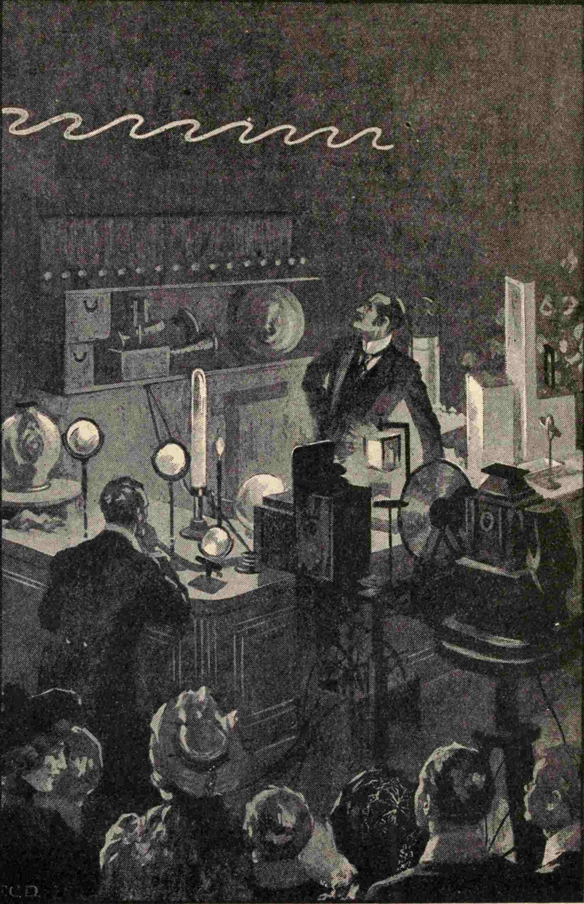
By a time-honoured custom, the Christmas Lectures at the Royal Institution are always addressed to a "juvenile audience." That term, however, has always been held to be an elastic one, taking in those who are young in spirit as well as those who are young in years. The conditions therefore lay on the lecturer the duty of treating a subject in such a way that, while it stays within reach of youthful minds, it may still hold some interest for those of riper years.
A subject that allows plenty of experimental illustration is accordingly a popular one on these occasions, and particularly so if it bears on matters that are attracting public attention at the time. The progress of practical invention or discovery often lifts some fact or principle at a single stroke out of the region of purely scientific investigation and sets it within the view of the general public. A demand then arises for explanations that will dovetail it onto the ordinary experiences of life. The practical use of aether waves in wireless telegraphy has in this way made the subject of waves in general an interesting one.
So when I was allowed the privilege, for a second time, of addressing Christmas audiences at the Royal Institution, I ventured to hope that an experimental treatment of waves and ripples in various media would not be found wanting in interest. Such lectures, reproduced in print, are stripped of the attractions that successful experiments give them; but in response to the wish of many correspondents they have been committed to writing, in the hope that the explanations given may still be of use to a circle of readers.
I trust that the attempt to make the working of visible waves a key to understanding some of the effects produced by waves of an invisible kind may not be altogether unsuccessful; and that those who find any of the imperfect expositions in this little book helpful may be moved by them to study the facts more closely from that "open page of Nature" which lies for ever unfolded for the instruction of those who have the patience and the power to read it aright.
J. A. F.
University College, London, 1902.
We have all stood many times on the seashore, watching the waves roll in, crested with white foam, and break on the rocks or the beach. Everyone has more than once thrown a stone onto the still water of a lake or a pond and noticed the expanding rings of ripples. Some of us have voyaged over stormy seas where great ships are tossed by mighty billows with no more apparent effort than the rocking of a cradle.
In all of these we have been watching what is called a wave-motion, taking place on the surface of water. Perhaps it did not occur to us at the time that the sound of the splash, or the thunder of those breaking waves, was carried to our ears as a wave-motion of another sort in the air we breathe — nor even that the light by which we see these beautiful things is also a wave-motion, of a more hidden kind, produced in a medium called the aether which fills all space.
A steady study of nature has shown us that we are surrounded on every side by wave-motions of various kinds — waves in water, waves in air, and waves in aether — and that our most precious senses, our eyes and our ears, are really wave-detectors of a very special sort. Examining these waves, and their properties and powers, has led us to see that waves in water, air and aether, though they differ greatly in detail, have much in common; and that many things about them which are hard to understand become clearer when we compare the different wave-motions with one another.
In these lectures, then, I shall use your familiar experience of the sea and of water waves to help you understand some of the properties of air waves, to which we owe our sensations of sound and music; and, so far as I can, I shall try to explain the nature of the aether waves created in the all-pervading aether, to which we owe not only light and sight but also many electrical effects, including such modern wonders as wireless telegraphy.
In every department of natural science we find ourselves face to face with the phenomena of wave-motion. In the study of earthquakes and tides, of telegraphs and telephones, of the temperature of the earth itself, no less than in the examination of water waves and ripples, of sound, of music, or of light and heat, we are bound to consider waves of one kind or another.
Fixing our attention for the moment on surface water waves, the first question we shall ask is: what is a wave?
If we take our station on a high cliff looking down on the sea on a clear day when the wind is fresh, we see the waves on its surface like green rounded ridges racing forward, and at first sight it looks as though these ridges were themselves moving masses of water. But if we look instead at a patch of seaweed, or a floating cork, or a seagull, as each wave passes over it, we notice that the object is merely lifted up and let down again — or at most has a small movement to and fro.
We are led to conclude, then, that even when it is agitated by waves, each particle of water never moves far from the place it occupies at rest, and that the real movement of the water is something very different from its apparent motion.
If we put a number of corks or pieces of paper on the surface of water and watch them as a wave passes, we notice that they rise and fall one after another, in succession, and not all together. A little closer scrutiny will show that in the case of sea waves in deep water the motion of a floating object as the wave passes is a circular one: it is first lifted up, then pushed forward, then let down, and lastly pulled back. So it repeats a round-and-round motion, with the plane of the circle lying in the direction the wave is travelling. This is shown in the diagram in Figure 1, where the dotted circles represent the paths described by corks floating on the surface of the sea while waves travel over it.
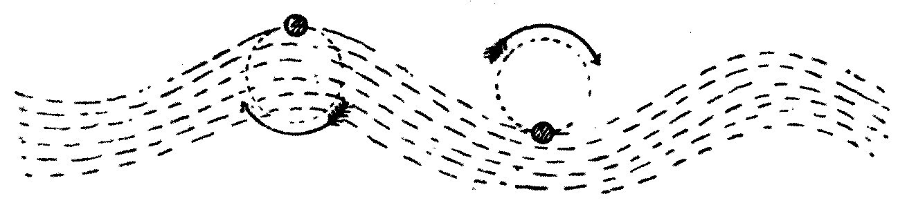
We conclude, then, that we must clearly distinguish between the actual individual motion of each water particle and that general motion which we call the wave-motion.
We may define the latter by saying that to produce a wave-motion, each separate particle of a medium — water, or air, or any other fluid — must carry out a movement which is repeated again and again; and the several particles along any line must perform that same motion one after another, that is, lagging behind each other, and not all at the same moment.
We might illustrate this by supposing a row of fifty boys standing in a line in a playground, each boy in turn lifting his arm and letting it down again, and going on doing so. If all the boys lifted their arms together, that would not produce a wave-motion; but if each did it one after another in order along the rank, it would make a wave-motion travelling along the line of boys.
In more learned language, we may say that a wave-motion exists in any medium when the separate portions of it along any line carry out, in order, some kind of cyclical or repeated motion, the particles along that line performing the movement one after another with a certain fixed delay between each neighbouring pair as regards the stage they have reached in the movement.
It will be plain, then, that there can be many different kinds of wave, depending on the sort of repeated motion the several parts perform.
Some of the many forms of wave-motion can be illustrated by mechanical models, as follows.
A board has a series of wooden wheels fastened to it, and on the rim of each wheel is fixed a white knob. The wheels are connected by endless bands, so that turning one wheel makes them all revolve in the same direction. If the knobs are set at the start so that each is a little ahead of its neighbour on the way round, then when the wheels are standing still the knobs will lie along a wavy line (see Figure 2). On turning the first wheel, each knob moves in a circle, but every knob lags a little behind its neighbour on one side and is a little ahead of its neighbour on the other. The result is to produce a wave-motion; and looking at the general effect of the moving knobs, we see that it looks like a hump travelling along, just as with a water wave.
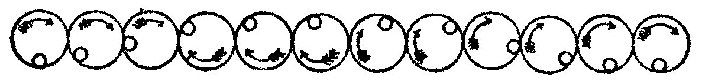
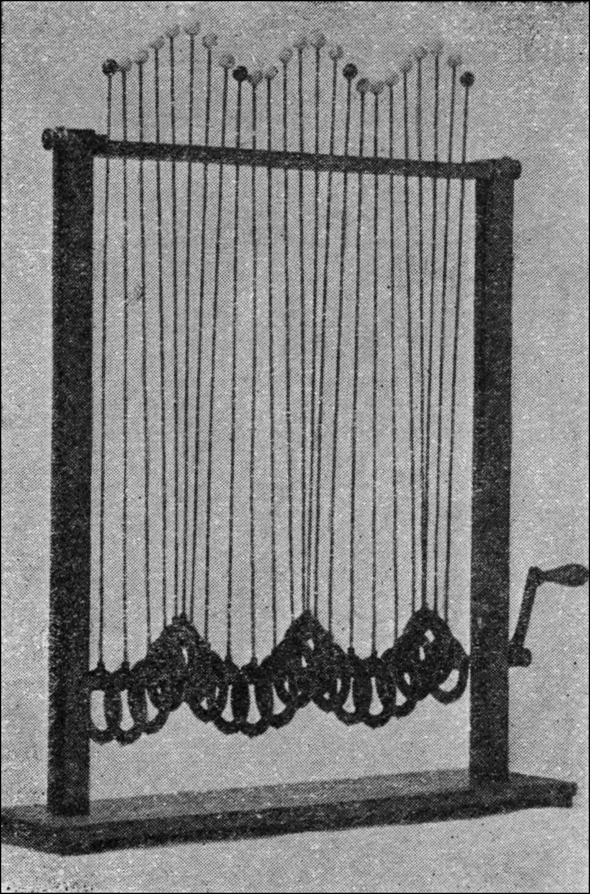
The motion of the particles of water in a deep-sea wave is like that of the white knobs in the model I have described. Those of you who swim will remember your sensations as a sea wave surges over you. The wave lifts the swimmer, pushes him a little forward, lets him down, and lastly drags him back. It is this dragging-back action which is so dangerous to people who cannot swim, when they are bathing on a steep coast where strong waves are rolling towards the shore.
Two other kinds of wave-motion can be illustrated by the model shown in Figure 3. In this apparatus there are a number of eccentric wheels fixed on a shaft. Each wheel is embraced by a band carrying a long rod which ends in a white ball. The wheels are set on the shaft so that when everything is at rest the balls lie in a wavy line. Then, on turning the shaft, each ball rises and falls in a vertical line and carries out a periodic motion, lagging behind that of its neighbour on one side. The result is a wave-motion running along the line of balls. By altering the model slightly, each ball can be made to describe a circle in a direction at right angles to the line of balls, and then we get a sort of corkscrew wave-motion travelling along the row.
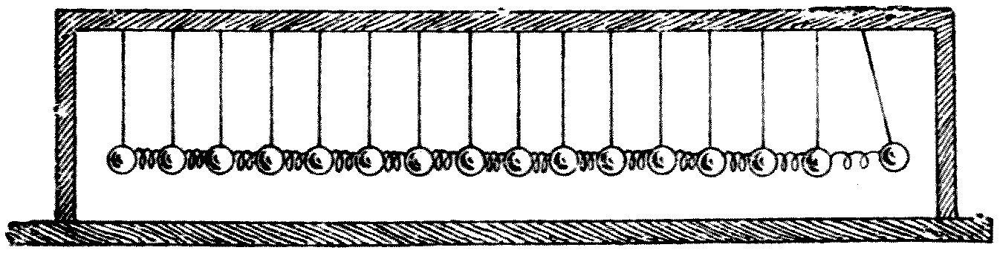
Another form of wave-motion again may be illustrated by the model shown in Figure 4. Here a number of golf balls are hung up by strings, with spiral brass springs put in between them. On giving the end ball a slight tap, we notice that its to-and-fro motion is handed on from ball to ball, and we have a wave-motion in which the individual movement of the balls is along the direction of the wave-movement, and not across it.
The kind of wave illustrated by the model in Figure 3 is called a transverse wave, and the one shown in Figure 4 is called a longitudinal wave.
At this point it may be as well to define some other expressions which will be much used in these lectures.
We have seen that in a wave-motion each part of the medium makes some kind of movement over and over again, and that of its neighbours on either side, one is a little ahead of it in the performance and the other a little behind. If we look along the line, we shall see that we can pick out portions which are at exactly the same stage of movement — that is, moving in the same way at the same moment. The distance between these portions is called one wave-length. In the case of sea waves, then, the distance between two neighbouring crests, or humps, is one wave-length.
When we speak of a long wave, we do not mean a wave of great length along the ridge, but waves whose crests are far apart, measuring from crest to crest across the ridges.
Strictly speaking, the wave-length may be defined as the shortest distance from crest to crest, or from hollow to hollow, or from one particle to the next which is at the same stage of its movement at the same moment.
Another way of illustrating the same thing would be to pleat or pucker a sheet of paper into parallel ridges. If we make the pleats very narrow, they represent what we call short waves; if we make them very far apart, they represent long waves.
Another much-used phrase is wave-velocity. Suppose a seagull were to fly along above a set of sea waves so as to keep always over one particular hump, or crest: the speed of the gull, reckoned in miles per hour or feet per minute, would be called the speed of the waves. That is something very different from the actual speed of each particle of water.
A third expression in constant use is wave-frequency. If we watch a cork floating on a wave-tossed sea, we see it bob up and down so many times in a minute. The number of times per second, or per minute, that each particle of the medium goes through its cycle of motion is called the wave-frequency, or simply the frequency.
We use the term amplitude, again, for the greatest distance each individual particle of the medium moves from its mean position, its position of rest. In speaking of sea waves we generally call the vertical distance between crest and hollow the height of the wave, and that is twice the amplitude.
There is generally a great deal of exaggeration about the height of sea waves. Voyagers are in the habit of speaking of "waves running mountains high," and yet a sea wave more than 40 feet high is a rare sight. Waves have been measured in the southern Indian Ocean between the Cape of Good Hope and the island of St. Paul, and of thirty waves observed the average height was found to be just under 30 feet; the highest was only 37½ feet. On the other hand, waves of 16 to 20 feet are not uncommon. Travellers who have crossed the Atlantic in stormy weather will often tell of waves said to be 100 feet high; but these are exceedingly rare, if they are ever met with at all, and unless wave-heights are got by some accurate method of measurement, the eye of the inexperienced voyager is easily deceived.
In every case of wave-motion there is a very close connection between the wave-velocity, or speed, the wave-length and the wave-frequency. The connection is expressed by the numerical law that the velocity is equal to the length multiplied by the frequency.
So, supposing we take the case of Atlantic waves 300 feet from crest to crest travelling at the rate of 27 miles an hour, and we are asked to calculate the frequency — the number of times per minute, or per second, that a floating object, say a boat, will be lifted as these waves pass under it.
We must first turn a speed of 27 miles an hour into its equivalent in feet per minute. Since one mile is 5,280 feet, 27 miles an hour comes to 2,376 feet per minute. It is then easy to see that the wave-frequency must be 7.92, or nearly 8, because 7.92 times 300 is 2,376. The answer to the question, then, is that the floating object will rise and fall eight times a minute.
The rule may be put in a compact form which it is worth holding firmly in the memory:
Wave-velocity = wave-length × wave-frequency
This relation, which we shall have frequent occasion to call on, may be stated another way. We call the period of a wave the time taken to make one complete movement. The periodic time is therefore inversely proportional to the frequency. So we can say that the wave-length divided by the periodic time gives us the wave-velocity.
In the case of water waves and ripples, the wave-velocity is settled by the wave-length. This is not the case, as we shall see, with waves in air or waves in aether: in those, so far as we know, waves of all wave-lengths travel at the same rate. Long sea waves on deep water, however, travel faster than short ones.
A formal and exact proof of the law connecting speed and wave-length for deep-sea waves needs mathematical reasoning of an advanced kind; but its results can be put very simply by saying that, for waves on deep water, the speed at which they travel in miles per hour is equal to the square root of 2¼ times the wave-length in feet.
So, for instance, if we notice waves on a deep sea 100 feet from crest to crest, then the speed at which those waves are travelling in miles per hour is the number got by taking the square root of 2¼ times 100 — that is, of 225. Since 15 is the square root of 225, because 15 times 15 is 225, the speed of those waves is 15 miles an hour.
In the same way it can be found that Atlantic waves 300 feet long would travel at the rate of 26 miles an hour — as fast as a slow railway train, and much faster than any ordinary ship.
Note: The wave-velocity for waves on deep water varies as the square root of gλ/2π, where λ is the wave-length. The rule in the text is deduced from this formula.
The rule above for the speed of deep-sea waves — wave-velocity equals the square root of 2¼ times the wave-length — combined with the general rule that wave-velocity equals wave-length multiplied by frequency, gives us a useful practical way of finding the speed of deep-sea waves passing any fixed point.
Suppose that well out at sea there is a fixed buoy or rock, and we notice waves racing past it and want to know their speed. We may do it as follows. Count the number of waves that pass the fixed point in a minute, and divide that number into 198; the answer is the speed of the waves in miles per hour. So if ten waves a minute race past a fixed buoy, their velocity is very nearly 20 miles an hour.
Note: If V is the velocity of the wave in feet per minute and V′ the velocity in miles per hour, then (V′ × 5280)/60 = V. But V′ = √(2¼λ), and V = nλ, where λ is the wave-length in feet and n the frequency per minute; from which we get V′ = 198/n, which is the rule given in the text.
Waves have been observed by the Challenger 420 to 480 feet long with a period of 9 seconds. These waves were 18 to 22 feet high, so their speed was 50 feet per second, or nearly 30 knots. Atlantic storm waves are very often 500 to 600 feet long with a period of 10 to 11 seconds. Waves half a mile in length, with a period of 23 seconds, have been observed by officers of the French navy.
It has already been explained that in deep-sea waves the individual particles of water move in circular paths. It can be shown that the diameter of those circular paths decreases very rapidly with the depth of the particle below the surface, so that at a depth equal to only one wave-length, the circle described by each water particle has a diameter only 1/535 of the one at the surface. So storm waves at sea are a purely surface effect. A few hundred feet down — a small distance compared with the depth of the ocean — the water is quite still even when the surface is being tossed by fearful storms, except for whatever steady movement may be due to ocean currents.
Note: The amplitude of disturbance of a particle of water at a depth equal to one wave-length is 1/e^2π of its amplitude at the surface. (See Lamb's Hydrodynamics, p. 189.)
By a more elaborate examination of how wave-motion travels on a fluid, Sir George Stokes showed many years ago that besides the circular motion of the water particles making up the wave, there is also a transfer of water in the direction the wave is moving; the speed of that transfer depends on the depth and falls off rapidly as the depth increases.
This effect, known to sailors as the "heave of the sea," can be clearly seen by watching waves on water that is not very deep. The crest of the wave will be seen to advance faster than the hollow until the wave falls over and breaks; then a fresh wave forms behind it and the process is repeated. So waves break if the depth of water beneath them decreases, and we know from the presence of breakers at any place that there is a shoal or sandbank there.
Next I must point out the difference between a mere wave-motion and a true wave. It has been explained that in a wave-motion each of a series of neighbouring objects carries out the same movement in turn. We have all seen the wind blowing across a cornfield on a breezy day, producing a sort of dark shadow which sweeps along the field. That is plainly caused by the wind bending down each row of cornstalks in turn; and as row after row bows and springs up again, we get the appearance of a wave-motion in the form of a rift rushing across the field.
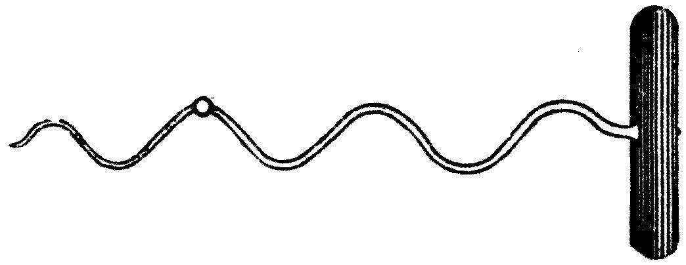
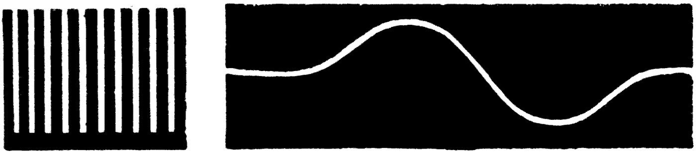
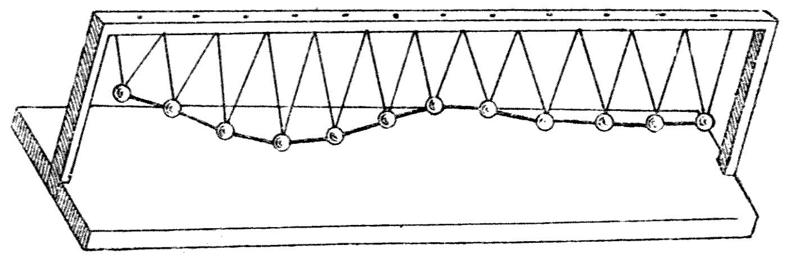
A very similar effect can be produced, and another illustration of a wave-motion given, in this way. Coil a piece of brass wire into an open spiral like a corkscrew and fix a small fragment of sealing-wax to it (see Figure 5). Hold it in the sun and let its shadow fall on paper. Then turn it round like a screw. We shall see that the shadow of the spiral is a wavy line, and that as it turns, the humps appear to travel along just as the crests of sea waves do — but the shadow of the little bit of sealing-wax simply moves up and down.
Another wave-motion model can be made as follows. Get a painter's comb — a thin steel plate cut into long narrow teeth. Get also a slip of glass about 3 inches wide and 12 inches long. Paint one side of the glass with black enamel varnish, and when it is quite dry scratch a wavy line on it (see Figure 6). Place the glass slip close in front of the comb, in front of the light, and, holding the comb still, move the glass slip to and fro lengthways. The observer will see a row of dots of light lying along a wavy line, and as the glass moves these will rise and fall. If the movement is quick enough, a wave will appear to travel along.
In all these displays of wave-motion the movement of the particles is due to a common cause, but the moving particles do not control each other's motion. There is no connection or tie between them.
Suppose, however, that we hang up a series of heavy balls like pendulums and connect them to one another with elastic threads (see Figure 7). Then we have an arrangement along which we can propagate a true wave. Draw the end ball to one side and notice what happens when it is released. The first ball, being displaced, pulls the second one through a smaller distance, and that one the third, and the third the fourth, and so on. This happens because the balls are tied together by elastic threads which resist stretching.
When the first ball is released it is pulled back by the tension of the thread joining it to its neighbours, and it starts to return to its old place. But the ball has a quality called inertia, so that once set moving, its motion persists until some opposing force brings it to rest. So the returning ball overshoots the mark and passes to the other side of its original resting place. That displacement stretches the elastic threads joining it to its fellows, and so creates a restraining or retarding force which brings it to rest and drives it back again the way it came.
We see, then, that each ball must oscillate, must swing to and fro, and that its movement is gradually passed on to its neighbours. A wave-motion is thus started, and a true wave travels along the line of balls, in consequence of the presence of elasticity and inertia.
The necessary conditions for producing a true wave in a medium of any kind are therefore: first, that the medium must elastically resist some sort of deformation; and second, that when it has been deformed at any place and returns to its original state, it must overshoot the mark, must persist in movement, because of inertia or something equivalent to it.
Note: This can easily be shown to an audience by projecting the apparatus on a screen with an optical lantern.
Briefly, any material or medium in which, or on which, a true self-propagating wave-motion can be made must resist and must persist. It must have an elastic resistance to some change or deformation, and it must have an inertia which makes it persist in movement once it is set moving. These two qualities, or others equivalent to them, must always be present if we are to get a true wave in a medium.
These things are best understood by considering, for example, how surface waves are produced on water. Let us ask ourselves first what alteration, what change, a water surface resists. The answer is that, for one thing, it resists being made unlevel. A still water surface is everywhere level. If we try to make it unlevel by pouring water onto it at one point, or by heaping it up, the surface resists. We can dig a hole in sand, or heap sand up into a hillock, but we know perfectly well we cannot do the same with water. If, for instance, some water is put into a glass tube shaped like the letter U, it stands at the same level in both limbs.
Again, water being a heavy substance, once it is set moving it cannot be brought to rest instantly. Like every other body, it has inertia. So if we do manage by any means to make a depression in a water surface for an instant, the water immediately presses in to fill the hole — and more than that: it overshoots the mark, and because of its inertia it creates a momentary hump, an elevation, in the very place where an instant before there was a depression.
That elevation subsides into a hollow again, and the process goes on until the motion of the water is brought to rest by friction, or by the gradual dispersal of the original energy.
The way a wave is started on the surface of water by these two qualities — resistance to being made unlevel, and persistence in motion — is beautifully shown by studying the waves made when stones are thrown into a pond. The events that give rise to the expanding wave are over so quickly, however, that they can only be studied with the help of instantaneous photography.
The most interesting work on this subject is Professor A. M. Worthington's, who has photographed, by the exceedingly brief light of an electric spark, the various stages of what happens when a drop of water or a stone falls into water. These photographs show us everything that happens as the falling object touches the water, and the way it gives rise to the wave or ripple that results. Some of Professor Worthington's results for a drop of water falling into milk are reproduced in the diagrams here. In the first (Figure 8) the drop is seen just entering the liquid. As it plunges down it leaves a cavity behind it — a hole in the water, as it may be called (see Figure 9).
Note: See "The Splash of a Drop," by Professor A. M. Worthington, F.R.S., in the Romance of Science series, published by the Society for Promoting Christian Knowledge.
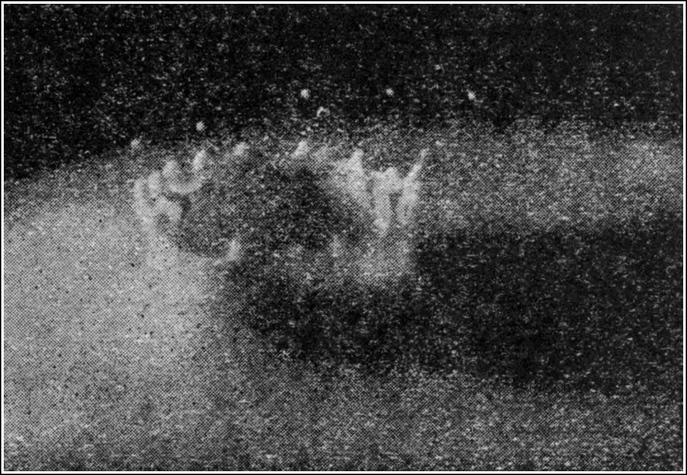
That hole, at a certain stage, begins to fill up. The water rushes in from all sides, and the impetus carries the inrushing water up so far that it builds a tall pillar of water in the very place where an instant before there was a hole (see Figure 10). Nobody could have anticipated so extraordinary an effect; but the instantaneous photographs which reveal it, taken by the light of an electric spark, cannot but be truthful.
The next stage is that this pillar of water breaks up and falls back onto the surface. So the water where the drop plunges in is subjected to two violent impulses — a downward one followed by an uplifting one. The effect of that is exactly like giving a blow to the connected string of balls in the model shown in Figure 7: it sends off a wave. Figure 10 shows the next stage, in which this outward-moving initial wave-crest appears.
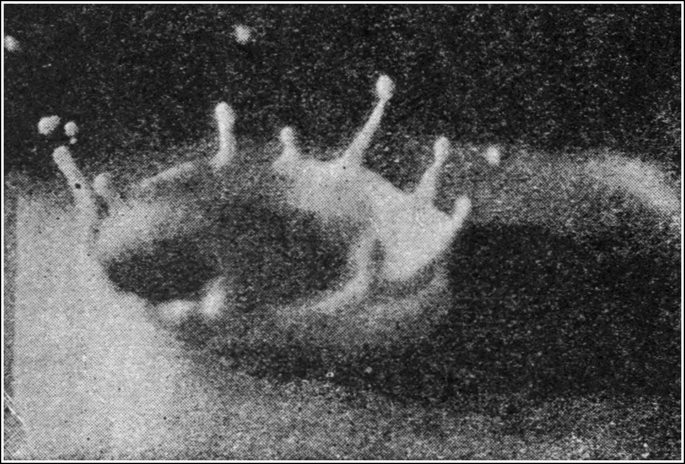
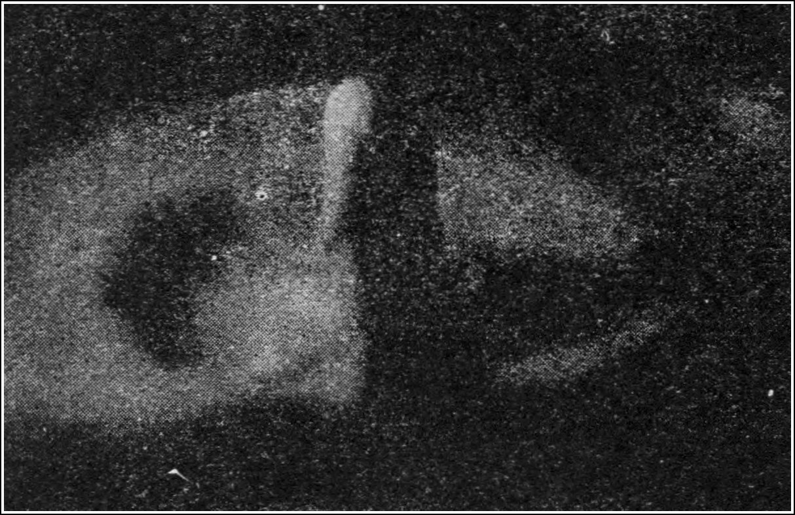
So much for the events revealed by the flash of an electric spark. But after them comes a long train of interesting wave-making performance which can be watched with the eye, or photographed stage by stage with a hand camera. This wave production is best seen when a large stone is thrown into the calm water of a lake or pond.
There is a story told of the great artist Turner, that he once spent a morning throwing stones into a pond. A friend reproved him for his idleness. "No," said the painter, "I have not been idle; I have learnt how to paint a ripple." If an artist's eye has to be so carefully trained to notice all there is to see when a stone is thrown into a pond, it is not strange that a careless observer cannot take in at once what really happens to the water in this everyday event.
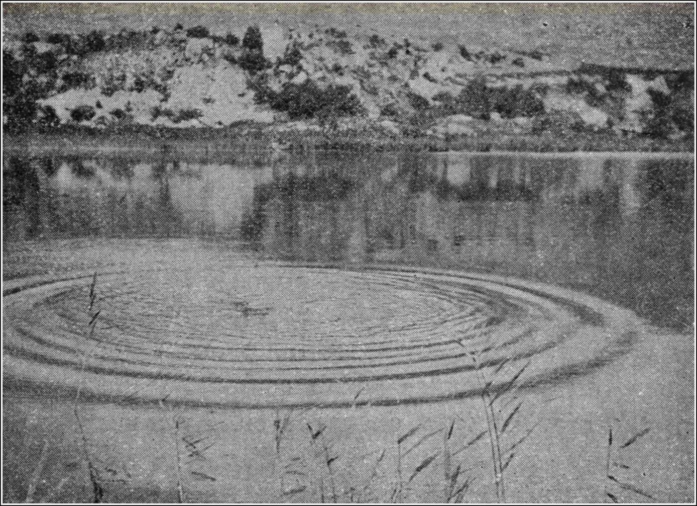
The photograph in Figure 11 will show one stage of the event. As soon as the first wave-crest is formed — and we have already explained how it arises — it begins to move outwards in a circle; and as it moves it gives rise to a wave-train, that is, it multiplies itself into a series of concentric ripples, or waves, which move outwards, growing in number but getting smaller as they go.
So if a large stone is thrown far out into a deep, still lake, then after the first splash we shall see a circular wave spreading out from the place where the disturbance was made. As we watch this wave we shall see it growing in size and multiplying itself. At first there is only a single wave; then two, four, seven, ten or more concentric ripples appear, each circular wave expanding and getting fainter but seeming to give birth to others as it moves.
What is more, a very careful examination will show us that the whole group of waves — the wave-train — moves outwards more slowly than any individual wave in it. This observation will introduce the ideas of a wave-train and of a wave-group velocity.
At first it is hard to understand that a group of waves may move more slowly than the individual waves composing it. But if we throw a stone into a pond and look very carefully at what happens, we shall see that the circular expanding band of ripples has an ill-defined but visible inner edge and outer edge, and that the wavelets or ripples composing it are continually being brought into existence at the inner edge and dying away at the outer one. Waves, so to speak, pass through the band of ripples faster than the band as a whole moves forward.
This rather difficult but important idea — the distinction between the velocity of a group of waves and that of an individual wave — was first suggested by Sir George Stokes, who set a question on the subject in a Cambridge examination in 1876; it was afterwards worked out by Professor Osborne Reynolds and Lord Rayleigh.
Note: See Osborne Reynolds, Nature, vol. 16, 1877, p. 343, a paper read before the British Association at Plymouth; see also the Appendix, Note A.
It can be explained further as follows. Consider a wave-motion model like the one shown in Figure 7, in which a number of hanging heavy balls are connected to one another by elastic threads. Draw one ball in the centre aside and then release it. It will swing to and fro and will start a wave outwards in both directions.
If the row of balls is long enough, it will be seen that the ball which started the wave soon comes to rest, and that the wave-motion is confined to a certain group of balls on either side. As time goes on, the wave-motion in each group dies away on the side nearest the origin and extends on the side further away. So the particular group of balls which is the seat of the visible wave-motion is continually being shifted along.
The rate at which the centre of this active group of vibrating balls moves may be called the velocity of the wave-train. The velocity of the wave itself is something greater, since the waves are all the while travelling through the group. That wave-velocity is worked out numerically by taking the product of the wave-length and the frequency of the motion.
At this point I must explain that waves are not merely a mode of motion; they are a means of conveying energy. It is difficult to give any simple compact definition of what modern scientific writing means by the word energy.
Briefly, we may say that there are two fundamental agencies, or things, in nature with which we are in contact, showing themselves in many different forms but of which the total quantity cannot be changed by anything we do.
One of them is called matter. The term is the collective name for all the substance, all the stuff, we can see or touch, which can be weighed or has weight. All known solids, liquids and gases — ice, water, steam, iron, oil, air — are called material substances, and they have in common the two qualities of taking up room and of having weight.
Experiment has shown that there are some eighty different kinds of simple matter which cannot be turned into one another, and these are called the elements. Every other material substance is made up of mixtures or combinations of them. The elements are therefore like the letters of the alphabet, which taken in groups make up words — the words corresponding to compound chemical bodies.
Exact research has shown that no chemical change taking place in a closed space can alter the total weight, the total amount of gravitating matter, inside it. If a chemist and a quantity of chemicals were shut up in a great glass ball, and the ball were balanced on a gigantic but very sensitive pair of scales, nothing the chemist could do inside his crystal laboratory would alter the total weight of it all by the ten-thousandth part of a grain. He might analyse his chemicals or combine them, burn them or mix them as he pleased; so long as nothing entered or escaped from the ball, the total gravitating mass would stay precisely the same.
This great fact is called the law of the conservation of matter, and it teaches us that although a scuttle of coal may seem to disappear when it is burnt, yet the weight of the ashes and of all the gaseous products of the burning together equals the weight of the original coal plus the air needed to burn it.
Besides the various material substances, we find we have to recognise different forms of something called energy, associated with matter. An iron ball may be more or less hot, more or less electrified or magnetised, or moving with more or less speed. Producing these states of heat, electrification, magnetisation or movement involves transferring energy to the iron, and they are themselves forms of energy.
Energy in all its various forms can be evaluated, measured, in terms of the energy of movement. The energy needed to heat a ball of iron weighing one imperial pound from the temperature of melting ice to that of boiling water is nearly equal to the energy needed to give it a speed of 1,000 feet a second.
In the same way, every definite state of electrification or magnetisation can be expressed in what is called its mechanical equivalent. Moreover, it is found that we can never create any quantity of heat, or mechanical motion, or any other form of energy, without putting out of existence an equivalent amount of energy in some other form.
We are therefore obliged to consider that energy stands on the same footing as matter as regards our inability to create or destroy it; and its constancy in total amount, so far as we can tell, gives it the same character of permanence. The difference is that we cannot, so to speak, earmark a given quantity of energy and follow it through all its transformations in the way we can mark and identify a certain portion of matter.
The moment we go beyond these merely quantitative ideas, however, and start asking further questions about the nature of energy and matter, we find ourselves in the presence of inscrutable mysteries. We are not yet able to analyse into anything simpler this "something" we call energy, which presents itself in the guise of heat or light, electricity or magnetism, movement or chemical action. It is protean in form, intangible, yet measurable in magnitude, and all its changes are by definite equivalent amount and value.
There is a most rigid system of book-keeping in the transactions of the physical universe. You may have anything you like in the way of energy served out to you, but the amount is debited to your account immediately, and the bill has to be settled by paying an equivalent in some other form of energy before you can take the goods away from the counter.
Matter in its various forms serves as the vehicle of energy. We have no experience of energy apart from matter of some kind, nor of matter altogether devoid of energy. We do not even know whether the two things can exist separately, and we can give no definition of one which does not somehow presuppose the existence of the other.
Coming back, then, to waves: we may say that a true wave can only exist where energy can be associated with a medium in two forms, and that the wave is a means by which that energy is carried from place to place.
It has already been explained that a true wave can only be created in a medium which elastically resists some kind of deformation and which persists in motion by virtue of inertia. When a material has such a resistance to some kind of strain or deformation, of such a character that the deformation disappears when the force creating it is withdrawn, it is called an elastic material.
This elasticity may arise from various causes. Air resists being compressed, and if the compressing force is removed the air expands again: it has what is called elasticity of bulk. In the case of water with a free surface there is, as we have seen, a resistance to any change of level at the surface; this might be called an elasticity of surface form.
Whenever an elastic material is strained or deformed, energy has to be spent on it to create the deformation. Winding up a watch spring, stretching a piece of rubber, compressing some air, or bending a bow all require an expenditure of energy.
As long as the material is held strained, it is said to have potential energy associated with it. That term is not a very expressive one, and it would be better to call it energy of strain, or of deformation. If we relax the bent bow, however, or release the compressed air, the energy of strain disappears and we find it replaced by energy of motion. The arrow that flies from a bow carries away with it, as energy of motion, part of the energy of strain that was in the bent bow.
A little examination of wave-motion shows us, then, that at any instant we always have both energy of strain and energy of motion associated with the material the wave is travelling in. It can be shown that in a true wave of permanent type, the whole energy at any one moment is half energy of strain and half energy of motion — or, as it is called, half potential and half kinetic.
So if we consider a wave travelling along a line of elastically connected balls, at any one moment some of the balls are moving at their greatest speed and some are at the extremity of their swing. The first have energy of motion; the second have energy of strain.
Or look at a train of sea waves. Some parts of the water are at any moment lifted high above the average level of the sea, or lie far below it, but are otherwise nearly at rest. Those portions have what is called potential energy, or energy of position. Other parts of the water are at the average level of the sea but are moving with considerable speed, and those portions have energy of motion. Every other part of the wave has both energy of motion and energy of position to some degree; and it can be shown that the energy of the whole wave is half of the one kind and half of the other.
As a wave travels over the surface, wave-energy is continually being given to portions of the water in front of it and taken away from others behind. In the very act of setting a fresh particle of water oscillating, the portions already vibrating must diminish their own motion. They may hand on the whole of their energy to their neighbours, or only part of it. This distinction is a very important one, and it decides whether a single act of disturbance will create a solitary wave in a medium or a wave-train.
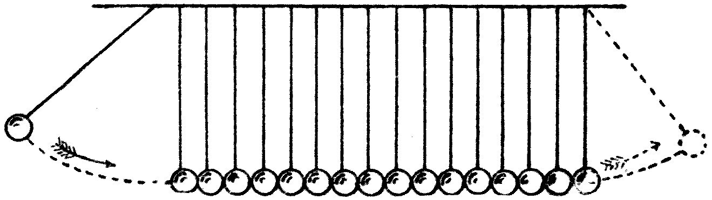
The difference may be illustrated as follows. Consider a row of glass or steel balls hung by threads so that they are quite close to each other (see Figure 12). Draw the first ball back and let it fall against the second. The result is that the last ball of the row flies off with a jerk. Here the whole energy given to the first ball is transmitted along the row.
The first ball, falling against the second, exerts a pressure on it which slightly squeezes both out of shape; and that pressure is just enough to bring the first ball to rest. The second ball in turn expands after the blow and squeezes the third, and so on. So, by Newton's third law of motion — that action and reaction are equal and opposite — the pressure produced by the blow of the first ball is handed on from ball to ball, and finally makes the last ball fly off.
In this case, because of the rigid connection between the elastic balls, each hands on to its neighbour the whole of the energy it receives. But suppose we separate the balls slightly and give the first ball a transverse, side-to-side swing. Then, since there is no connection between the balls, the energy given to the first would not be handed on at all, and no wave would travel.
Between these two extremes — all the energy transferred and a solitary wave produced, and no energy transferred and no wave produced — we have a condition in which an initial disturbance of one ball gives rise to a wave-train, and part of the energy is transferred.
For if we connect the balls to one another by loose elastic threads and then give the first ball a sideways impulse as before, it will pull the second one and set it swinging, but it will itself be pulled back and to some extent robbed of its motion. The same sharing or division of energy will take place between the second and third balls, and the third and fourth, and so on.
So the initial solitary vibration of the first ball is drawn out into a wave-train, and the energy originally given is spread out over a number of balls instead of being concentrated in one. As time goes on, therefore, the wave-train is always growing longer and the oscillation of each ball is dying away; the original energy gets spread over a wider and wider area, over more and more balls — but it travels more slowly than the wave-velocity for that medium.
There need be no difficulty in distinguishing between the idea of a wave-velocity and that of a wave-train velocity, if we remember that a wave travels a distance equal to one wave-length in the time taken by one oscillation. So the wave-velocity is measured by dividing the wave-length by the time of one complete vibration.
If, for example, the wave-length of a water wave is 4 inches, and we observe twelve waves passing a given point in 3 seconds, we can infer at once that the wave-velocity is 16 inches per second. The transfer of energy, however, may take place in such a way that the whole group of waves moves forward much more slowly. The group moves forward because waves are dying out at its rear and being created at its front; and in the case of deep-water waves the rate at which the group moves is half the velocity of a single wave.
A very rough illustration of this difference between a group velocity and an individual velocity may be given by supposing a barge being slowly towed along a river. Let a group of boys run along the barge, dive over the bows, come up at the stern and climb in again. Then the velocity of the group of boys on the barge is the same as the speed of the barge; but the speed of each individual boy through space is the speed of the barge plus the speed of the boy relative to the barge. If the barge is towed at 3 miles an hour and the boys run along the boat at 3 miles an hour too, then the velocity of the group of boys is only half that of an individual boy — the one being 3 miles an hour and the other 6.
Before leaving the subject of sea waves there are two or three interesting matters to consider. In the first place, the breaking of a wave on the shore, or in shallow water, calls for an explanation.
If we watch a sea wave rolling in towards the beach, we notice that as it nears the shore it gets steeper on the shore side and gradually curls over until it falls and breaks into spray. The reason is that as the wave comes into shallow water, the top of it advances faster than the bottom. It has already been explained that the path of a water particle is a circle, lying in a vertical plane at right angles to the wave-front.
So when the wave is moving in shallow water, the friction of the water against the bottom holds back the backward movement at the lowest part of its path, while there is no such obstacle to the forward movement at the highest part. A further reason for the wave's deformation on a gently shelving shore is that the front of the wave is then in shallower water and therefore moves more slowly than the rear, which is still in deeper water. From both causes the wave grows steeper and steeper on its landward side, until it curls over and tumbles down like a house that leans too far to one side. The curling over of a breaking wave is a beautiful thing to watch, and it catches the eye of every artist who paints seascapes and storm waves, and of every lover of nature who lingers by the shore.
Another matter of interest is where sea waves come from. They are undoubtedly due in the first place to the action of the wind on the water. Whenever two layers of fluid lie in contact and one moves faster than the other, the faster-moving layer throws the other into waves. This is seen not only in the action of moving air, of wind, upon water, but even in the action of air upon air, or water upon water.
From the tops of high mountains we may sometimes look down on a flat surface of cloud beneath. On one occasion I enjoyed a curious spectacle from the summit of an Alpine peak. The climb up had been through damp and misty air, but on reaching the summit the clouds were left behind and there was a canopy of blue sky and glorious sunshine overhead. Below, the clouds lay packed close like a sea of white vapour, and through this ocean of cloud the peaks of many high mountains rose up like islands.
The surface of that sea of white cloud, brilliantly lit by the sunshine, was not perfectly smooth. It was tossed into cloud waves and billows by currents of air blowing over its upper surface, and it had a striking likeness to the surface of a rough sea. When such a cloud layer is not too thick, the ruffling of its upper or lower surface into cloud waves may thin it away into regular cloud rolls; and these rollers may then be cut up again by cross-currents of air into patches, giving the appearance known as a "mackerel sky."
Another familiar phenomenon is the "ripple mark" on wet sand. As the tide ebbs out over a smooth bank of sea sand, it leaves the surface ploughed into regular rounded ridges and furrows, which are stationary waves in the sand. This is the ripple mark. It arises because the sand, while it is covered by water, forms a surface which is in a certain sense fluid, being saturated and filled with water; but the movement of that waterlogged bottom layer is hindered by the sand, so the overlying layer of water moves over it at a different speed as the tide ebbs, and carves it into what are effectively sand waves.
Even a dry sand or snow surface may be moulded into wave forms by the wind in this way, and very curious effects of the kind have been noticed and described by Dr. Vaughan Cornish, who has made a great study of the science of waves.
Note: A very interesting article on "Kumatology, or the Science of Waves," by Mr. Marcus Tindal, appeared in Pearson's Magazine for July 1901. It gives many interesting facts about sea waves, and pictures of them.
Waves can easily be produced on water on a small scale by a current of air blowing over it: blow through a rubber pipe with its end held near the surface of the water in a tub or tank. Exactly how the moving air gets a grip on the water is not quite plain; but it is clear that once an inequality of level has been set up, the moving air has an oblique surface to press against, and can increase the inequality by heaping the water up in some places and hollowing it out in others.
So oscillations of the water surface are set up which go on accumulating. The waves then travel away at a speed depending on their wave-length, and we may get great disturbances of the sea surface at places where there is no actual storm wind at all. These "echoes of a far-off storm" are known as a ground swell. In some places the inhabitants can warn themselves of a coming storm by noticing movements of the sea which show the arrival of waves that have travelled faster than the storm-centre itself.
Every visitor to the seaside will have noticed occasions when the sea is violently disturbed by waves and yet the air thereabouts is tolerably calm. In that case the waves have travelled from some point of disturbance a long way off.
A study of breaking waves shows us that their great power to damage coastal structures — piers, harbour works, shipping in harbours — is really due to the forward motion of the water as the wave breaks. Every cubic foot of water weighs 63½ lb., so a cubic yard of water weighs about three-quarters of a ton. If that water is moving forward at many feet a second, the energy of motion stored in it is tremendous, and quite enough to account for the destructive power of storm waves on a coast.
The total volume of water contained in even one storm wave of moderate size may have a mass of many hundreds of tons, and its energy of motion may easily equal that of a moving express train. So when, in the last stage of its career, that mass of water is hurled forward onto the shore, its destructive effects are no matter for surprise.
We must now leave the subject of waves in the open sea on a large level surface, and consider waves in narrow channels such as canals or rivers. The laws governing the production of water waves in a canal are best studied by putting some water in a long tank with glass sides. If we put a flat piece of wood in at one end and give it a push forward, we shall start what is called a long wave in the tank. The characteristic of this kind of wave is that the oscillation is chiefly to and fro, not up and down.
This is very easily seen by putting some bran into the water, or floating in it glass balls adjusted so as to float anywhere in the body of the water. When that is done and a wave is started in the tank, it runs up and down, being reflected at each end (see Figure 13).
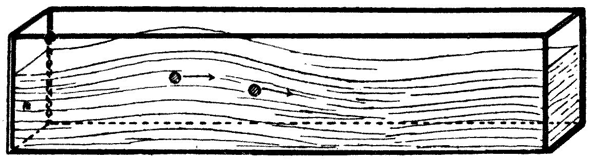
From the motion of the bran we can see that the water swings backwards and forwards in a horizontal line with a pendulum-like motion, while its up-and-down movement is far more restricted. A wave of this kind travels along a canal at a speed which depends on the depth of the canal.
If waves of this kind are started in a very long trough, the wave-length being large compared with the depth, it can be shown that the speed of the wave equals the speed a stone or other heavy body would gain in falling through half the depth of the canal. So the deeper the water, the faster the wave travels.
This can be shown as an experimental fact in the following way. Take two galvanised iron tanks, each about 6 feet long and a foot wide and deep.
Note: Lord Kelvin (see his lecture on "Ship Waves," Popular Lectures, vol. iii, p. 468) says the wave-length must be at least fifty times the depth of the canal.
At one end of each tank float a hollow cylinder — a coffee canister, or a ball made watertight — and keep it from drifting by attaching it to a hinged rod, like the ball-cock of a cistern. Set the two tanks side by side, and fill one to a depth of 6 inches and the other to a depth of 3. Then take two pieces of wood joined together as in Figure 14 to make a double paddle. By pushing this through the water in both tanks at once, at the end away from the floats, we can start two solitary waves, one in each tank, at the same instant. The waves rush to the far end and make the floats bob up. It will easily be seen that the float on the deeper water bobs up first, showing that the wave on the deeper water has travelled along its tank faster than the wave on the shallower.
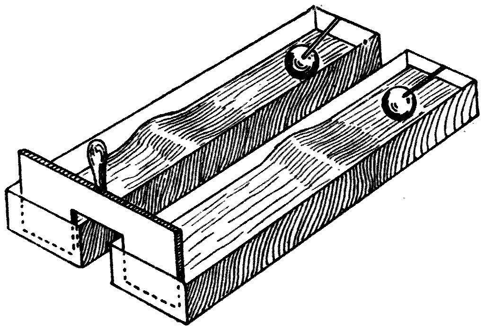
To calculate the speed of the waves we must recall the law governing the speed of falling bodies. When a stone falls from a height its speed increases as it falls. It can be shown that its speed in feet per second, after falling from any height, is got by multiplying together the number 8 and the square root of the height in feet.
So, for instance, if we want to know the speed reached in falling from a height of 25 feet above the earth's surface, we multiply 8 by 5, that last being the square root of 25. We find the velocity to be 40 feet per second, or about 26 miles an hour.
The force of the blow a body gives, and suffers, on striking the ground depends on the energy of motion it has gained during the fall; and since that varies as the square of the speed, it varies also as the height fallen through.
Let us apply these rules to work out the speed of a long wave in a canal with 8 feet of water in it. The half-depth is therefore 4 feet, and the square root of 4 is 2; so the speed of the wave is that of a body which has fallen from a height of 4 feet, which is 16 feet per second, or nearly 11 miles an hour. When we come to consider waves made by ships in the next chapter, I shall tell you the story of a scientific discovery made by a horse employed in dragging canal boats, which depended on the fact that the speed of long waves in that canal was nearly the same as the horse's trotting speed.
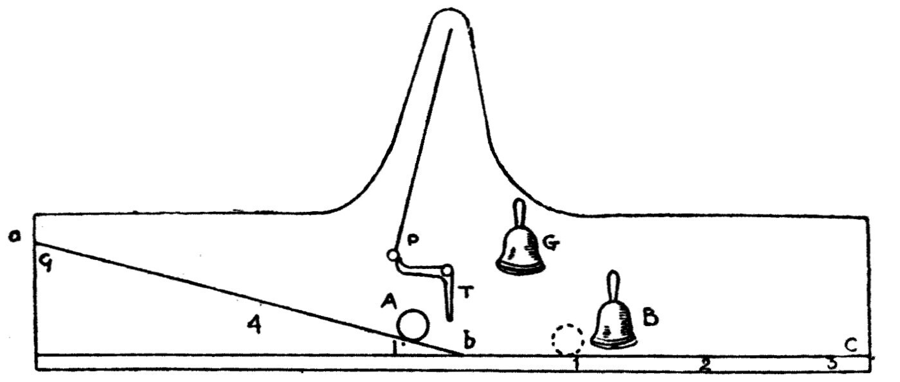
It may be as well, as a small digression, to point out how the law connecting the height fallen through with the velocity gained can be demonstrated experimentally for teaching purposes.
The apparatus is shown in Figure 15. It consists of a long board, about 16 feet long, set horizontally and held with its face vertical. Attached to the board is a grooved railway, part of it on a slope and part horizontal. A smooth iron ball, A, about 2 inches across, can run down this railway, and is stopped by a movable buffer or bell, B, which can be clamped at various positions on the horizontal rail. At the foot of the incline is a light lever, T, which the ball touches on reaching the bottom of the hill. The trigger releases a pendulum, P, held engaged on one side, which when released takes one swing and strikes a bell, G. The pendulum takes half a second to make its swing.
The experiment is then done as follows. The iron ball is placed, say, 1 foot up the hill and released. It rolls down, releases the pendulum at the moment it reaches the bottom, and then spends its momentum running along the flat part of the railway. The buffer must be placed, by trial, so that the ball hits it at the instant the pendulum strikes the bell. The distance the buffer has to be from the bottom of the hill is a measure of the velocity the ball gained in falling the set distance down the slope.
The experiment is then repeated with the ball placed four times and nine times as high up the hill, and it will be found that the distances the ball runs along the flat in half a second are in the ratio 1, 2, 3, when the heights fallen through are in the ratio 1, 4, 9.
The inference we draw from this experiment is that the velocity a body gains in falling through any distance is proportional to the square root of the height. The same law holds however steep the hill, and therefore it holds when the body — a stone, or a ball — falls freely through the air.
The experiment with the ball rolling down a slope is an instructive one to make, because it brings clearly before the mind what is meant by saying, in scientific language, that one thing "varies as the square root" of another. We meet so many instances of this kind of variation in studying physics that the reader — and especially the young reader — should not be satisfied until the idea these words convey has become perfectly clear to him or her.
So, for instance, the time of vibration of a simple clock pendulum "varies as the square root of the length"; the velocity of a canal wave "varies as the square root of the depth of the canal"; and the speed a falling ball gains "varies as the square root of the distance fallen through." These phrases mean that if we have pendulums whose lengths are in the ratio 1 to 4 to 9, then their times of vibration are in the ratio 1 to 2 to 3. A similar relation connects canal depth with wave velocity, and ball velocity with height of fall.
Coming back to canal waves, I should point out that the real path of a particle of water in a canal, when long waves are passing along it, is a very flat oval curve called an ellipse. In the extreme cases, when the canal is very wide and deep, this ellipse becomes nearly a circle; when it is narrow and shallow, the ellipse becomes nearly a straight line. So if long waves are made in a canal that is shallow compared with the length of the wave, the water particles simply swing to and fro in a horizontal line.
There is one important fact about wave propagation in a canal which bears heavily on how what is called a "bore" is formed. As a wave travels along a canal, it can be shown both experimentally and theoretically that the crest travels faster than the hollow; and as a result the wave grows steeper on its front, until its shape resembles a saw tooth.
A very well known and striking natural phenomenon is the so-called bore in certain tidal rivers and estuaries. It is well seen on the Severn in certain states of tide and wind. The tidal wave returning along the Severn channel, which narrows rapidly as it leaves the coast, is converted into a canal wave and travels up the channel with great speed. The front of this great wave takes an almost vertical position, like an advancing wall of water, and works great havoc with any boats and shipping unlucky enough to be left in its path.
To understand more fully how a bore is formed, I must remind the reader of the cause of all tidal phenomena. Anyone who lives by the sea or an estuary knows well that the sea level rises and falls twice in every 24 hours, and that the average interval between one high water and the next is nearly 12½ hours. The cause of this change of level is the attraction the sun and moon exert on the ocean.
The earth is, so to speak, clothed in a flexible garment of water, and that garment is pulled out of shape by the attraction of those two bodies. Very roughly, we may say that the ocean surface is distorted into a shape called an ellipsoid, so that there are two elevations of water which march across the sea-covered parts of the earth as it turns on its axis. These elevations are the tidal waves. The effects are much complicated, however, by the fact that the ocean does not cover the whole earth.
There is no difficulty in showing that as the tidal wave travels round the earth across each great ocean, it produces a rise of the sea surface which is not simultaneous everywhere. The moment when the crest of the tidal wave reaches any place is called the time of high tide there. So if we consider an estuary such as the Thames, there is a marked difference in the time of high tide as we go up it.
Taking three places — Margate, Gravesend and London Bridge — we find that if high tide at Margate falls at noon on some day, then it is high tide at Gravesend at 2.15 p.m. and at London Bridge a little before three o'clock. The difference is the time the tidal wave takes to travel up the estuary of the Thames.
When an estuary contracts a great deal as it goes inland, as the Bristol Channel does, the range of the tide — the height of the tidal wave — is greatly increased as it travels up the narrowing channel, because the wave is squeezed into a smaller space. The range of spring tides at the entrance of the Bristol Channel is about 18 feet, but at Chepstow it is about 50. At oceanic ports on the open sea the range of the tide is generally only 2 or 3 feet.
Note: See the article "Tides," by G. H. Darwin, in the Encyclopædia Britannica, 9th edition, vol. 23, p. 353.
If we look at a map of England we shall see how rapidly the Bristol Channel contracts. As the tidal wave comes in from the Atlantic it gets jammed in this rapidly narrowing channel; and as the depth of water it is moving in shallows quickly, the rear of the tidal wave, being in deeper water, travels faster than the front and overtakes it, producing a flat or straight-fronted wave that goes forward at tremendous speed.
Note: The progress of the Severn bore has been photographed and reproduced by kinematograph by Dr. Vaughan Cornish. For a series of papers on this sort of wave by Lord Kelvin, see the Philosophical Magazine for 1886 and 1887.
We must next turn our attention to water ripples. The word "ripple" is generally used for a very small and short wave, and in ordinary speech it is not distinguished from what might be called a wavelet, a little wave. There is, however, a scientific distinction between a wave and a ripple, and a very fundamental one.
It has already been said that a wave can only exist, or be created, in or on a medium which elastically resists some displacement. The ordinary water-surface wave is called a gravitation wave, and it exists because the water surface resists being made unlevel. But there is another thing a water surface resists: it opposes being stretched a little, by virtue of what is called its surface tension.
Put in a popular way, the matter stands thus. The surface of every liquid is covered with a sort of skin which, like a sheet of rubber, resists stretching — and in fact contracts, under the conditions that exist, so as to become as small as it can. We can see an illustration of this in a soap bubble. If a bubble is blown on a fairly wide glass tube, then on taking your mouth away the bubble shrinks rapidly and the air inside is squeezed out of the tube with enough force to blow out a candle held near the end.
Again, if a dry steel sewing needle is laid gently and horizontally on clean water, it will float, although the metal itself is heavier than water. It floats because the weight of the needle is not enough to break through the surface film. It is for this reason that very small, light insects can run freely about on the surface of a pond.
This surface tension can be destroyed or reduced, however, by putting various substances on the water. If a small disc of writing paper the size of a wafer is laid on the surface of clean water in a saucer, it will stay in the middle; the surface film it rests on is strained, pulled equally in all directions. But if a wire is dipped in strong spirits of wine or whisky and one side of the paper touched with the drop of spirit, the paper shoots away at great speed in the opposite direction. The surface tension on one side has been reduced by the spirit, and the equality of tension destroyed.
These experiments, and many others, show us that we must think of the surface of a liquid as covered with an invisible film which is in a state of stretch, or which resists stretching. If we imagine a jam pot closed with a cover of thin sheet rubber pulled tight over it, it is clear that any attempt to make puckers, pleats or wrinkles in it would mean stretching the rubber. It is exactly the same with water. When very small wrinkles or pleats are made on its surface as waves, the resistance brought into play is that of the surface tension, not merely the surface's resistance to being made unlevel. Wavelets made in this way, from that cause, are called ripples.
It can be shown by mathematical reasoning that on the free surface of a liquid like water, what are called capillary ripples can be made by agitations or movements of a certain kind. The characteristic of these surface-tension waves, these capillary ripples, as compared with gravitation waves, is that the greater the wave-length, the slower the capillary ripple travels — whereas with ordinary gravitation waves on a surface, the greater the wave-length the faster the wave travels.
Note: See Lord Kelvin, "Hydrokinetic Solutions and Observations," Philosophical Magazine, November 1871.
It follows that for any liquid, such as water, there is a certain length of wave which travels most slowly of all. This slowest wave is the dividing line between what are properly called ripples and what are properly called waves. For water this slowest wave has a wave-length of about two-thirds of an inch (0.68 inch) and travels at about 9 inches (0.78 foot) per second.
More strictly, the matter should be explained as follows. Sir George Stokes showed as long ago as 1848 that the surface tension of a liquid ought to be taken into account in finding the pressure at its free surface. It was not until 1871, however, that Lord Kelvin discussed how this bears on the formation of waves, and gave a mathematical expression for the velocity of an oscillatory wave on a liquid surface which takes account of the wave-length, the surface tension, the density and the acceleration of gravity. The result showed that when waves are very short — a small fraction of an inch — they are chiefly due to surface tension, and when they are long they are entirely due to gravity.
It is easy to see that ripples run faster the shorter their wave-length. If we take a thin wire, hold it upright in water and then move it quickly parallel to itself, we shall see a stationary pattern of ripples round the wire, moving along with it. Those ripples are smaller and closer together the faster the wire is moved.
Ripples form on water in expanding circular rings when raindrops fall on the still surface of a lake or pond, or when drops of water made in any other way fall on it. A stone flung into quiet deep water, on the other hand, will generally create waves longer than two-thirds of an inch, so that they are no longer within the limits that entitle them to be called ripples. So we have a perfectly scientific distinction between a ripple and a wave, and a simple measurement of the wave-length will decide whether oscillatory disturbances on a liquid surface should be called ripples or waves in the proper sense of the words.
The production of water ripples, their properties, and a beautiful illustration of wave behaviour in general can be shown by letting a steady stream of water from a very fine jet fall on the still surface of water in a tank. To see the ripples so made, they have to be lit in a particular way.
Here is a description of an apparatus I designed for showing all these effects to a large audience.
The instrument is essentially an electric lantern. A hand-regulated or self-regulating arc lamp gives a powerful beam of light. This is collected by a suitable condensing lens and then falls on a mirror set at 45 degrees, which throws it vertically upwards. The light is then concentrated by a plano-convex lens laid horizontally, and passes up through a metal trough with a plane glass bottom. The trough is filled to a depth of half an inch with water and has an overflow pipe to carry off the waste. Above the tank, at the proper distance, is a focussing lens and another mirror at 45 degrees, which throws an image of the water surface onto a screen. The last lens is arranged so that ripples on the surface of the water appear as dark lines flitting across the bright disc of light on the screen.
Two small brass jets are also fitted to drop water into the tank, supplied from a cistern about 4 feet above the trough. The jets are controlled by screw taps allowing very fine adjustment, and they should work on swivels so that they can be turned to drop water at any point in the tank.
The capillary ripples produced on the surface by water dropping from a jet flit across so fast that the eye cannot follow them. They can be made visible in the following way. A zinc disc with holes in it is set in front of the focussing lens and turned by hand or by a small electric motor. This is called a stroboscopic disc. As it turns it cuts off the light at intervals, so that the image on the screen is intermittent.
Now, if one of the water jets is adjusted so as to start a set of diverging circular ripples at the centre of the tank, they can be projected as shadows onto the screen. These ripples move at one or two feet a second, and their shadows cross the field of view too fast for us to observe their behaviour properly. But if the metal disc with the holes is made to revolve and cut off the view intermittently, its speed can be adjusted so that the interval between two eclipses is exactly the time the ripples take to move forward by one wave-length.
When that exact speed is reached, the image of the ripples on the screen becomes stationary, and we see a series of concentric dark circles with bright spaces between them (see Figure 16), which are the shadows of the ripples. In this way we can study a great many of their effects.
If, for instance, the jet of water is made to fall not at the centre of the trough but nearer one side, we notice that there are two sets of ripples crossing each other: one the direct or original set, the other a set produced by reflection of the original ripples from the side of the trough. The direct and reflected ripple shadows intersect and make a cross-hatched pattern.
If a slip of metal or glass is put into the trough, it is very easy to show that when a circular ripple meets a plane hard surface it is reflected, and that the reflected ripple is also circular, and travels as if it came from a point Q on the far side of the boundary — just as far behind the boundary as the real centre of disturbance, P, lies in front of it (see Figure 17). In the diagram the dotted curves represent the crests of the reflected ripple.
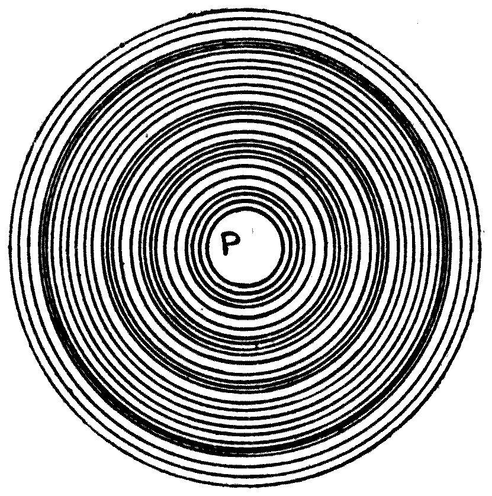
If we make two sets of ripples from origins P and Q (see Figure 18) at different distances from a flat reflecting boundary, it is not hard to trace out that each set is reflected independently, and by the rule just given. Here we catch a glimpse of a principle which will come before us again when we speak of aether waves, and which explains the familiar optical fact that when we look at our own reflection in a mirror, the image appears to be as far behind the glass as we are in front of it.
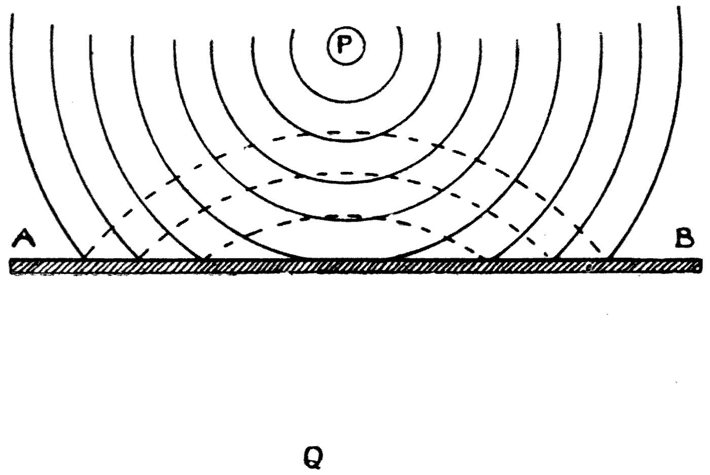
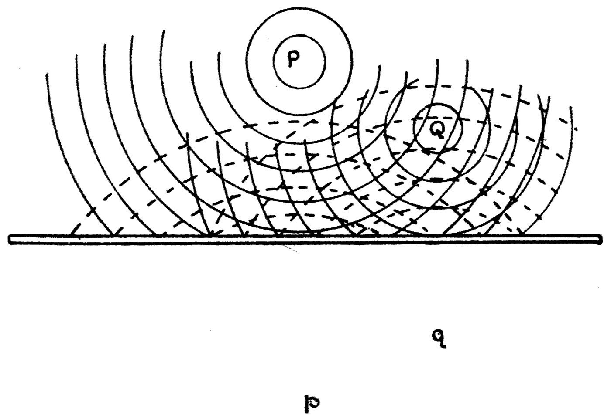
A very pretty experiment can be shown by fitting into the trough an oval band of metal bent into the form of an ellipse. If two pins are stuck into a sheet of card, a loop of thread laid loosely round them, and a pencil used to trace a curve by holding the loop taut and carrying it round, we get a closed curve called an ellipse (see Figure 19). The positions of the two pins, A and B, are called the foci.
It is a property of the ellipse that the two lines AP and BP, called radii vectores, drawn from the foci to any point P on the curve, make equal angles with a line TT′ drawn to touch the ellipse at that point, called a tangent. If we draw the tangent TT′ at P, then only a little geometry is needed to see that the line PB lies in the same position and direction as if it had been drawn through P from a false focus A′, as far behind the tangent as the real focus A lies in front of it.
It follows that circular ripples diverging from one focus A of an ellipse must, after reflection at the elliptical boundary, be brought together at the other focus B. This can be shown very prettily with the apparatus I have described.
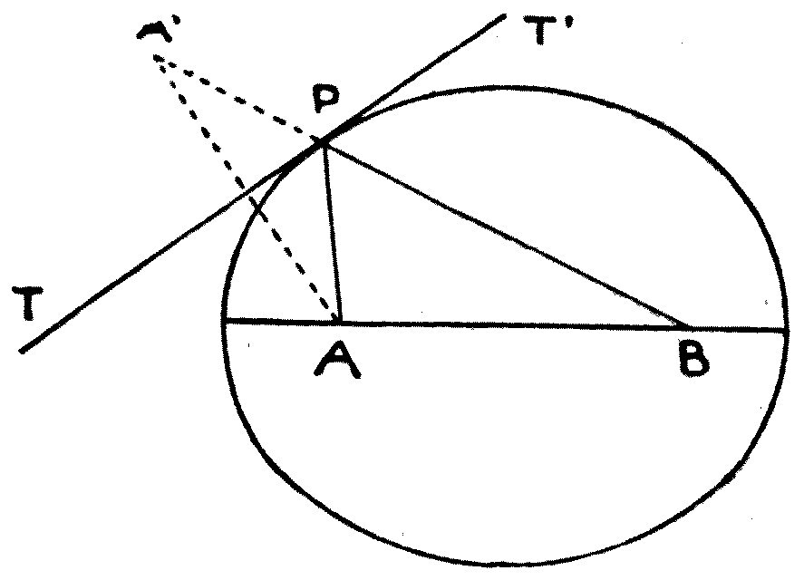
A strip of thin metal is bent into an elliptical band and set in the lantern trough. The band is wide enough for the water in the trough to come about halfway up it. At a point corresponding to one focus of the ellipse, drops of water are let fall on the surface to start a series of diverging ripples. When the stroboscopic disc is set turning and its speed properly adjusted, we see that the diverging ripples setting out from one focus are all brought together, concentrated, at the other. Indeed the ripples seem to set out from one focus and to be swallowed up at the other.
When, in a later chapter, we come to discuss how sound waves are produced and reflected in air, you will be able to call this to mind; and it will be clear to you that if, instead of waves on water, we made waves in the air inside a room of the same elliptical shape, then waves started at one focus would all be gathered at the other, and the tick of a watch or a whisper would be heard at the point corresponding to that other focus, though it might not be heard anywhere else in the room.
With the appliances described here, many beautiful effects can be shown illustrating the independence of different wave-trains and their interference. If we throw two stones into a lake a little way apart, and so create two sets of circular ripples (see Figure 20), we notice that the two ripple-trains pass freely through one another, each behaving as though the other did not exist. A careful examination will show, however, that in some places the water surface is not raised or disturbed at all, and in others the disturbance is increased.
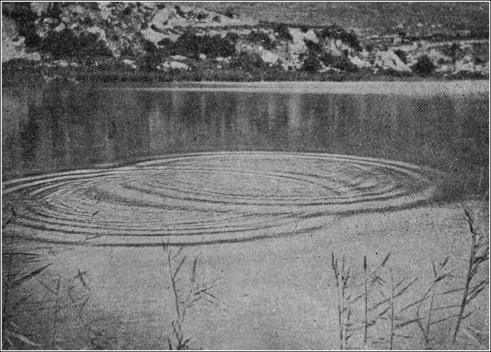
If two sets of waves set out from different origins and arrive at the same spot together, then clearly, if the crests of both, or the hollows of both, reach that point at the same instant, the agitation of the water will be increased. But if the crest of a wave from one source reaches it at the same moment as the hollow of an equal wave from the other, it is not hard to see that the two waves will wipe each other out.
This mutual destruction of wave by wave is called interference, and it is a very important fact about wave-motion. It is not too much to say that whenever we can prove interference exists, that alone is almost decisive proof that we are dealing with a wave-motion.
The conditions under which interference can happen must be looked at a little more closely. Suppose two wave-trains of equal velocity, equal wave-length and equal amplitude, or wave-height, set out from two points A and B (see Figure 21). Consider any point P. What is the condition for the waves from the two sources to destroy each other there?
Plainly it is that the difference between the distances AP and BP shall be an odd number of half wave-lengths. For if in the length AP there are 100 waves, and in the distance BP there are 100½, or 101½, or 103½ waves, then the crest of a wave from A will reach P at the same instant as the hollow of a wave from B, and there will be no wave at all at P. This holds for every position of P at which the difference of its distances from A and B is that same amount.
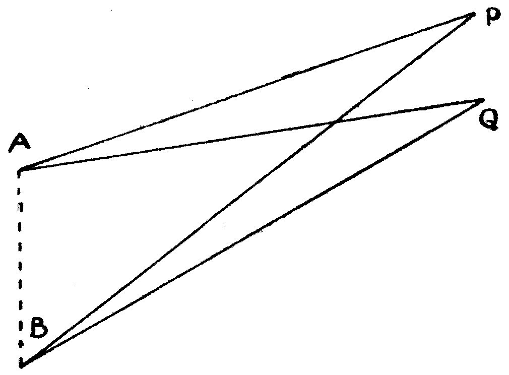
But again, we may choose a point Q such that the difference of its distances from A and B is an even number of half wave-lengths, so that while there are, say, 100 waves in the length AQ, there are 101, or 102, or 103 in BQ. When that is so, the two wave effects conspire, help each other, at Q, and the wave-height is doubled.
So if we have any two points A and B which are sources of equal waves, we can mark out curved lines along which the difference of the distances from the two origins is constant. These curves are called hyperbolas (see Figure 22).
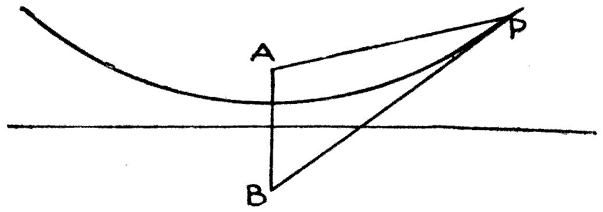
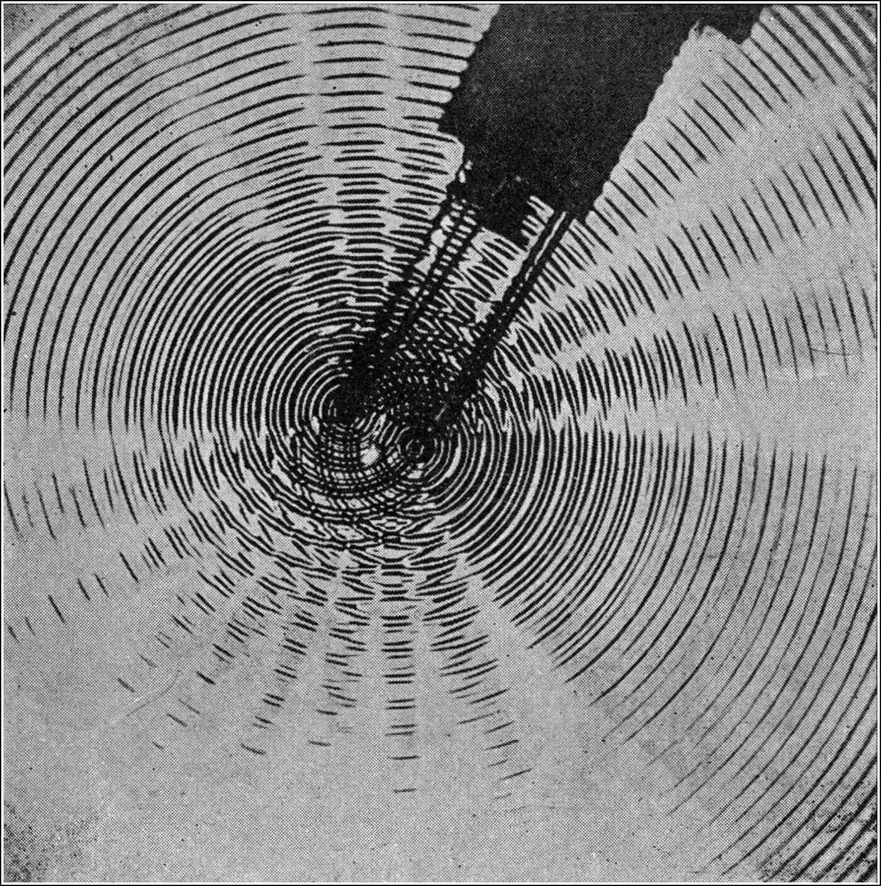
All along each hyperbola the disturbance produced by the combined effect of the waves is either doubled or wiped out, compared with what each wave-train would give by itself. With the apparatus described, we can arrange to create and adjust two similar sets of water ripples from origins not far apart; and looking at the complicated shadow pattern their interference makes, we can trace out certain white lines along which the waves are annulled, and those lines are hyperbolic curves (see Figure 23).
With the same appliances another characteristic of wave-motion, equally important, can be shown well.
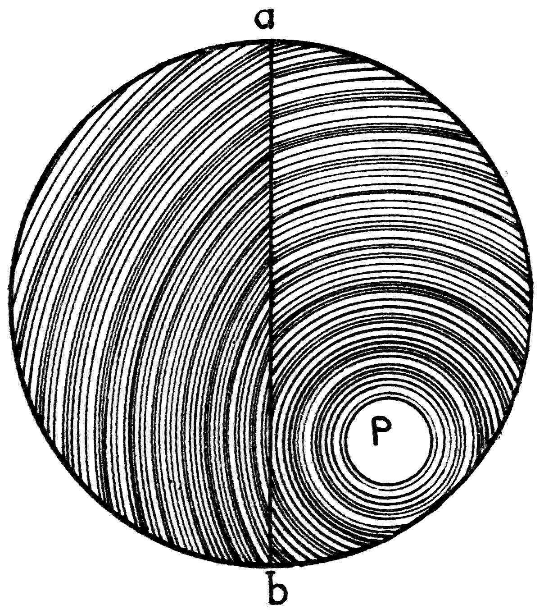
We make one half of the circular tank in which the ripples are generated much shallower than the other, by laying a thick semicircular plate of glass in it. It has already been explained that the speed at which long waves travel in a canal increases with the depth of the water. The same is true, with certain restrictions, of ripples made in a confined space or tank one part of which is much shallower than the rest. If waves are made by dropping water on the surface in the deeper part of the tank, they will travel faster there than in the shallower part.
We can then set the water-dropping jet so that it creates circular ripples which start in deep water but at certain places cross a boundary into shallower water (see Figure 24). The left-hand side of the circular tank shown in the diagram is shallower than the right.
When this is done we notice two interesting facts: that the wave-lines are bent, or refracted, where they cross the boundary; and that the waves are shorter, closer together, in the shallower region. This bending, or refraction, of a wave-front as it crosses the boundary between two districts in which the wave has different velocities is an exceedingly important characteristic of wave-motion, and we shall meet the analogous facts again when we speak of waves in air and waves in aether.
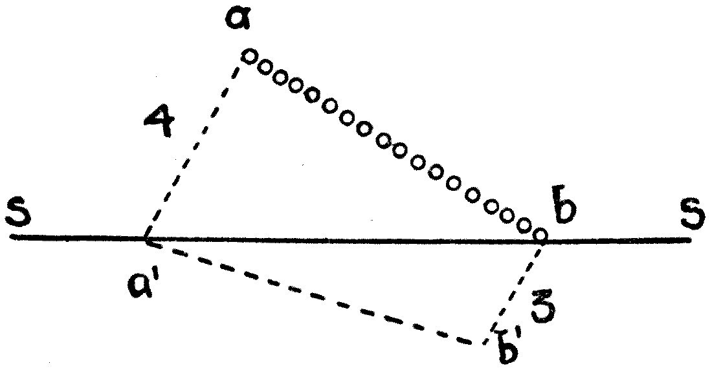
I must explain in a little more detail how it comes about that the wave-line is bent. Imagine a row of soldiers, ab, marching over smooth grass but heading towards a very rough field, the line of separation SS between the smooth ground and the rough being oblique to the line of soldiers (see Figure 25). Suppose further that the soldiers can march 4 miles an hour over the smooth grass but only 3 over the rough field.
Let the man on the extreme left of the line be the first to step across the boundary. He at once passes into a region where his marching speed is reduced, while his comrade at the extreme right is still going easily over the smooth grass. It is plain, then, that the direction of the line of soldiers must be swung round; for while the man on the extreme left marches, say, 300 feet, the one on the extreme right will have gone 400 feet forward. So by the time all of them have stepped across the boundary, the row of soldiers is no longer going in the same direction as before: it has been bent, refracted.
The same thing happens with waves. If a wave meets obliquely a boundary between two regions, in one of which it travels more slowly than in the other, then for the same reason that the row of soldiers was bent — each man in turn being slowed as he steps across the dividing line — the wave-line, the wave-front, is bent in passing from a place where it moves fast to a place where it moves more slowly. The ratio of the wave's speeds in the two regions is called the index of refraction.
By arranging suitably curved reflecting surfaces, or properly shaped shallow places in a tank of water, we can illustrate all the facts about the changes that reflection and refraction make in wave-fronts.
We can generate circular waves or ripples diverging from a point and turn them, by reflection from a parabolic reflector, into plane waves; and then, by refraction at a curved or lens-shaped shallow, bring those waves to a focus.
Interesting experiments of this kind have been made with capillary ripples on a mercury surface by Mr. J. H. Vincent, who has photographed the ripples so formed and given examples of their reflection and refraction which are well worth study.
Note: "On the Photography of Ripples," by J. H. Vincent, Philosophical Magazine, vol. 43, 1897, p. 411, and also vol. 48, 1899. These photographs of ripples have been reproduced as lantern slides by Messrs. Newton and Co., of Fleet Street, London.
We do not need elaborate apparatus, however, to see these effects, once we know what to look for.
A stone thrown into a lake creates a ripple or wave-train which moves outwards at a few feet a second. If the pond or lake happens to have a submerged wall as part of its boundary, that may make an effective reflecting surface, and as each circular wave meets the wall it will be turned back on itself as a reflected wave.
At the edge of an absolutely calm sea at low tide I once watched little parallel plane waves coming in obliquely to the coast. The edge of the water happened to lie against a rather steep ledge of hard sand, and each wavelet, as it met this reflecting surface, was turned back and reflected at an angle equal to the angle at which it arrived.
It is worth noticing that a plane wave — one whose wave-front is a straight line — may be thought of as made up of a great number of circular waves diverging from points set closely together along a straight line. So if we suppose that a, b, c, d and so on (see Figure 26) are source-points, origins of independent sets of circular waves shown by the firm semicircular lines, and if they send out simultaneous waves equal in all directions, the effect will be nearly the same as a plane wave, shown by the straight thick black line — provided the source-points are very numerous and close together.
Suppose, then, that this plane wave strikes a boundary obliquely. It will be reflected, and its subsequent course will be exactly as if it had come from a series of closely spaced source-points a′, b′, c′, d′ and so on lying behind the boundary, each being the image of the corresponding real source-point and lying as far behind the boundary as the real point lies in front.
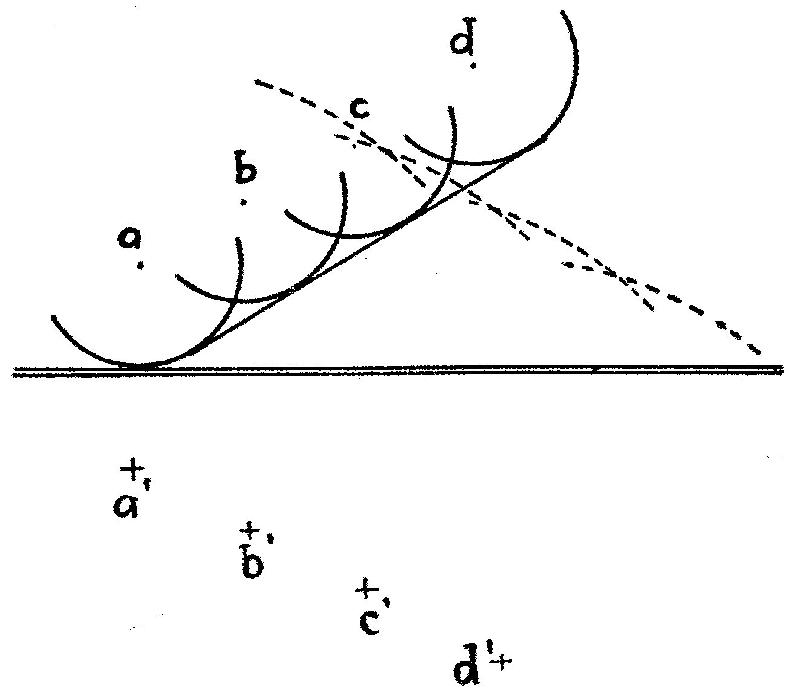
An immediate consequence is that the reflected plane wave-front makes the same angle with the plane reflecting surface as the arriving wave does; and so we establish the law, so familiar in optics, that the angle of incidence equals the angle of reflection when a plane wave meets a plane reflecting surface.
At the seaside, when the tide is low and the sea calm, or ruffled only by wavelets raised by a slight wind, one may often notice trains of small waves being reflected at sharp edges of sand, or refracted as they pass into sudden shallows, or interfering after passing round the two sides of a rock. A careful observer can teach himself all the laws of wave-motion in this school of nature, and gather a fund of knowledge on the subject in an hour's dalliance at low tide on some sandy coast, or in the quiet study of seaside pools whose surfaces are corrugated by trains of ripples raised by the breeze.
It is impossible for even the most careless onlooker to watch a steamer making her way along a lake, or a boy's boat skimming across a pond, or even a duck paddling on a stream, without noticing that the moving body is always accompanied by a trail of waves or ripples which spread out from it and stretch away behind. In the case of a steamer there is an additional irregular disturbance of the water made by the paddle-wheels or the screw, which churn it up and leave a line of rough water in her wake; but that is not part of the true ship-wave effect we are about to discuss. We can best observe the proper ship-wave disturbance in a yacht running freely before the wind on a fairly smooth sea.
The study of these ship-waves has led to most important and practical improvements in the art of designing and building ships, and no treatment of waves and ripples on water would be complete if it left them out altogether.
Before I can explain how these waves are formed, and what effect they have on the motion of a ship and on the power needed to drive her forward, we must begin with a little discussion of some fundamental facts about liquids in motion.
Everyone knows that certain liquids are, as we say, sticky — or, to use the scientific word, viscous. Asked to name some sticky liquids, most people would produce tar, treacle, gum water, glycerine and honey. Very few would think of including pure water in a list of viscous liquids, and fewer still spirits of wine; and yet it is quite easy to show by experiment that even these have some degree of stickiness, of viscosity.
An illustration may be given like this. Take several very large glass tubes, nearly filled with mercury, water, alcohol, glycerine and oil respectively. A small space is left in each tube holding a little air, and the tubes are closed with corks. If we suddenly turn all the tubes upside down, the bubbles of air begin to climb from the bottom of each tube to the top. We notice that in the mercury tube the bubble arrives at the top in a second or two; in the water tube it takes a little longer; in the oil tube longer still; and in the tube of glycerine it is quite a minute or more before the bubble has completed its journey. This experiment, rightly understood, shows us that water has some degree of viscosity.
It can be proved more forcibly by another experiment. To a whirling table is fixed a glass vessel half full of water, and on the water floats a round disc of wood with a long wire attached carrying a paper flag. If we set the basin of water slowly rotating, the paper flag does not move at first. The basin turns without setting the water inside it turning, and slips round it, so to speak. Presently, however, the flag begins to turn slowly, showing us that the water has gradually been set rotating.
This happens because the water sticks slightly to the inner surface of the basin, and the layers of water stick likewise to one another. So as the glass vessel slides round the water it gradually forces the outermost layer to move with it, and that layer forces the next, and so on inwards, until at last the floating block of wood shares in the motion and the basin and its contents turn round as one mass. This could not happen unless the water had some degree of viscosity, and unless what is called skin friction existed between the inside of a glass vessel and the water in it.
We may say at once, however, that no real liquid we know of is entirely free of stickiness, of viscosity. We can nevertheless imagine a liquid utterly without a trace of the property, and this hypothetical substance is called a perfect fluid.
Clearly this ideal perfect liquid must differ in several important ways from any real fluid such as water, and some of those differences we shall now examine. I must point out that in any liquid there may be two kinds of motion: one called irrotational motion, and the other rotational, or vortex, motion.
Consider any mass of water — a river, say — moving in any manner. We may in imagination fix our attention on some small portion of it which at a given instant we take to be spherical. If, as this sphere of liquid moves along embedded in the rest, it is turning about an axis in some direction as well as being distorted in shape, then the motion of that part of the fluid is called rotational. If, however, our little sphere of liquid is merely being stretched or pulled into an oval or ellipsoidal shape without any turning or spinning, then the motion is said to be irrotational.
We might compare these small portions of liquid to a crowd of people moving along a street. If each person moves so as always to keep his face pointing the same way, that movement is irrotational. But if they moved like couples dancing in a ballroom, going along and turning round at the same time, their motion would be called rotational.
Examples of rotational, or vortex, motion are seen whenever we empty a washbasin by pulling out the plug: the water swirls round, rotates, and forms what is called an eddy, or whirlpool. Eddies are also seen near the margin of a swiftly flowing river, where the water is set rotating by friction against objects on the bank. And eddies are created when two streams of water flow over each other at different speeds.
A beautiful instance of this can be seen at an interesting place a mile or two outside the city of Geneva. The Rhone, a rapid river, comes out of the Lake of Geneva as a clear blue stream. At a point called the Junction d'Eaux it meets the Arve, a more sluggish and muddy glacier stream, and the two then run on together in the same channel. The waters of the Rhone and the Arve do not mix at once; the line of separation between them is marked by a series of whirlpools, eddies set up by the flow of the rapid Rhone water against the slower Arve water in contact with it.
Again, it is impossible to move a solid body through a liquid without setting up eddy motion. The movement of an oar through the water, or even of a teaspoon through tea, is seen to be accompanied by little whirls which detach themselves from the oar or the spoon, and which are really the ends of vortices set up in the liquid.
The two facts to notice particularly are these. First, making eddies in liquids always involves spending energy — or, in mechanical language, it means doing work. To set a mass of any liquid rotating requires energy to be delivered to it, just as it does to set a heavy wheel turning or a heavy train moving; and that energy must be supplied by, or absorbed from, the moving solid or liquid which makes the eddies.
Second, eddies or vortices set up in an imperfect fluid such as water are in the end destroyed by fluid friction. Their energy is frittered down into heat, and a mass of water in which eddies have been made by moving a paddle through it is warmer after the eddies have subsided than it was before. It is plain from what has been said that if a really perfect fluid did exist, it would be impossible to make eddies in it by mechanical means; but if eddies were somehow created in it, they would go on for ever, and would have something of the permanence of material substances.
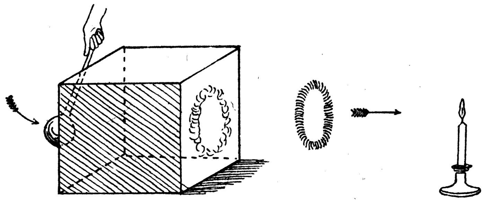
A vortex motion in water may be either a terminated vortex, whose ends are at the surface and are seen as eddies or whirls, or an endless vortex, which is called a vortex ring.
Such a ring is very easily made in air, as follows. Take a cubical wooden box about 18 inches on a side, and make a hole 6 inches across in the bottom (see Figure 27). Cover the open top of the box tightly with elastic cloth. Then fill the box with the white vapour of ammonium chloride, by leading dry hydrochloric acid gas and dry ammonia gas into it together. When it is quite full of dense white fumes, give the cloth cover a sharp blow with the fist, and out of the round hole a white smoke ring leaps and slides away through the air. The experiment can be done on a smaller scale with a cardboard box filled with the smoke of brown paper or tobacco.
If we look closely at the smoke ring as it glides through the air, we shall see that the motion of the air, or of the smoke particles composing the ring, is like that of a rubber umbrella ring fitted tightly on a round ruler and pushed along. The ring turns itself continually over and over, rotating about the circular axis line of the ring itself. This rotary motion is set up by the friction of the smoky air against the edge of the hole in the box as the puff of air comes out of it when the back is thumped.
A simple but striking experiment can be made without filling the box with smoke at all. Set a lighted candle a few feet from the opening of the box and strike the back. An invisible vortex ring of air is formed, and blows the candle out as it passes over it.
Note: Some smokers can blow these rings from their mouths; and they may sometimes be seen when a gun is fired with the old-fashioned black gunpowder, or coming from engine funnels.
Although it is quite easy to make a rotational motion in an imperfect fluid — and in fact difficult not to — a very interesting and valuable discovery has been made in recent years by Professor Hele-Shaw: a method of creating, and making visible, a motion in an imperfect liquid like water which is irrotational. The discovery was that if water is made to flow in a thin sheet between two plates, say of flat glass, not more than about a fiftieth of an inch apart, the motion of the water is exactly that of a perfect fluid, and is irrotational. Whatever objects are put in the path of the water, it flows round them just as if all fluid friction, all viscosity, were absent.
This interesting fact can be shown by an apparatus Professor Hele-Shaw designed. Two glass plates are held in a frame, separated by a very small distance, and water is made to flow between them through an inlet pipe. A metal block pierced with small holes is attached to the end of one plate, and serves to introduce several small jets of coloured water into the main sheet. In making the apparatus, great care must be taken to keep the holes in that block very small — not more than a hundredth of an inch across — and set at exactly the right slope.
Note: For details and illustrations of these researches, the reader is referred to Professor H. S. Hele-Shaw's papers, "Investigation of the Nature of Surface-resistance of Water, and of Stream-line Motion under Experimental Conditions," Proceedings of the Institution of Naval Architects, July 1897 and March 1898. A convenient apparatus for showing these experiments in lectures has been designed by Professor Hele-Shaw and is made by the Imperial Engineering Company, Pembroke Place, Liverpool.
The main water inlet pipe is joined by a rubber tube to a cistern of water set about 4 feet above the apparatus. The frame and glass plates are held vertically in the field of an optical lantern, so that an image of the plates is thrown on the screen. The side inlet pipe leading to the pierced metal block is connected to another reservoir of water coloured purple with permanganate of potash, and the flow of both streams is controlled by taps.
The clear water is first let flow down between the plates, to drive out all air bubbles and create a thin film of moving water between the two sheets of glass. The jets of coloured water are then introduced; and after a little adjustment we shall see the coloured water flowing down in narrow parallel streams, not mixing with the clear water and showing no trace of eddies. The regularity of these coloured streams, and their sharp definition, show that the flow of liquid between the plates is entirely irrotational.
The lines marked out by the coloured water are called stream-lines, and they divide the whole space into uniform tubes of flow. The characteristic of this kind of flow is that the clear water in the space between two coloured streams never passes over into a neighbouring tube. So we can divide the whole sheet of liquid into tubular spaces, called tubes of flow, by means of these stream-lines.
If we now take the apparatus apart and put between the glasses a thin piece of sheet rubber — cut, say, into the shape of a ship, and thick enough to fill the space between the plates — we shall be able to see how the water flows round such an obstacle.
If the air is first driven out by the flow of clear water, and the jets of coloured water are then turned on, we see the lines of flow marked out by coloured streams or narrow bands, and we see these stream-lines bend round and enclose the obstructing object.
The space all round the ship-shaped solid is thus divided into tubes of flow by stream-lines; but the tubes are now no longer straight, and no longer of equal width everywhere. They are narrower opposite the middle of the obstruction than they are near either end.
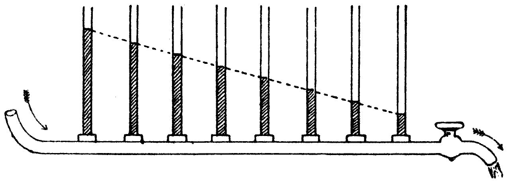
At this point I must digress to explain a fundamental law about the flow of fluid in tubes. Suppose we have a uniform horizontal metal tube with water flowing through it (see Figure 28). At various points along it let vertical glass pipes be inserted to act as gauge, or pressure, tubes. When the fluid flows along the horizontal pipe, it will stand at a certain height in each pressure tube, and that height measures the pressure in the horizontal pipe at the point where the gauge is fitted.
We shall notice that while the water flows, it stands at different heights in the different gauges, showing a fall of pressure along the pipe; and we notice too that a line joining the tops of all the liquid columns is a straight sloping line, which is called the hydraulic gradient. The experiment proves that when fluid flows along a pipe of uniform section there is a uniform fall, a uniform decrease, of pressure along it. The force driving the liquid along the pipe is measured by the difference between the pressures at its two ends — and the same holds for any chosen length of the pipe.
It will also be clear that, since water can be compressed only to the very slightest extent, the quantity of water — reckoned, say, in gallons — passing any cross-section of the pipe per minute must be the same everywhere.
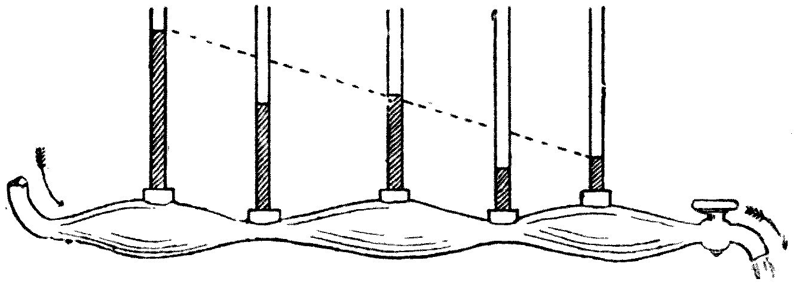
Next, suppose we make water flow through a tube which is narrower in some places than in others (see Figure 29). It will readily be granted that here too the same quantity of water flows across every section of the tube, wide or narrow. But if we ask where the greatest pressure will be, most people would certainly answer: in the narrow parts. They think of the water particles going along the tube as being like a crowd of people passing along a street which is pinched in at some points, as the Strand is; the crowd would be most tightly squeezed, and the pressure of people therefore greatest, in the narrow parts.
With water flowing through a tube of varying section, however, this is not so. So far from the pressure being greatest in the narrow parts, it can be shown experimentally that those are precisely the places where it is least.
This can be demonstrated with the tube shown in Figure 29. If water is allowed to flow through a tube constricted in places, with glass gauge-pipes at various points to show the pressure there, it is found that the pressure at the narrow parts, as shown by the height of water in the gauges, is less than it would be at those places if the tube were of uniform section and the same length and passed the same quantity of water.
We can put this fact as a general law, which governs the motion of fluids in other cases too: where the velocity of the liquid is greatest, there the pressure is least. It is evident, since the tube is wider in some places than in others and a practically incompressible liquid is passing through it, that the liquid must move faster in the narrow parts than in the wide ones; and experiment shows that, after allowing for what may be called the proper hydraulic gradient of the tube, the pressure is least in exactly those places — the constrictions — where the velocity is greatest. This general principle is of wide application in the science of hydraulics, and it lets us interpret rightly many puzzling facts met with in physics.
We can now gather up the various facts about fluid flow that have been explained, and apply them to the problems raised by the passage of a ship, or a fish, through water.
Consider first a body wholly submerged — a fish, a torpedo, a submarine boat — and ask why there is any resistance at all when we try to drag or push such a body through water. The old-fashioned notion was that the water has to be pushed out of the way to make room for the fish to go forward, and then sucked in again to fill the cavity left behind. Most people who have not been taught the subject probably still have the idea that this so-called "head resistance" is the chief cause of the resistance we meet when we move a body of any shape through water. It is also commonly assumed that the point of making a ship's bows sharp is that they may cut into the water like a wedge and push it aside more easily.
Scientific investigation has shown, however, that both these notions are wrong. The resistance we feel in pulling or pushing a boat through water is not due to any resistance the water offers by virtue of its inertia. No part of the resistance comes from the effort of displacing the water, of pushing it out of the way.
The Schoolmen of the Middle Ages used to debate how a fish could move through water at all. They said the fish could not move until the water got out of the way, and the water could not get out of the way until the fish moved. This and similar perplexities were not cleared up until the true theory of the motion of a solid through a liquid had been worked out.
Briefly, there are three causes, and only three, for the resistance we feel and have to overcome when we try to drag a boat or a ship through water. First, skin friction, from the rubbing of the ship's surface against the water. Second, eddy resistance, from the energy taken up in making eddies in the water. Third, wave resistance, from the energy taken up in making waves on the surface. The skin friction and the eddy resistance both arise from the fact that water is not a perfect fluid. The wave resistance arises, as I shall show, from the unavoidable making of waves by the boat's motion through the water.
For a wholly submerged body such as a fish, only the first two causes apply. The fish, moving along entirely below the surface, makes no waves; but the water clings to its skin, and there is friction between them as it goes. It also creates eddies in the water, which require energy to produce; and wherever mechanical work has to be done, energy being drawn off from a moving body, that implies a resistance to its motion which must be overcome.
So nature, always economical with energy, has fashioned the fish to reduce as far as possible the power it must spend in moving through water. The fish has a smooth, slippery skin — we say "as slippery as an eel." It is covered neither with fur nor with feathers but with shiny scales, so as to keep skin friction to a minimum. It is also regular and smooth in outline: no long ears, no square shoulders, no projecting limbs or organs to give it an irregular outline and set up eddies in the water as it moves.
So when we want to design a body to move quickly under water, we must copy the fish in these respects. That is why a Whitehead torpedo, that deadly instrument of naval warfare, is made smooth and fish-shaped, and why a submarine boat is made cigar-shaped and as smooth as possible.
If the floating object is partly above the surface, there is still skin friction and eddy resistance so far as the submerged part is concerned. So in building a racing yacht the greatest care is taken to make the surface below water of polished metal, or varnished wood, or some other very smooth material, to reduce the skin friction as far as possible.
With bodies as regular in outline as a ship or a fish, the proportion of the driving power taken up in making eddies is not large, and we may say without appreciable error that in their case the whole resistance falls under the two heads of skin friction and wave-making resistance. Which of these two predominates depends on the nature of the surface of the body moving through the water, and on its shape and speed.
Here we may pause to notice that if we could obtain a perfect fluid in practice, we should find that an object of any shape whatever, wholly submerged in it, could be moved about any way we liked without meeting the least resistance. This theoretical conclusion is at first sight so contrary to ordinary preconceived notions that it deserves some attention. As I have said, it is difficult for most people who have not studied the subject carefully to rid their minds of the idea that there is a resistance to the motion of a solid through a liquid arising from the effort of pushing the liquid aside. But that notion, as I have explained, is entirely wrong.
In the light of the stream-line theory of liquid motion, however, the truth of the statement is easy to prove.
Let us begin by supposing that a solid body of regular, symmetrical shape — an oval, say (see Figure 30) — is moved through a fluid with no stickiness or viscosity at all, which therefore does not cling to the solid. Then, if the solid is wholly submerged, the mutual action of liquid and solid will be the same whether we suppose the liquid at rest and the solid moving through it, or the solid at rest and the liquid flowing past it.
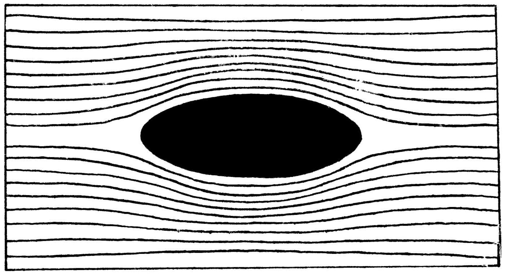
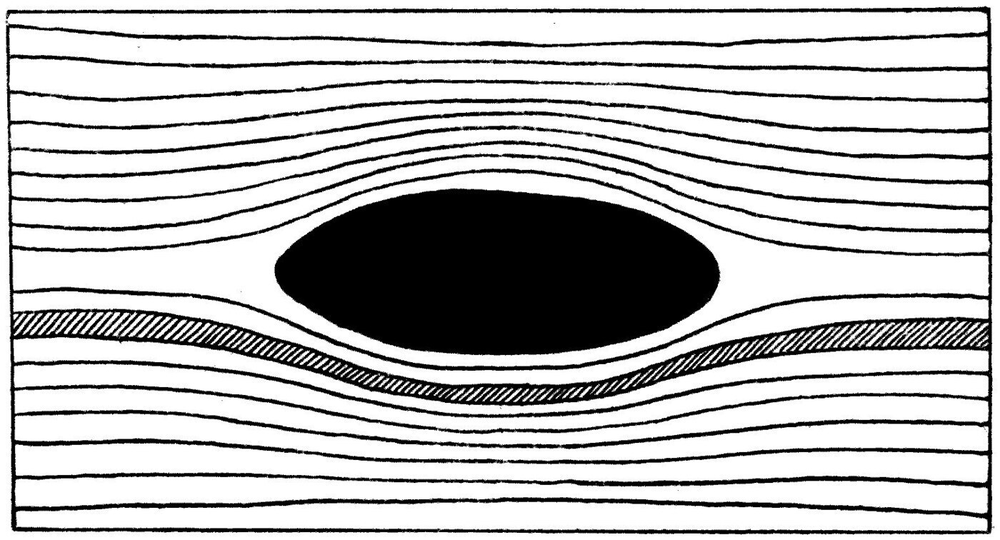
If, then, we suppose the perfect fluid to flow round the obstacle, it will distribute itself in a certain way, and its motion can be mapped by stream-lines. There will be no eddies, no rotations, because the liquid is perfect by assumption. Now consider any two neighbouring stream-lines (see Figure 31). They define a tube of flow — the shaded portion — which is narrower in the middle than at the ends. So the liquid, which we shall also suppose incompressible, must flow faster past the middle of the obstacle, where the stream-tubes are narrow, than at the ends, where they are wider.
By the principle already explained, it is clear that the pressure of the fluid will therefore be less in the narrow part of the stream-tube; and from the perfect symmetry of the stream-lines it is plain that there will be greater and equal pressures at the two ends of the immersed solid. The flow of liquid past the solid in fact subjects it to a number of equal and balanced pressures at the two ends, which exactly cancel each other.
It is not quite so easy to see at once that the same is true if the solid is not symmetrical in shape, but it can be established by strict reasoning. The result is to show that when a solid of any shape is immersed in a perfect liquid, it cannot be moved by the liquid flowing past it — and, correspondingly, no force would be needed to move it against and through the liquid. In short, there is no resistance whatever to the motion of a solid of any shape drawn through a perfect, frictionless liquid. With real liquids, which are not entirely free of viscosity, such resistance as does exist is due, as I have said, to skin friction and eddy formation.
Leaving now the movement of wholly submerged bodies through liquids, perfect or imperfect, let us take up the important question of the resistance water offers to the motion of a floating object such as a ship or a swan. Here we have to take the wave-making properties of the floating solid into account.
We have already seen that making a wave on water requires energy to be spent, mechanical work to be done. If a wave is made and travels away over the water, it carries energy with it, and so it can only be created if we have a store of energy to draw on.
Suppose skin friction were absent altogether and the ship floated on a perfect fluid: it would still be true that if the moving object creates waves, it thereby reduces its own motion and needs force applied to it to keep it going. We may say, then, that if any floating object makes waves on the liquid it moves over, those waves rob it of some of its energy of motion. Making the waves will bring it to rest in time unless it is continually urged forward by some outside impressed force; and wave-making is the reason for at least part of the resistance we meet when we try to push it along.
One element of the problem of designing a ship, therefore, is to find a form which will make as little wave-disturbance as possible in moving over the water. It is comparatively easy to find a shape for a floating solid which makes a considerable disturbance when it is dragged along; it is not so easy to design one that makes no waves, or only very small ones.
If we look carefully at a yacht gliding along before a fresh breeze on a sea or lake surface not much ruffled by other waves, we can make out that a ship going through the water creates four distinct systems of waves. Two of them are very easy to see and two are harder to identify. These systems are called the oblique bow and stern waves, and the transverse and rear waves. We shall take each in turn.
The most important and the most easily seen of the four is the oblique bow wave. It is easiest to observe when a boy's boat skims across a pond, and it is readily seen whenever we watch a duck paddling along. Look at a duck swimming on a pond and you will see two trains of little waves or ripples set at an angle to the line of the duck's motion. Both trains are made up of a number of short waves, each of which extends beyond, or overlaps, its neighbour (see Figure 32).
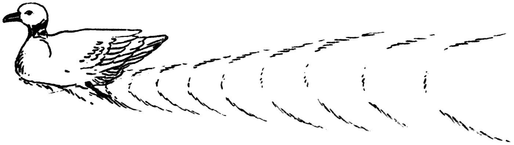
For this reason, from a common French word, these are called echelon waves, and I shall call them so here.
Note: The French word échelon means a step-ladder-like arrangement, but it is usually applied to rows of objects set so that each row extends a little beyond its neighbour. Soldiers are said to march in echelon when the ranks are ordered in that way.
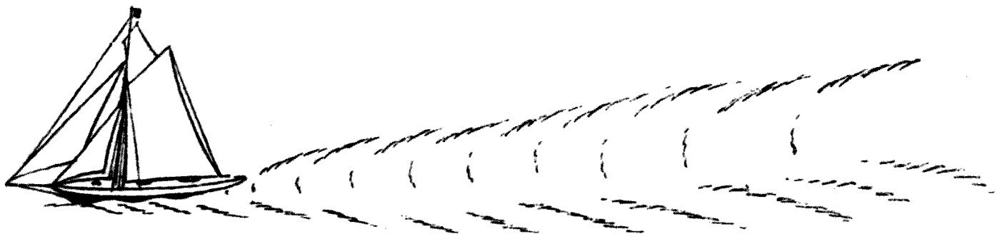
Look at a boy's model yacht moving on the water and the same system of waves will be seen; and in any real yacht or steamer moving on smooth water they are quite easy to identify (see Figure 33).
The full explanation of how these bow, or echelon, waves are formed is hard to follow, but in a general way it can be put like this. Suppose we have a flat piece of wood held upright in water, and we give it a sudden push. We notice that, because of the inertia of the liquid, it starts a wave which travels away over the surface at a certain speed. The sudden movement of the wood raises the water just in front of it, and that displacement forms the crest of a wave which is then handed on, propagated, over the surrounding surface.
If two pieces of wood are fastened together at an angle, as in Figure 34, and held partly submerged in water, we find that when this wedge is suddenly thrust forward it starts two oblique waves which move off parallel to the sloping wooden sides. The bows of a ship, roughly speaking, form such a wedge.
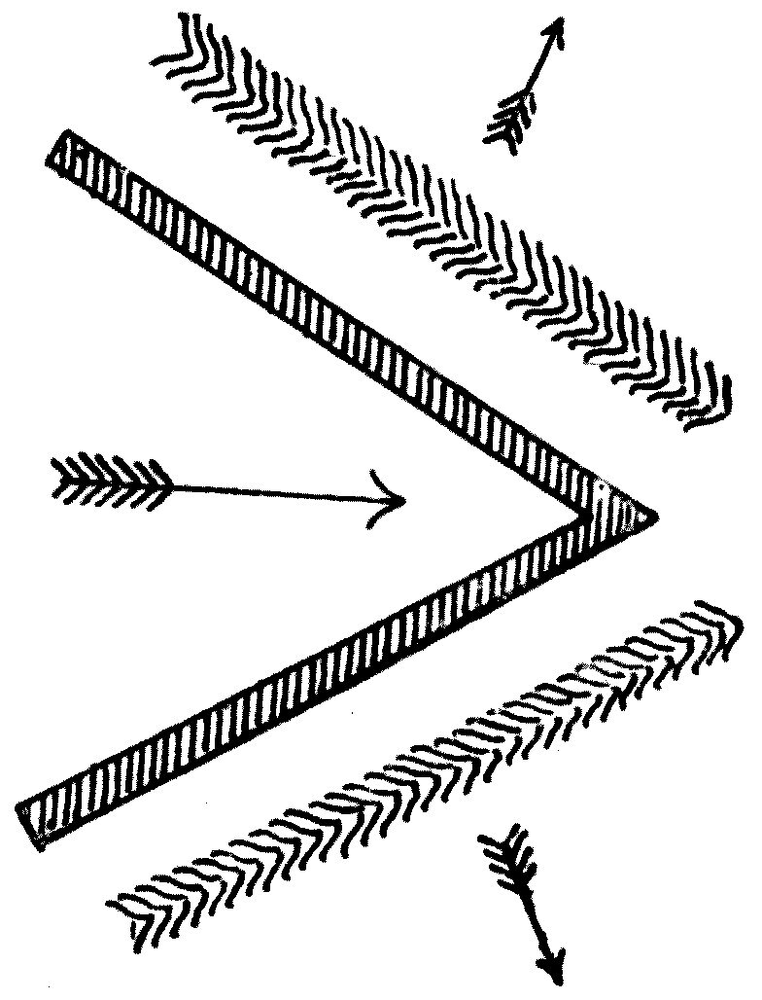
So if we take this wedge, or a ship's bows, to be standing in still water and then pushed suddenly forward, they will start two inclined waves which travel off parallel to themselves.
If we then imagine the wedge leaping forward and repeating the process, two more inclined waves are formed in front of the first pair; and imagining it repeated again, a third pair is formed. The different positions of the ship's bows are shown at 1, 2 and 3 in Figure 35, and c, e and f are the three corresponding sets of echeloned waves. For simplicity the waves are drawn on one side only.
If we now imagine the ship moving forward steadily, her bows are always producing fresh inclined waves that move with her, and she is always, so to speak, leaving the old ones behind. All these echelon waves made by the bow lie within two sloping lines, each of which makes an angle of 19° 28′ with the line of the ship's motion.
That angle can be laid off as follows. Draw a circle (see Figure 36) and produce the diameter BC of the circle by a further length CA equal to its own. From the end A of the produced diameter draw a pair of lines AD, AD′ — tangents — to touch the circle. Each of those lines makes an angle of 19° 28′ with the diameter. If we suppose a ship to be at the point marked A in the diagram, all the echelon waves she makes will lie within the lines AD and AD′.
Note: See Lord Kelvin on "Ship Waves," Popular Lectures, vol. iii, p. 482.
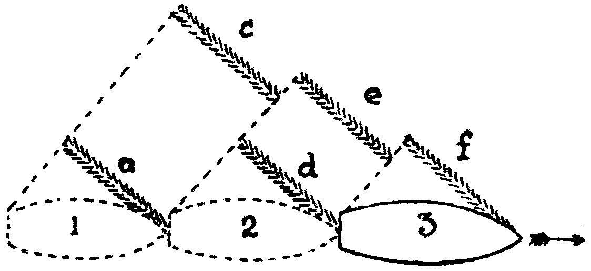
Moreover, the angle of those lines does not alter whether the ship goes fast or slow. This is easily seen with a duck swimming on a lake. Throw bits of bread to a duck so as to make it swim faster or slower, and watch the system of oblique, echelon ripples its body makes. You will see that the angle at which the two lines enclosing both trains of ripples meet does not change as the duck changes speed.
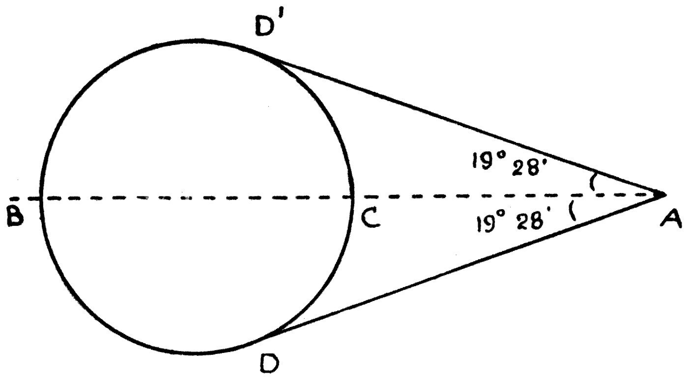
This echelon system of oblique waves is really only part of a system which is completed by a transverse group behind the vessel. Lord Kelvin gave a drawing of the complete system in his lecture on "Ship Waves," part of which is shown by the firm lines in Figure 37. The complete system is hard to see with a real ship under way. The inclined rear system can sometimes be seen well from the deck of a lake steamer, such as those on the great Swiss or Italian lakes, and can sometimes be caught in a snapshot of a boy's yacht skimming across a pond.
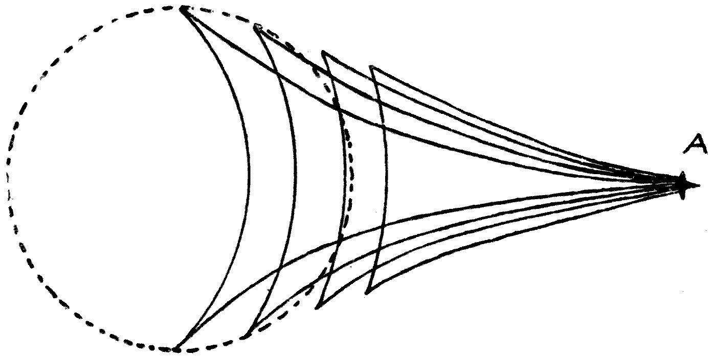
Besides the oblique bow waves there is a similar system produced by the stern of a vessel, though it is much harder to detect. The other two systems a ship makes are generally called the transverse waves. There is a system whose crest-lines lie at right angles to the ship, and these can be seen in profile against the side of any ship or yacht as she moves along. These transverse waves are really due to the unequal pressures that result from the way the stream-lines are distributed as the water moves past the ship.
Coming back to the flow of a perfect fluid round an oval body: you will remember it was shown that because the stream-lines are further apart near the bow and the stern than they are opposite the middle, the pressure in the fluid is greater near the ends than in the middle.
When a body is not wholly submerged but floats at the surface, as a ship does, these excess pressures at bow and stern show themselves by forcing the water surface up opposite the ends of the vessel and letting it down opposite the middle. This can be seen by looking at any yacht in profile as she sails: she appears to rest on two cross-waves, one at the bow and one at the stern, with the water depressed amidships (see Figure 38).
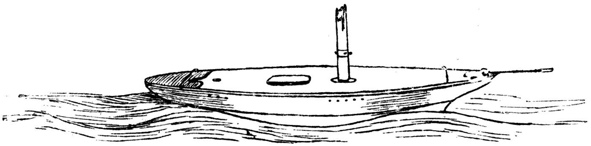
These waves travel along with the yacht. If the ship is a long one, each of them gives rise to a wave-train; and looking at a long ship under way you will see that, besides the oblique bow system, there is a series of waves showing in profile against the hull.
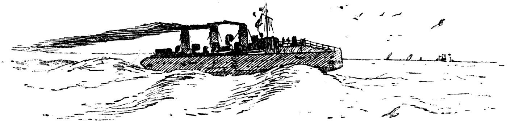
When a ship goes at very high speed, as torpedo-boat destroyers do, the bow is generally forced right up onto the top of the front transverse wave, and the boat travels with her nose entirely out of the water (see Figure 39). The boat is, so to speak, always going uphill, her bows resting on the side of a wave that advances with her and her stern followed by another, while behind her stretches an ever-lengthening trail of waves produced by those that travel with her.
The best way to see all these different groups of ship-waves is to tow a fairly large model ship — without masts or sails, a mere hulk — over smooth water in a canal or a lake. Let one person carry a longish pole with a string tied to the end, and pull the model through the water by the string. Let him run along the bank of the canal or lake and tow the ship steadily, keeping the speed as constant as he can. Let a second person, with a hand camera, be rowed in a boat a few yards behind the model. The second observer will be able to photograph the system of ship-waves the model makes, and get various photographs of it towed at different rates. The echelon and transverse waves should then be clearly visible; and if the water is smooth and the light is good, it is not difficult to get many useful photographs.
By throwing bits of bread to ducks and swans disporting themselves on still water, they too may be persuaded to take active exercise in the right direction and to expose themselves, and the waves and ripples they make, to the lens of a hand camera or a pocket kodak. From a collection of snapshots of these things the young investigator will learn a great deal about the form of the waves ships make, and will see that they are a necessary accompaniment of the movement of every floating object on water.
By carrying out experiments of this kind under conditions that allow the exact speed of the model and the resistance it meets to be determined, information of the utmost value to shipbuilders has been accumulated.
Our scientific knowledge of the laws of ship resistance we owe chiefly to the labours of two great engineers, Mr. Scott Russell and Mr. William Froude. Mr. Froude's work was begun privately at Torquay about 1870 and was afterwards continued by him for the British Admiralty. He was the first to show the value and usefulness of experiments made with model ships dragged through water.
At Torquay he built an experimental tank about 200 feet long — a sort of covered swimming bath — and used for his experiments model ships made of wood or of paraffin wax. The wax was chosen because a model could be cut so easily to the desired shape, and because all the shavings and the model itself could be melted down and used again for later experiments.
Without setting out his discoveries in historical order, it is enough to say that as the outcome of his work Mr. Froude was able to state two very important laws about the relative resistance met with when two models of different sizes are dragged through the water at different speeds.
The first concerns what are called "corresponding speeds." Suppose we have a real ship 250 feet long and we make an exact model of her 10 feet long, so that the ship is twenty-five times the length of the model. Froude's law of corresponding speeds is this.
If the model and the ship are both moved over still water, the ship going five times as fast as the model, then the system of waves made by the model will exactly reproduce, on a smaller scale, the system made by the ship. In other words, if we took two photographs — one of the ship going 20 miles an hour, and one of the model, one twenty-fifth her size, going 4 miles an hour — and reduced both to the same size, they would be exactly alike in every detail.
Put more precisely, Froude's first law is this. When a ship and a model of her move through smooth water at such speeds that the speed of the ship is to the speed of the model as the square root of the length of the ship is to the square root of the length of the model, those speeds are called corresponding speeds. At corresponding speeds the wave-making of the model resembles that of the ship on a reduced scale. If we call L and l the lengths of ship and model, and S and s their speeds, then
S / s = √(L / l)
where S and s are corresponding speeds.
Mr. Froude then established a second law of equal importance, about that part of the whole resistance which is due to wave-making, as met with by a ship and a model, or by two models, moving at corresponding speeds.
Froude's second law is this: if a ship and a model are moving at corresponding speeds, the resistances due to wave-making are proportional to the cubes of their lengths.
To use the example given above: let the ship be 250 feet long and the model 10 feet, so that, as we have seen, the corresponding speeds are as 5 to 1, since the lengths are as 25 to 1. If the ship moves at 20 miles an hour and the model at 4, then the wave-making resistance felt by the ship is to that felt by the model as the cube of 25 is to the cube of 1 — that is, as 15,625 to 1. In symbols, letting R be the wave-making resistance of the ship, r that of the model at corresponding speeds, and L and l their lengths as before:
R / r = L³ / l³
Before these laws could be applied to designing real ships, experiments had to be made to find the skin friction of different kinds of surface moving through water at various speeds.
Mr. Froude's experiments on this point were very extensive. He showed, for example, that the skin friction of a clean copper surface, such as forms the sheathing of a ship, may be taken as about a quarter of a pound per square foot of wetted surface when moving at 600 feet a minute. That is the same as saying that 4 square feet of copper moved through water at 10 feet a second meets a resisting force equal to the weight of 1 lb., due entirely to skin friction.
Very roughly, this skin resistance increases as the square of the speed. So at 20 feet per second the skin friction of 4 square feet of copper would be 4 lb., and at 30 feet per second 9 lb. Any roughness of the copper, however, greatly increases the skin friction; and in a ship the accumulation of barnacles on the copper sheathing has an immense effect in lowering her speed by increasing it. Hence the need to clean a ship's bottom periodically by scraping off these clinging growths of seaweed and barnacles.
Note: More accurately, as the 1.83 power of the speed.
Mr. Froude also made many experiments on surfaces of paraffin wax, since his ship models were made of that material. It is enough to say that the skin friction in this case, in fresh water, is such that 6 square feet of paraffin wax moving at 400 feet per minute would meet a resistance equal to the weight of 1 lb.
There are, however, certain corrections that have to be applied to these rules in practice, depending on the length of the immersed surface. The mean speed of the water past the model or the ship's surface depends on the form of the stream-lines next to it; and it has already been shown that the velocity of the water next to a ship is not the same at every point of her surface — it is greater near the middle than at the ends. So the longer the model, the less the mean resistance per square foot of wetted surface due to skin friction, when the model is moved at some constant speed.
These explanations will be enough to let the reader understand in a general way the problem to be solved in designing a ship, especially one meant to be driven by steam power.
If a shipbuilder takes a contract to build a steamer — say a passenger steamer for cross-Channel service — he is under an obligation to provide a ship capable of a stated speed. He may, for instance, guarantee that she shall be able to do 20 knots in smooth water. To fulfil that contract he must be able to work out beforehand what engine power to provide. If the engine power is too little he may fail to meet his contract and the ship may be returned on his hands. If he goes to the other extreme and allows too large a margin of power, he may lose money on the job, or else break his contract another way by supplying an engine and boiler too extravagant in fuel.
It is in solving practical problems of this kind that Mr. Froude's methods of experimenting with models in a tank are of such immense value. The first thing a naval architect does in designing a ship is to prepare a series of drawings showing the form of the hull. From those drawings a model is built exactly to scale.
In England, following Mr. Froude's practice, these models are usually made of paraffin wax, about 12 or 14 feet long and an inch thick. In the United States wood is used. The models are built with elaborate care and with the help of special machinery, and are generally 10 or 12 feet long — some convenient fraction of the length of the real vessel they represent. They are then put into a tank and experiments made, to find the force, the "pull," needed to drag the model through the water at various speeds.
The British Admiralty's tank is at Haslar, Gosport, near Portsmouth, where the experiments are now conducted by Mr. E. Edmund Froude, who continues the scientific work and investigations of his distinguished father. The Admiralty tank at Haslar is 400 feet long. The well-known shipbuilders Messrs. Denny Bros. of Dumbarton have a private experimental tank of the same kind; the Government of the United States has a similar one at Washington, the Italian Government one at Spezia, and the Russian Admiralty has built one too. These tanks look like large swimming baths with roofs over them (see Figure 40).
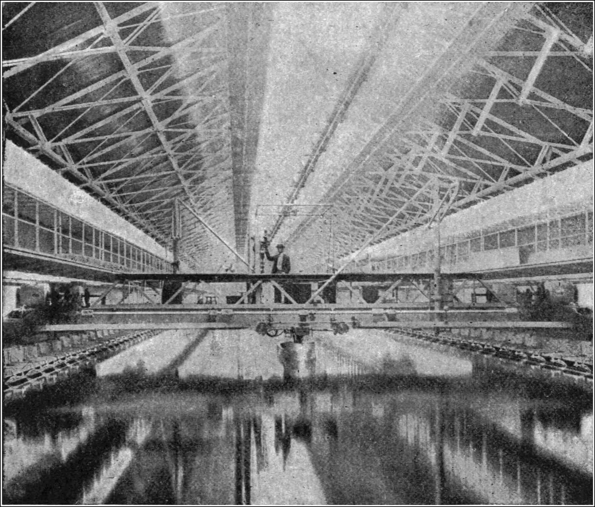
Over the water surface runs a pair of rails carrying a light carriage or platform. The carriage is drawn along by a rope from a steam engine which moves at a very uniform rate, and its speed can be exactly measured and automatically recorded. From the moving carriage hangs a rod or lever to which the model ship is attached, and the pull on that rod is exactly registered on a moving strip of paper by very delicate recording mechanism.
The experiment is made by placing the model at one end of the tank and taking a run at a known constant speed to the other. The experimenter can thus find the total resistance that has to be overcome in pushing the model through the water at a certain known speed. Then, having measured the immersed surface of the model and made the necessary calculations, he can subtract from the total the resistance due to skin friction, and what remains is the resistance due to wave-making.
Suppose the experiment has been done with a model of a ship not yet built, the run being taken at a corresponding speed. The observations give the wave-making resistance of the model, and from Froude's second law the wave-making resistance of the real ship is predicted. Adding to that the calculated skin-friction resistance of the real ship, we have the whole predicted ship resistance at the stated speed.
To give these ideas some precision, it may be worth outlining the calculation for a real ship, as given in a pamphlet by Mr. Archibald Denny.
Note: "Practical Applications of Model Experiments to Merchant Ship Design," by Mr. Archibald Denny, Engineering Conference, Institution of Civil Engineers, 25 May 1897.
The tank at the Leven shipyard, built by Messrs. Denny Bros. for their own experiments, is 300 feet long, 22 feet wide and 10 feet deep, and holds 1,500 tons of fresh water. At each end are shallower parts which serve as docks for ballasting and trimming the models.
As an example of how the tank is used to predict the power needed to drive a ship of a given design, Mr. Denny gives the following figures. The ship to be built was 240 feet long, and from the drawings a model 12 feet long was made — one-twentieth the size.
The problem was to predetermine the power needed to drive the ship through the water at 13½ knots. A knot, let me remark, is a speed of one nautical mile an hour, or 6,080 feet an hour; which, as you will see, is not far from 100 feet a minute.
By Froude's first law, the corresponding speed for the 12-foot model is therefore
13½ × 6080/60 × √(12/240) = 306 feet per minute
The model was accordingly dragged along the tank at nearly 5 feet a second; and after subtracting from the total observed pull the resistance due to the model's calculated skin friction, the resistance due to wave-making at that speed was found to be 1.08 lb. So by Froude's second law the wave-making resistance of the ship was predicted to be
1.08 × (240/12)³ × 40/39 = 8,850 lb.
The last fraction, 40/39, is a correcting factor for passing from fresh water to salt.
The surface of the proposed ship was 10,280 square feet, and the skin friction was known to be 1.01 lb. per square foot at a speed of 13.5 knots. So the total skin resistance of the ship would be
10,280 × 1.01 × 40/39 = 10,620 lb.
Adding the 8,850 lb. for wave-making, we get a total of 19,470 lb. as the predicted resistance to be overcome in moving the ship at 13.5 knots. And since one horsepower is defined as the power that overcomes a resistance of 33,000 lb. moved one foot per minute, it is easy to see that 19,470 lb. overcome at 13.5 knots represents a power of
(19,470 × 13.5 × 6080) / (33,000 × 60) = 810 horsepower
But in a screw-driven steamer part of the power is lost simply in churning up the water, and part in internal friction in the engine and the screw shaft. It is not far from the truth to say that 50 per cent of the applied engine power is lost in useless churning. So for the steamer above, an actual power of at least 1,600 horsepower would have to be applied to the screw shaft. And to allow for losses in friction, and to leave a margin for emergencies, it would be usual to give such a steamer engines of at least 3,000 indicated horsepower.
Every shipbuilder, however, has at hand a mass of data from actual measured-mile trials, which lets him work out the ratio between the calculated driving horsepower and the indicated horsepower of the engines, and so, in the light of experience, provide any new ship with exactly the steam power needed to reach the required speed.
As an instance of how accurately this can be done with the help of tank experiments, Mr. Denny gives an example from his own experience in building the well-known paddle steamers Princess Josephine and Princess Henriette for the Belgian Government's fast mail service from Dover to Ostend.
The speed guaranteed before the boats were built was 20½ knots. The estimate was made for 21 knots, and the actual results of the measured-mile trials, when the ships were finished, showed that each did 21.1 knots on a prolonged and severe test.
The reader cannot fail to see, then, how important Mr. Froude's methods, laws and researches are.
The testing of models I have described goes on continually for all new battleships and cruisers of the British navy, and is followed by the naval constructors of other nations too. In connection with the extensive programme of battleship construction carried out in recent years, Sir William White, the late eminent Chief Director of Naval Construction, states that it is not too much to say that these methods of investigation and experiment have put into the naval architect's hands an instrument of immense power for guiding him safely and preventing costly mistakes. Sir William has declared that it would have been impossible to go forward with the same certainty in battleship design but for the help these methods give.
Mr. Froude was not content with experiments on models, however. He found by actual trials the total force needed to drive a real ship through the water at various speeds, and from other experiments obtained valuable data showing how the total resistance of a ship divides between skin friction and wave-making.
He then made experiments on a ship of 1,157 tons, H.M.S. Greyhound. She was towed by another vessel of 3,078 tons, H.M.S. Active, with a tow-rope and a dynamometer which allowed the exact pull on the hawser to be measured when the Greyhound was towed at various speeds. Here are some of the results:
Speed of Greyhound Strain on tow-rope
4 knots 0.6 tons
6 " 1.4 "
8 " 2.5 "
10 " 4.7 "
12 " 9.0 "
It will be seen that the total resistance increases very rapidly with the speed, in a higher ratio than the square of it.
The indicated horsepower of the Greyhound's engines was also taken while she drove herself at those speeds, and it was found that only 45 per cent of it was used in propelling the ship, the other 55 per cent being wasted in engine and shaft friction and in useless churning of the water by the screw.
It is important to know how the total resistance divides between skin friction and wave-making. Mr. R. E. Froude has kindly supplied me, through the good offices of Sir William White, with some figures from the experiments at Haslar showing what proportion of the whole resistance is due to skin friction for various classes of ship at certain speeds:
At full speed At 10 knots
Battleships 55 per cent 79 per cent
Cruisers 55 " 84 "
Torpedo-boat destroyers 43 " 80 "
The table gives skin friction as a percentage of the total resistance; the remainder is of course wave-making and eddy resistance.
The curves in Figure 41 — taken, by kind permission of the editor, from an article by Mr. E. H. Tennyson-D'Eyncourt in Cassier's Magazine for November 1901 — give a diagrammatic idea of how the two principal sources of ship resistance vary with speed.
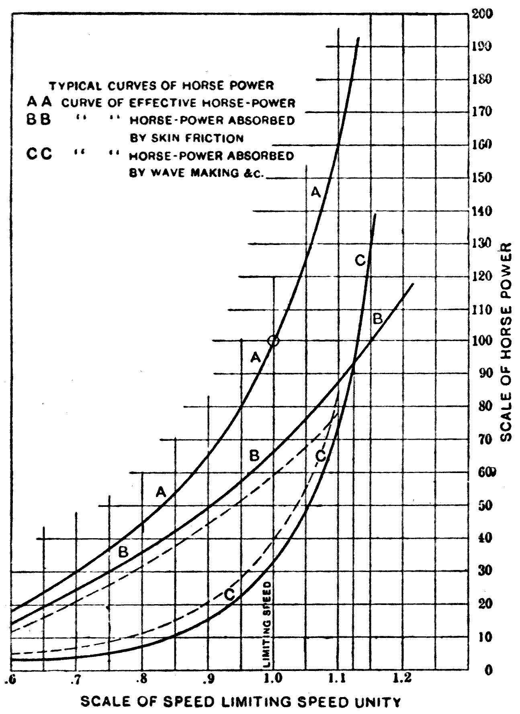
It will be seen that when a ship goes at a relatively low speed the greater part of the whole resistance is due to skin friction, but at high speed the greater part is due to wave-making. The moral, then, is that ships and boats meant to travel fast must be shaped so as to reduce their wave-making power to a minimum.
In general the naval architect has many things to consider besides speed. In designing a battleship he must think of stability, of the power to carry guns and armour, and of various other qualities. In passenger steamers he must consider capacity for passengers and freight, and steadiness and sea-going qualities as well; and all these things limit and control the design.
There is one class of vessel, however, in which everything is sacrificed to speed, and that is the racing yacht. In designing one, therefore, the architect has the widest scope for considerations bearing on the removal of every limitation to speed. A little examination of the evolution of the modern racing yacht shows how fully the principles I have been trying to explain have had their way in settling the present form of such boats.
Attention has been drawn to this chiefly in connection with the international yacht race for the America's Cup.
In 1851 a yacht named the America crossed the Atlantic and appeared at Cowes to compete for a cup given by the Royal Yacht Squadron. Until then British yachts had been designed with full bluff bows and a tapering run aft. They were good sea boats, but their wave-making and eddy-making powers were considerable. The America was built with very fine lines and a sharp bow, and was a great advance on the existing types. In the race that followed she won the cup and carried it off to the United States.
Since then there has been an intermittent but steady effort by British yachtsmen to win the trophy back — so far without success.
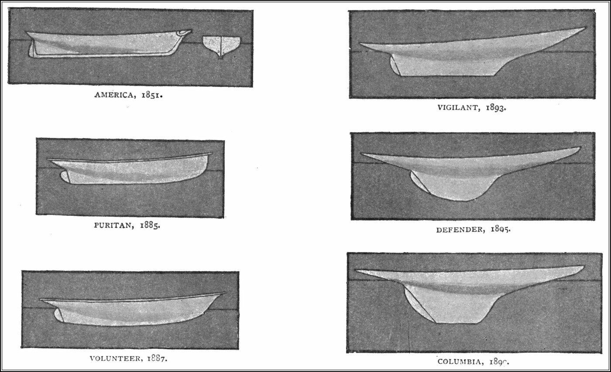
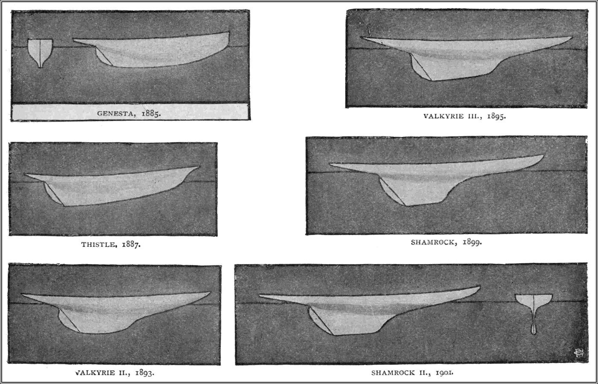
In a very interesting article in Harmsworth's Magazine in 1901, Mr. E. Goodwin traced the gradual evolution of the modern yacht — a Shamrock II or a Columbia — from the America.
No doubt the methods of "measurement" in force at any time, the dimensions which decide whether a boat may enter for the Cup race at all, have had some influence in settling the shape. But the reader will see, on comparing the outlines of some of the competing yachts shown in Figure 42, that there has been a steady tendency to reduce the underwater surface as far as possible, and to remove the wave-making tendency by overhanging the bows.
The only rule now in force restricting the size of a yacht for the Cup race is that she must be no more than 90 feet long measured on the water-line. For a yacht to have stability, and to be able to carry a large sail surface, she must have a certain depth of immersed hull; that is essential too if she is not to make leeway when sailing with the wind abeam.
Consistently with that, the yacht-builder's two great aims are these. First, to reduce skin friction as far as possible by making the yacht's surface smooth and highly polished — which is why modern racing yachts are not always built of wood, but very often of some metal such as bronze, steel or an aluminium alloy, which will take a very high polish. The hull surface is burnished as much as possible before the race, to keep skin friction to a minimum. Second, the designer aims at shaping the bow so as to reduce its wave-making qualities as far as he can. A fine modern yacht glides through the water with hardly any perceptible bow wave at moderate speeds.
Note: Reproduced here by kind permission of the editor of Harmsworth's Magazine.
The following extract from the Chicago Recorder of 4 September 1901, about Sir Thomas Lipton's yacht Shamrock II during her trials for the Cup race, shows how marked a feature this is in a yacht of the best modern type:
"With her owner, designer, builder, manager and sailmaker on board, the yacht Shamrock II sailed her seventh trial race today off Sandy Hook. Although at times there was not more than a three-knot air, at no time did the yacht act sluggishly.
"She slipped through the water at an amazingly good rate under the influence of her great mainsail and light sails. The water was smooth, but even when pressed to a speed of 9 knots the yacht made a very small wave at the bow, and left an absolutely clean wake."
We may say, then, that the ideal form of yacht is one that would travel through the water making no wave at all, at bow or stern. This condition can only be approached, never quite reached; but clearly recognising the principle has made it possible to design yachts with vastly greater speed than in the old days of bluff bows and tapering bodies.
Before leaving the subject of waves made by ships, I should say a little more about the complicated wave system a ship in motion produces. It has been most carefully worked out by Lord Kelvin, who in this as in so many other matters is our great teacher. Lord Kelvin has shown that if a small floating body is towed through the water at a uniform speed, it originates a system of waves each of which has the form shown in Figure 43. The whole system is shown in Figure 37, where the position of the ship or moving object is the point marked A.
The key to understanding this ship-wave system correctly lies in the fact explained in Chapter One: that a group of water waves on an indefinitely extended surface advances at half the speed of a single wave. We have already seen that when a single wave-disturbance is made on water it gradually develops into a group of waves. The single wave, once created, causes a disturbance which spreads both forwards and backwards; as it moves forward the disturbance is always growing at the front and dying away behind, so the wave-group moves forward — but the centre, and the limits, of the group move at only half the velocity of a single wave.
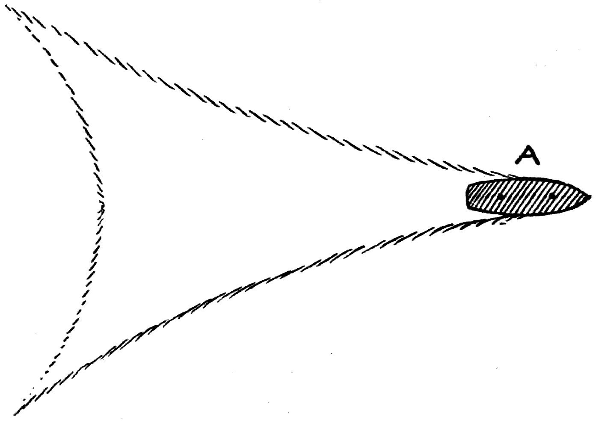
Now consider the ship originally at B (see Figure 36), and suppose her to make a small jerk forward. That is like plunging a stone into the water: it starts a wave system. But if the ship then moves forward at a uniform speed, by the time she has reached the point A the end of the wave-group will have reached a point C halfway between B and A.
The ship's movement originates a group of waves; and the velocity of a wave on water depends on its wave-length, as already explained, the longer the wave the greater the velocity. So the conditions that settle the form of the wave system round the ship are these. First, the head of the procession goes forward at the speed of the ship. Second, there is an end, a limit, to the transverse system of waves behind, which moves forward at half the ship's speed. Third, the inclination of the wave at any point to the direction of the ship's motion must be such that its velocity along its own direction agrees with the wave-length at that place.
These general conditions settle the form of the wave-group shown in Figure 37; but the exact form of the oblique and rear waves cannot be worked out in detail without mathematical reasoning of a rather advanced kind.
For the general reader it will be enough to note that this procession of ever-lengthening waves stretching out behind a ship requires energy to produce. That energy must be supplied by the ship; so wave-making is a cause of resistance to her motion which is felt, and which has to be overcome in keeping her speed constant.
Closely connected with this is the fine investigation made about 1834 by another eminent engineer, Mr. Scott Russell, into the motion of canal boats, communicated to the Royal Society of Edinburgh.
It has already been explained that when a wave is started in a canal, the wave-length being large compared with the depth, the velocity of the long wave is the same as that gained by a stone falling through the air a distance equal to half the depth of the canal. Scott Russell made the interesting discovery that only when the speed of a canal boat is less than that of a long wave in the canal does the boat leave a procession of waves behind it. The boat is then on the rear side of the first wave, and, as I have said, the rear of the procession travels forward at half the boat's speed.
If the boat's speed is greater than that of the longest free wave in that canal, it can make no procession of waves at all. Then there is no system of ever-lengthening waves behind, but only a single wave or hummock travelling along under the boat.
Lord Kelvin describes, in his lecture on "Ship Waves," how this important discovery was in fact made by a horse. The horse belonged to one William Houston, and its daily duty was to drag a canal boat on the Glasgow and Ardrossan Canal. On one occasion the horse took fright and galloped off; and Houston, being an observant man, noticed that once the horse had reached a certain speed the resistance to traction plainly grew less, and the boat was dragged along more easily and with no wash behind it. He accordingly started a service of light canal boats — fly-boats, as they were called — each 60 feet long and drawn by two horses at 7, 8 or 9 miles an hour. The horses were whipped up and made to gallop, and soon dragged the boat up onto the top of its own wave, whereupon it went along much more easily and without any system of stern waves.
Note: See Lord Kelvin's Popular Lectures, vol. iii, "Navigation," the lecture on "Ship Waves."
Mr. Scott Russell made a searching investigation of this effect in 1837 at the bridge of Hermiston on the Forth and Clyde Canal, where there was a straight run of 1,500 feet. The canal water was 4 to 5 feet deep, so the speed of the long wave there was 12 feet per second, or 8 miles an hour.
Experiments were made, among others, with a boat called the Raith weighing 10,239 lb., or 5 tons. She was towed along the canal and the pull on the tow-rope measured with a dynamometer. Mr. Scott Russell found that the force needed to drag the boat did not increase regularly with speed, but fell off markedly when the boat reached 9 miles an hour. This is shown by the following table:
SCOTT RUSSELL'S EXPERIMENTS ON CANAL BOATS
Tractive force applied Speed of boat
to boat (lb.) (miles per hour)
112 4.72
261 5.92
275 6.19
250 9.04
269 10.48
For another boat, weighing 12,579 lb., or 6 tons, the results obtained in the same way were:
Tractive force (lb.) Speed (miles per hour)
250 6.19
500 7.57
400 8.52
280 9.04
This last experiment shows in a very remarkable way how the force needed to drag the boat falls off as the critical speed of 9 miles an hour is reached.
Here, then, is the outline of the proof first given by Mr. Scott Russell that the tractive force suddenly diminishes when the speed of a boat in a canal comes near, or just exceeds, that of the long wave for that particular depth of water. If passenger traffic on canals had not been destroyed by the coming of the railways, we should no doubt have seen extensive applications of this principle — discovered so curiously with the help of a frightened horse, and investigated so skilfully by a celebrated engineer.
The whole theory of the trail of waves a canal boat makes is only intelligible if it is clearly seen that a surface water wave has a certain velocity settled by its wave-length. If the wave-speed is small the waves are short; as the speed increases the waves get longer.
Or the matter may be put another way. Just as a pendulum has a certain rate of vibration depending on its length, so a water wave has a certain frequency, and therefore a certain speed of travel, depending on its wave-length — the shortest distance from one crest to the next.
When a boat moves along a canal the waves it makes move with it, and the first wave of all moves at the speed of the boat; so the wave-length must accommodate itself to that speed. As the boat's speed rises towards that of the free long wave, the wave-length grows greater and greater; and when the boat's speed equals that gained by a heavy body — a stone, say — falling through half the depth of the canal, then there is only one wave, and the boat rides up on it. The next wave is so far behind as to be practically non-existent, and the boat ceases to be followed by any trail of waves, any wash at all.
Leaving waves and ripples on a water surface, we pass on to waves and ripples in the air. Nearly everybody knows in a general way that sound is due to a disturbance created in the atmosphere. Few, however, are fully acquainted with the nature of the movements in air which excite our sense of hearing, and to which we owe not only the pleasures of conversation and the enjoyment of every sound in nature, but the delights of music, which are among the purest pleasures we possess.
First, I must demonstrate that where there is no air there can be no sound. On the table in front of you is a brass plate covered with a glass dome. Under the dome is a piece of clockwork which, when set going, strikes a gong. The clockwork hangs by silk strings from a frame, to keep it from touching the plate. The plate is connected by a pipe to an air pump downstairs, so that we can remove the air from under the dome whenever we please.
Before doing so, however, the clockwork shall be set going, so that you can see the hammer striking the gong and can hear the sound. Now, if we exhaust the air, the sound rapidly dies away; and when a fairly perfect vacuum has been made, you can still see the hammer pounding the bell but no sound at all reaches your ears. I turn a tap, let the air in — and once more the ring of the bell peals out.
The experiment shows conclusively that sound is carried to us through the air, and that if we isolate a sounding body by taking the air away from around it, all transmission of sound stops. Even rarefying the air greatly weakens sound: a pistol shot or a cracker does not give the same intensity of sensation to the ear at the top of a very high mountain as it does in the valley below.
Next I must show that a substance giving out sound is in a rapid state of vibration, of to-and-fro movement. Taking a tuning fork in my hand, I strike its prongs on the table and you hear it faintly sounding. Your unaided sight will not show you that the prongs are in rapid motion; but if I hold it against a pith ball hung on a silk fibre, the violent bouncing of the ball shows you that the prongs must be vibrating energetically.
Another experiment of the same kind, which you can repeat for yourselves, is to get a sound from a small table gong by striking it with a hammer, and then to hold near the surface of the metal a small ball of wood or cork with a thread tied to it. The ball will keep jumping away from the gong in a way that will convince you the metal is in a state of violent agitation.
The manner and the extent of this movement in a sounding body must next be examined more thoroughly, and let me explain how I shall make the analysis.
On the prong of a tuning fork T (see Figure 44) is fixed a small mirror M, and a ray of light from an electric lantern is reflected off it. The ray is then reflected back onto a sort of cubical box C whose sides are covered with looking-glass, and finally falls on the screen. The mirrors are so arranged that if the cubical mirror is at rest and the fork also, a bright spot of light appears on the screen.
If the fork is set vibrating, the spot of light moves up and down so fast that it makes a vertical bar, a line of light, on the screen. The cubical mirror is carried on an axis and can be set spinning; and if the fork is at rest while the cubical mirror revolves, the spot of light marches horizontally across the screen, and when the mirror turns fast enough it makes a brilliant horizontal band. If, then, both motions happen at once — the fork vibrating and the cubical mirror spinning — the spot of light on the screen performs a wavy motion, and we see a sinuous bright line on the wall.
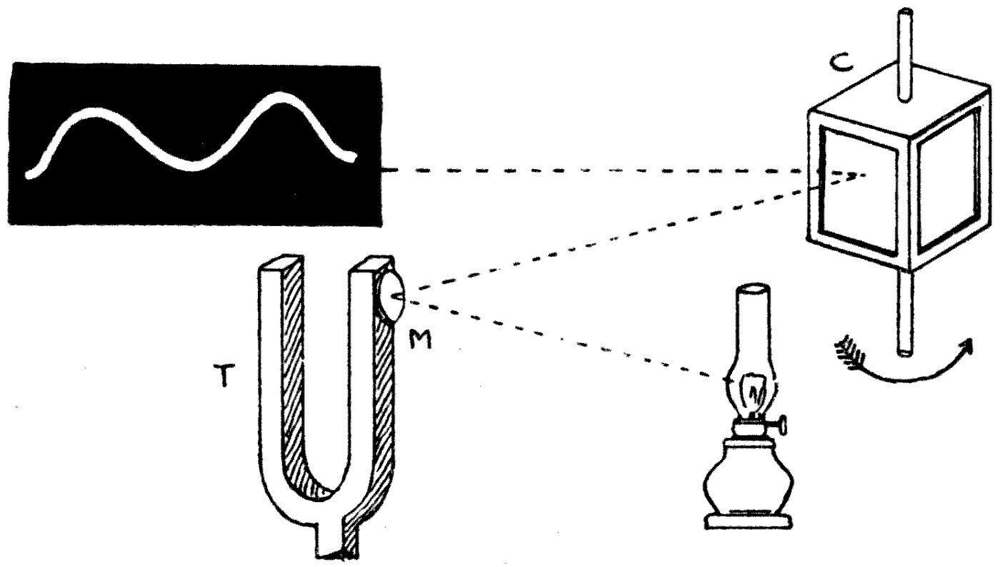
Two principles are involved here which had better be explained a little further. An impression made on the eye lasts about a tenth of a second. So if a luminous point or bright object moves fast enough, we can no longer follow its movement and simply receive the impression of a line of light. Every boy sees this when he whirls a lighted squib, or a stick with a flaming end.
And notice, next, that two independent movements at right angles combine into what is called a resultant motion. So the vertical up-and-down motion of our spot of light, combined with its steady horizontal movement, produces a wavy motion.
For anyone who wants to repeat the experiment, a few hints may be given. The revolving cubical mirror is a rather expensive piece of apparatus, though it is found in every well-equipped physical laboratory. A cheap substitute can be made by sticking pieces of thin looking-glass firmly onto the sides of a wooden box. Hang the box by a string; twist the string and the box can be set spinning like a joint of meat roasting before the fire. An ordinary magic lantern will give a parallel beam of light. For lecture demonstrations one has to use the electric arc lamp with an arrangement of lenses, to get a powerful enough parallel beam.
Then as to the fork. I am using here a rather elaborate contrivance, an electrically driven tuning fork; but for home demonstration a single piece of stout steel clock spring is enough, or any other flexible, well-tempered piece of steel. Fix it to a block of wood for support, and fasten carefully to its end a small piece of lead carrying a fragment of thin silvered glass — the kind called a galvanometer mirror, which any scientific instrument maker can supply.
The vibrating spring must be placed so that, vibrating by itself, it reflects the ray of light onto one face of the cubical mirror and thence onto a white wall, making a vertical bar of light which becomes a single spot when the spring is at rest. Very small concave mirrors about half an inch across, of glass silvered at the back, can be bought; and if one of those can be got, there is no need for an optical lantern at all. With an ordinary table lamp, or even a candle, as the source of light, it is easy to focus a bright spot on the screen and so make the motion of the spring evident.
Before we leave the experiment, let me say another word or two about it. You will notice, while it is going on, that the luminous wavy line is regular and symmetrical. That shows us that the motion of the prong of the fork is equally regular. This kind of backwards-and-forwards motion is called a harmonic motion, or a simple periodic motion. It is very like the movement of the piston of a steam engine swinging to and fro.
The exact nature of the wavy line of light on the screen can be drawn as follows. On a sheet of paper draw a circle and divide its circumference into twelve equal parts (see Figure 45). Through the centre, and through each of those points on the circumference, draw parallel lines. Divide a length of the line drawn through the centre into twelve equal parts, and number those divisions 1 to 12; number the points on the circumference too. Through the twelve points on the horizontal line erect perpendiculars. Make a dot where the perpendicular — the ordinate, as it is called — through point 1 on the horizontal line crosses the horizontal through point 1 on the circle. Do the same for all twelve intersections, and then carefully draw a smooth curve through all the points.
We get a wavy curve called a sine curve, or simple harmonic curve, and it is the same shape as the one shown on the screen in the tuning-fork experiment. The piece of curve drawn in this way is one wave-length of the harmonic curve.
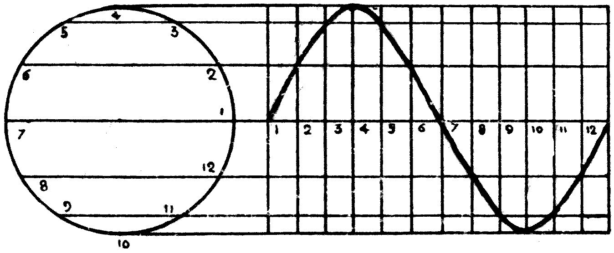
In our case the tuning fork is making a hundred complete vibrations, to and fro, every second. So the periodic time — the time taken by one complete wave — is a hundredth of a second. To grasp what so small an interval means, it is enough to remember that a hundredth of a second is to one second as the length of this lecture, one hour, is to four days and nights.
The prongs of a sounding tuning fork, or the surface of a gong or a bell when struck, are therefore in rapid motion. We can now go on to an experiment designed to show the difference between the motions in sounding bodies which make musical tones and those which make mere noises, or the sounds of the voice.
On the table before me is a bent brass tube with a mouthpiece at one end; the other end is covered with a very thin piece of sheet rubber, tied on like the cover of a jam pot. Cemented to the outside of the rubber is a very small, light silvered-glass mirror. The same arrangements are made as in the last experiment: the ray of light from the lantern is reflected off the little mirror onto the revolving cubical mirror, and thence onto the screen. Setting the cubical mirror spinning, we get a line of bright light on the screen.
Now if my assistant sings or speaks into the mouthpiece, the movement of the rubber sets the little mirror vibrating. The mirror is fixed not at the centre of the membrane but a little to one side; so you will easily understand that when the rubber bulges in or out, the mirror is tilted more or less, and the spot of light is displaced up or down on the screen. In this way the movements of the spot imitate those of the diaphragm, and the shape of the bright line on the screen tells us what kind of movement the diaphragm is making.
Let us first sing into the tube while the cubical mirror turns steadily. If my assistant sounds a full, pure note, you will see the straight line of light instantly throw itself into a wavy form — though not quite the same shape as with the tuning fork. Here the zigzag line looks like the outline of saw teeth (see the Frontispiece).
If he varies the loudness of his sound, you see the height of the teeth alter, greater the louder his note. If he changes the tone, singing a bass or a treble note, you see that a high or treble note gives short waves and a deep or bass note long ones. So the shape of the line of light on the screen gives us exact information about the movement of the rubber diaphragm: whether it is moving in and out slowly or quickly, much or little.
Now suppose that, instead of singing into the tube, my assistant speaks a few words. If he repeats in a loud voice the simple but familiar narrative of "Old Mother Hubbard," you will see that for each word of the sentence the line of light bends itself into a peculiar irregular form, and each particular word is, as it were, written in lines of fire on the wall.
Notice how certain sounds — b and p, and also t — are represented by very high notches or teeth in this line of light. These are called explosive consonants; and if you examine how your mouth makes them, you will notice that you close the mouth with the lips, or with the tongue between the teeth, and then suddenly take the obstruction away so that the air from the lungs rushes forcibly out. So the air outside — and in this case the diaphragm — receives a sudden blow, and that is what the tall tooth or notch in the band of light represents.
The experiment teaches us that while musical tones are caused by very regular and uniform vibrations of the sounding body, the sounds of the voice and mere noises are caused by very irregular movements; that loud sounds are made by large motions and faint ones by small; that the difference between tones in music is a difference in the rate of vibration of the sounding body; and we may infer, too, that the difference in the quality of sounds has to do with the form of the wave-motion they make.
Having established these facts, we must next look a little more closely at the nature of an air wave. I have to remind you of certain qualities possessed not only by the air we breathe but by all gases.
Here is a cylinder with a closely fitting piston and a tap at the bottom. If I close the tap and try to force the piston down, I feel a resistance which increases as the piston goes forward; and if the pressure is taken off, the piston flies back to its old position as though there were a spring beneath it. The air in the tube is an elastic substance and it resists being compressed. At a constant temperature the volume the air is squeezed into is inversely proportional to the pressure applied.
Air, then, has what is called elasticity of bulk, and resists being made to occupy a smaller volume. Air also has inertia: once it is set moving it goes on moving, like any other heavy body, after the moving force is taken away. So we have present in it the two qualities essential for producing a wave-motion, as explained in the first lecture. Air resists compression by virtue of elasticity; and when it is allowed to expand back again, it persists in motion by virtue of inertia.
Let us next consider how a very simple sound, such as an explosion, is produced. Suppose a small quantity of guncotton is detonated. It makes a sound, and therefore an air wave; and the wave is made as follows.
The explosion of the guncotton suddenly creates a large quantity of gas, which gives the air a very violent outward push, a blow. Because of the inertia of the air, it cannot respond to that force everywhere at once; so a certain spherical layer of air is compressed into a smaller volume. That layer almost immediately expands again, and in expanding compresses the next layer outside it and rarefies itself. Then the second layer, expanding in turn, compresses a third, and so on.
So a state of compression is handed on from layer to layer, each compression followed by a rarefaction. The individual air particles are made to move to and fro along the radii of the sphere whose centre is the source of the explosion. We have here what is called a spherical longitudinal wave.
Each air particle swings backwards and forwards along the line in which the wave travels. The actual motion of each particle is exceedingly small.
The speed at which this zone of compression travels outwards is called the velocity of the sound wave, and the distance each air particle moves backwards and forwards is called the amplitude of the wave.
Suppose next that instead of a merely momentary sound like an explosion we have a continuous musical sound. What sort of air movement is carried out then? The experiments already shown will have convinced you that with a musical sound each air particle must repeat the same kind of motion over and over again.
The precise nature of the displacement is best illustrated by two models. In front of you is a frame with a series of golf balls hung from it by threads (see Figure 4 in Chapter One), with a spiral brass spring between each pair of balls which elastically resists both compression and stretching. You will see that the row of balls and springs therefore has properties like those of air. By virtue of the springs it resists compression and expansion; and by virtue of the mass, the inertia, of the balls, any ball which is displaced and then allowed to move back overshoots its position of equilibrium, because it persists in motion.
If we now give the first ball a little pat, you will see a wave-motion run along the line of balls. Each ball in turn moves a little way to and fro, and hands its movement on to its neighbours. Here is an example of a longitudinal wave-motion resembling that of air when a sound wave passes through it.
Another and more elaborate model shows us the sort of motion made in a tube when a sound wave from a continuous musical note passes along it. It consists of a glass disc, blackened, with the paint removed along certain eccentric circular lines. The disc is made to revolve in front of a wide slit in a piece of metal. With an optical lantern we throw an image of the slit onto the screen, and you see it crossed by bright bars of light, crowded together in some places and further apart in others. When the disc revolves, each of those bars moves to and fro in turn, and the result is that the crowded place travels along, is displaced.
A wave of compression is propagated along the slit, and the places where the bars of light are crowded or spread out continually change position. If we imagine the air in a tube divided into slices, represented by these bars of light, the motion of the model exactly represents the motion of the air in the tube when a series of sound waves passes through it.
The distance from one place of greatest compression to the next is called the wave-length of the sound wave. So although a sound such as an explosion may consist in the travel of a single layer of compression, producing a continuous musical note involves the passing on of a whole series of equally spaced zones of compression — of waves.
These models will, I hope, have helped you to form a clear idea of the nature of a sound wave in air. It is a very different thing from a wave on the surface of water, but it has the same general characteristics of wave-motion. It is a state of longitudinal periodic motion in a row of particles, handed on from one to the next. Each particle of air oscillates along the line in which the wave travels, moving a little way backwards and forwards on either side of its undisturbed position.
So a solitary sound wave is a state of air-compression travelling along through otherwise stationary air. The air is squeezed more tightly together in a certain region, and successive layers take up that condition in turn. With water-surface waves, the wave is a region of elevation where the water stands above the general level, and that elevated region is transferred from place to place over otherwise stationary water. With a train of air waves we have similar regions of compression following one another at distances which may be a fraction of an inch or several feet.
In ordinary speech or song the waves are from 2 to 8 feet long — that is, from one compressed region to the next. In a whistle the wave-length may be an inch or two, while the deepest note of an organ produces a sound whose wave-length is about 32 feet.
As in every other case of wave-motion, air waves may differ from one another in three respects: in wave-length, in amplitude, and in wave-form. The first settles what we call the tone, that is, whether the sound is high or low, treble or bass. The second settles the intensity, whether it is faint or loud. The third settles the quality — or, as the Germans expressively call it, the sound-colour, Klangfarbe.
We recognise at once a difference between the sound of a vowel, say "ah," sung by different people to the same note of the piano and equally loudly. There is a personal element, an individuality, about voices which catches our attention at once, quite apart from tone or loudness. This quality of sound is settled by the form of the wave-motion — that is, by the nature of the movement of the air particle during the little excursion to and fro by which it takes its part in making a zone of compression or rarefaction in the air, and so forms a sound wave.
Next we must discuss the speed at which this air compression travels. Everyone knows it is not instantaneous. We see the flash of a gun in the distance and a second or so later we hear the bang. We notice that thunder is often heard long after the lightning is seen.
It would take too long to describe the experiments made to determine the speed of sound waves precisely. It is enough to say that all the best experiments show the velocity of a sound wave in air, at the temperature of melting ice — 0° C., or 32° Fahrenheit — to be very nearly 1,087 feet per second, or 33,136 centimetres per second. That is equivalent to 741 miles an hour, more than ten times the speed of an express train. At that rate a sound wave would take 4 hours to cross the Atlantic, 16 hours to travel half round the world to the antipodes, and about 2 minutes to cross from Dover to Calais.
An opportunity of observing this speed on a gigantic scale came about 20 years ago, at the time of a great volcanic eruption near Java. If you open a map of Asia and look for Java and Sumatra in the Asiatic Archipelago, you will easily find the Sunda Strait; and on a good map you will see a small island marked Krakatoa. This island has — or rather had — a volcano which until 1883 had never been known to erupt. In that year, however, it burst into activity again; and after preliminary warnings a final stupendous outburst came on 27 August 1883.
The roar of that volcanic explosion was probably the loudest noise ever heard on this earth. The pent-up volcanic gases and vapours burst out of some underground prison with such appalling power that they created an air wave which not only circled the earth but travelled to and fro seven times before it finally faded away.
The zone of compressed air forming this mighty wave caused, as it passed from point to point over the earth's surface, a rise of atmospheric pressure which left its record on all the self-registering barometers, and so allowed its progress to be traced. A diligent examination of those records, collected in the celebrated Report of the Royal Society on the Eruption of Krakatoa, showed exactly how the great air wave expanded.
Starting from Krakatoa at 10 a.m. on 27 August 1883, the air wave sped outwards in a circle of ever-increasing diameter until, by 7 p.m. the same day — 9 hours later — it formed a girdle embracing the whole world. This stupendous circular wave, 24,000 miles round, then contracted again, and in another 9 hours had gathered itself to a point in the northern part of South America, which is the antipodes of Krakatoa. There it rebounded and, expanding once more — exactly like a water wave reflected from the side of a circular trough — returned along its own path, so that 36 hours after it set out it had come back to its starting place. Again and again it made the same double journey, each time weaker than before, until after seven times the echoes of this mighty air wave had completely died away.
This is no fancy picture but a sober record of fact, taken from the infallible records of self-registering instruments for measuring air pressure. And we have evidence that the actual sound of the explosion was heard by human ears four hours after it happened, on the other side of the Indian Ocean — which gives us the velocity of sound measured on the largest scale it has ever been measured on.
There are many curious and interesting facts about the transmission of a sound wave through air which affect the distance at which sounds can be heard. The speed of sound in air is much influenced by the temperature of the air and by wind.
The speed of sound increases with temperature. For every degree Fahrenheit above the melting point of ice (32° F.) the speed increases by one foot per second. A more accurate rule is this: take the temperature of the air in degrees Centigrade and add 273 to it — that is, find the value of 273 + t, where t is the temperature. Then the velocity of sound in feet per second at that temperature is
1090 × √((273 + t) / 273)
There is one point about the velocity of a sound wave which should not be left unexplained. It has been said that the velocity of a wave in any medium is got by dividing the square root of the elasticity of the medium by the square root of its density. The number representing the elasticity of a gas is the same as the one representing its absolute pressure per square unit of surface; so the volume elasticity of air may be measured by the absolute pressure it exerts on a unit of area, such as a square foot. At the earth's surface the pressure of the air at 0° C. is about 2,116.4 lb. per square foot.
The absolute unit of force in mechanics is the force which gives a velocity of 1 foot per second to a mass of 1 lb. after acting on it for 1 second. If we let a mass of 1 lb. fall from rest under gravity at the earth's surface, after one second it has a velocity of 32.2 feet per second. So the force usually called "a pressure of 1 lb." equals 32.2 absolute units of force. The atmospheric pressure at the earth's surface is therefore 2,116.4 × 32.2 = 68,148 absolute units of force, in the system where the foot, the pound and the second are the fundamental units.
The absolute density of air is the mass of 1 cubic foot. 13 cubic feet of air at freezing point, with the barometer at 30 inches, weigh nearly 1 lb.; more exactly, 1 cubic foot under those conditions weighs 0.080728 lb. avoirdupois. If we divide the number representing the absolute pressure of the air by the number representing its absolute density, we get 844,168; and the square root of that is 912.6.
This calculation was first made by Newton, and he was unable to explain why the velocity of the air wave worked out this way from the general formula for wave speed — 912.6 — should be so much less than the observed velocity of sound, which is 1,090 feet per second at 0° C.
The true explanation of the difference was first given by the celebrated French mathematician Laplace. He pointed out that in air, as in all other gases, the elasticity when it is compressed slowly is less than when it is compressed quickly. A gas is heated when it is compressed; and if we give that heat time to escape, the gas resists the compression less than if the heat stays in it. So air is a little more resilient to a very sudden compression than to a slow one.
Laplace showed that the ratio of the elasticity under sudden compression to that under slow compression is the same as the ratio of the quantities of heat needed to raise a unit mass of air by 1° C. at constant pressure and at constant volume. That ratio is called the ratio of the two specific heats, and is a number close to 1.41. So the velocity calculated above must be corrected by multiplying 844,168 by 1.41 and then taking the square root of the product. When that is done we get 1,091 — which is exactly the observed velocity of sound in feet per second at 0° C. and atmospheric pressure.
The velocity of sound is much affected by wind, by any movement of the air. Sound travels faster with the wind than against it, so the presence of wind distorts the shape of the sound wave by making parts of it travel faster or slower than the rest.
These two facts explain how it comes about that loud sounds are sometimes heard at great distances from their source and yet not heard at places close by.
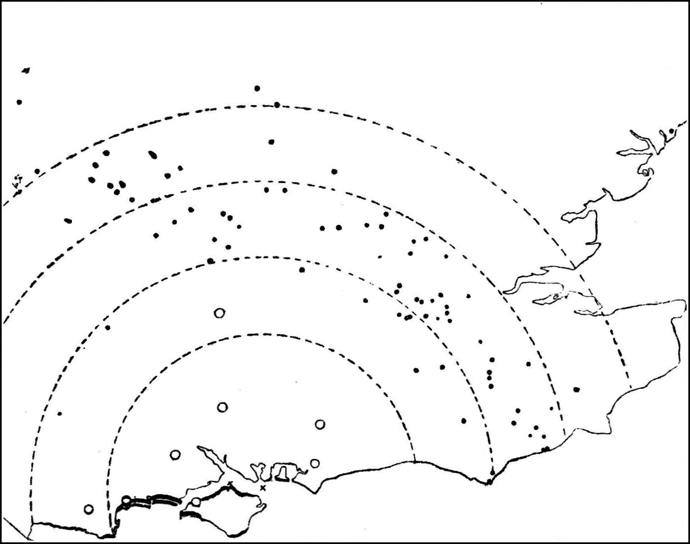
Consider the case of a loud sound made near the surface of the earth. If the air were all at rest, and everywhere at the same temperature, the sound waves ought to spread out in a hemisphere. But if, as is generally the case, the temperature near the ground is higher than it is up above, then the part of the wave near the earth travels more quickly than the part in the higher regions of the air. The sound wave therefore has its direction altered: instead of travelling near the earth in a line parallel to the ground, it is tilted upwards, so that it strikes away into the sky. It may equally be brought down again by meeting a current of air blowing against the lower portion, holding that part back more than it holds back the upper part.
So it comes about that a sound wave may, as it were, "play leap-frog" over a whole district — lifted up, and then set down again — and people in that district will not hear the sound at all, although others much further off will hear it plainly.
A very striking instance of this occurred at the funeral procession of our late beloved Queen Victoria, of blessed memory. The body was carried across the Solent on 1 February 1901, between lines of battleships firing salutes with their big guns. Arrangements were made to find out the greatest distance at which the sound of those guns could be heard. In a very interesting article in Knowledge for June 1901, Dr C. Davison collected the results of observations from eighty-four places, some of which are marked on the map (see Figure 47), reproduced from that journal by kind permission of its editor.
Observations came in from places as far away as Alderton in Suffolk, 139 miles from the Solent. At several places the sound of the guns was loud enough to rattle windows — at Longfield (56 miles), Sutton (58 miles) and Richmond Hill (61 miles). But while there is clear evidence that the guns were heard even at Peterborough (125 miles), the strangest thing of all is that the sound was hardly heard at all in the neighbourhood of the Solent itself. The nearest place from which any record was received was Horley, in Surrey — 50 miles away.
It seems evident, then, that the sound was lifted up soon after it left the Solent and passed clean over the heads of the people standing near, travelling on through the upper air for a considerable distance — probably 40 or 50 miles — before being bent down again to reach observers on the earth's surface at much greater distances. An examination of the wind-charts for that day makes it tolerably clear that this was due to the way the wind was blowing at the time. Dr Davison writes:
"Now, on February 1, the wind at places to the west of Spithead was generally light, and from the west or nearly so, though near Lyndhurst there was a fresh breeze from about W.N.W. or N.W. At Portsmouth, again, the wind is described as from the shore. On the other hand, many of my correspondents at great distances from Spithead state that the wind, when sensible, was southerly in direction. Thus the sound-rays were first of all refracted by contrary winds over the heads of observers between 10 and 45 miles, and were afterwards brought down again by favourable upper currents, so that the reports were clearly audible beyond 50 miles and up to 140 miles from Spithead, and were so loud at a distance of 84 miles that labourers in the fields put down their spades and listened."
The same explanation has been offered for the extraordinary differences found, at different times, in the distance at which a lighthouse fog-horn can be heard by ships at sea. In that case, however, there is another possible explanation, involving what is called the interference of sound waves, which will be explained presently. The late Professor Tyndall, who was an authority on this subject, held that in certain states of the atmosphere there exists what he called "acoustic opacity." The air is then not uniform in temperature and moisture; and passing through so irregular a medium, sound waves lose a great deal of their intensity by internal reflection at each of those surfaces — just as light is stopped when it passes through crushed ice or crushed glass. At every surface a little of the light is wasted by irregular reflection, so that the medium, though made up of fragments of a perfectly transparent substance, is more or less opaque in the mass.
On the subject of sound-signals as coast-warnings, some exceedingly interesting information has lately been supplied by Mr E. Price-Edwards (see the Journal of the Society of Arts, vol. 50, p. 315, 1902). The lighthouse boards of the various countries provide means for making loud warning sounds at their lighthouses, as a substitute for the light when fog comes down. The distance at which those sounds can be heard, and the distance-carrying power of different kinds of sound, have been the subject of elaborate investigation.
The instrument found most effective in producing very powerful sound waves is called a siren. It consists of a tube or horn with a fixed disc at the bottom with slits cut in it. Outside that disc is a second, movable one, also slitted, which revolves against the first. As the second disc turns, the passage into the horn is opened and shut suddenly and repeatedly, as the slits in the two discs come opposite one another or not. Air or steam under a pressure of 10 to 40 lb. to the square inch is blown into the horn, and the rapid interruption of that blast by the revolving slits cuts it up into puffs which, when they come often enough, make a very loud sound. The compressed air is admitted into a back chamber and waits there for a chance to escape, which it gets the moment the revolving disc turns into a position where the two sets of slits coincide. In comparative trials of different sound-producing instruments, nothing has yet been found to beat the siren as a producer of penetrating sound.
It has turned out to be very important that the frequency of the note the siren gives should coincide with the fundamental tone of the trumpet or horn. As will be explained in the next lecture, every column of air in a tube has a particular natural period of oscillation. Suppose, for instance, that for a trumpet-tube of a certain length that period is 1/100 second. Then the siren with that trumpet will be most effective if the interruptions of the air-blast come 100 times a second.
Lord Rayleigh has also shown that the shape of the mouth of the trumpet matters, and that it should not be circular, as it usually is, but elliptical or oval, the shortest diameter of the ellipse being a quarter of the longest. The mouth should be set so that the longer axis is vertical. He considers, too, that the short axis of the oval should not be more than half the wave-length of the sound being sent out. With a trumpet-mouth of that shape the sound is to some extent prevented from being flung up and down, and is spread better sideways — which is exactly what is wanted in a coast signal.
The information that has accumulated about the distances at which sounds can be heard comes very briefly to this.
First as to wind. The direction of the wind has a most remarkable influence on the distance at which a given loud sound can be heard. In one instance the noise of a siren was heard 20 miles away in calm weather, whereas with an opposing wind it was not heard more than 1¼ miles away.
In calm weather a low-pitched note has been found to carry better than a high one; in rough weather the opposite is the case.
One thing noticed by everyone who has experimented on this subject is the curious occurrence of "areas of silence." That is to say, a particular siren will be heard well close to its position; a little further off the sound will be lost altogether; and on going further still it is heard again.
Many theories have been advanced to account for this, and none of them is completely satisfactory. It is, however, a thoroughly well established effect, and one which it behoves every mariner to know about.
One curious fact is the very great power that can be swallowed up in making a loud siren note. In one case a siren giving a high note was found to absorb as much as 600 horse-power when the note was sounded continuously. The most striking — and, in one sense, the most disappointing — thing about these loud sounds is the short distance they travel in certain states of the wind. The general result has been that the most effective sound for a coast-warning is one with a frequency of 100, or a wave-length of about 10 feet.
When we were dealing with waves in general, it was pointed out that the velocity of a wave depends on the elasticity and the density of the medium it is travelling in. In the case of a sound wave in air, or in any other gas, the speed of transmission is proportional to the square root of the elasticity of the gas, and inversely proportional to the square root of its density.
At the same temperature the elasticity of a gas may be taken as the same thing as its pressure. So at the same pressure the speed of sound through different gases varies inversely as the square root of their densities. An example will make this clear. Take the density of hydrogen as 1; then the density of oxygen is 16. The ratio of the densities is therefore 1 to 16, and the ratio of their square roots is 1 to 4. So the velocity of sound waves in hydrogen is to that in oxygen as 1 is to ¼ — in other words, sound travels four times faster in hydrogen than in oxygen at the same temperature and pressure. The following table gives the velocity of sound in various gases at the melting point of ice (0° C.) and atmospheric pressure (760 mm. on the barometer).
Gas Velocity
Hydrogen 4,163 feet per second
Carbon monoxide 1,106 feet per second
Air 1,090 feet per second
Oxygen 1,041 feet per second
Carbon dioxide 856 feet per second
We see, then, that the lighter the gas the faster sound travels in it, pressure and temperature being the same. If the atmosphere we breathe were made of hydrogen instead of a mixture of oxygen, nitrogen and a good many other gases, a clap of thunder would follow the flash of lightning much sooner than it does in our present air, supposing the storm to be at the same distance. As things are, if 20 seconds pass between the flash and the peal, it means the storm is about 4 miles away; but in a hydrogen atmosphere, for a storm at that same distance, the thunder would follow the lightning in about 5 seconds.
Armed with these facts about the travelling of air waves, we can now point out some interesting consequences. You will remember that in the first chapter it was pointed out that a wave on water can be reflected by a hard surface, and can be refracted, or bent, when it passes from a region where it is moving quickly to one where it moves more slowly. It will be necessary now to prove by experiment that the same things can be done with sound, so that a body of proof may be built up in your minds convincing you that the outside cause of the sensation of sound must be a wave-motion in the air.
First, I must describe to you in some detail the arrangements we shall use for producing and detecting the sound waves employed in these experiments.
It would not do to rely on the ear as the detector, because you cannot all be placed so as to hear the sounds that will be produced. We shall therefore use a peculiar kind of flame, called a sensitive flame, to act as our detector.
If ordinary coal-gas stored in a gasometer is burnt at a small jet under considerable pressure, we can produce a tall flame some 18 to 24 inches high. The jet used has a steatite top with a small pin-hole gas exit about 1/25 inch across. The gas pressure must be equal to about 10 inches of water; it cannot be drawn straight from the house gas-pipes, but has to be supplied from a special gasometer or gasbag at a pressure high enough to give a flame 18 inches or so tall. If the pressure is too great the flame roars; if it is reduced a little, the flame can be made to burn quietly and stand up as a tall reed-like spike (A, Figure 48).
This flame, properly adjusted, is curiously sensitive to shrill, chirping sounds. You may shout or talk loudly near it and it takes not the slightest notice of your voice; but chirrup, or whistle a shrill note, or clink your keys or a few coins in your hand, and the flame instantly shortens itself to about 6 or 7 inches, takes on a peculiarly ragged edge, and roars (B, Figure 48). When it is in adjustment, the clink of two coins in the hand will affect this sensitive flame from the other side of the room. It is also very sensitive to a shrill whistle or a bird-call. From what has already been explained it will be clear to you that the flame responds to very short air waves, which is to say to high notes. The particular flame I am about to use responds with great readiness to air waves from 1 inch to ½ inch in length.
Note: See Professor W. F. Barrett, Nature, 1877, vol. 16, p. 12.
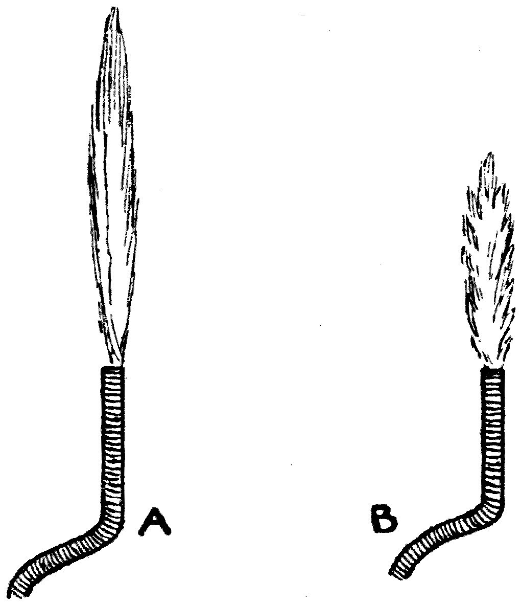
It is worth explaining that the sensitive part of the flame is its root, just where it comes out of the burner, and that its curious behaviour is caused by the sound wave throwing that part of the flame into vibration.
If you think about what must be happening, you will easily see that what the sound wave does is to throw the particles of gas, just as they escape from the hole in the jet, into vibration crosswise — at right angles to the direction in which they are moving up the flame. When no sound wave is acting on them, the gas molecules are rushing out of the jet straight upwards. When the sound wave strikes them they are, so to speak, caught, and made to rock to and fro across the flame. The two motions combined have a spreading effect, so that instead of being a thin lance-like shape the flame becomes blunter, stumpier and ragged at the sides.
The flame acts, therefore, as a detector of certain sounds. It is a very sensitive kind of ear, one which listens and answers to the faintest whisper if only it is uttered in the right tones, but is stone deaf to everything else. Its great value to us is that it acknowledges the presence of air waves of short wave-length, and shows at once when it is standing in a stream of air waves — of air ripples — of very short wave-length.
Besides the flame, I am provided with a whistle giving a very shrill, high note, blown steadily by a current of air supplied at constant pressure from a reservoir. If the whistle is set going, you will at once see the sensitive flame duck down and acknowledge the presence of the air waves it is sending out.
Those waves of course spread out in every direction, but for our present purpose we want to create what I may call a beam of sound. You all know what a magnifying glass, a lens, does to a ray of light. What boy has not at some time amused himself by concentrating the sun's rays with a burning-glass, bringing them to a focus, and setting light to a piece of paper — or burning his own hand, or a friend's? In that case we use a piece of glass thicker in the middle than at the edges to bring parallel rays of light together at a point, a focus. We use a lens of the same kind in our optical lantern to take the diverging rays from an electric lamp and make them parallel, so producing a parallel beam of light. I shall put off the explanation of how it does this for a moment, and simply say here that it is possible to build a sound-lens which acts in the same way on rays of sound. I have had one made for these experiments, and this is how it is done.
You can buy small balloons made of a very thin material called collodion — guncotton dissolved in ether and alcohol, poured out onto a glass plate and left to dry. Having got one of these balloons, it is possible, with great dexterity, to cut from it two spherical segments, two saucer-shaped pieces. These must then be cemented with siccotine to a wooden ring with two small pipes opening into it (see Figure 49). Through those pipes we can inflate the lens-shaped bag so formed with a heavy gas, carbon dioxide, made by pouring strong acid onto marble or chalk. The result of all these operations, every one of which needs considerable skill of hand, is a sound-lens: a collodion film in the shape of a magnifying glass, a double convex lens, filled with a gas heavier than air.
The sound-lens is then fixed over a hole of its own size in a glass screen, with the whistle on one side of it and the sensitive flame on the other. These have to be adjusted so that the whistle W, the centre of the lens L, and the jet of the flame F all lie in one straight horizontal line at right angles to the glass plate.
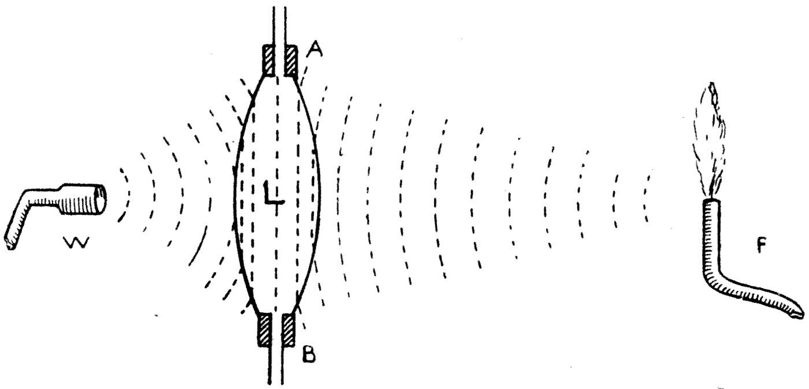
The distance of the whistle from the lens then has to be adjusted so as to produce a nearly parallel beam of sound on the far side. In other words, the whistle must be placed at the focus of the lens. Here is a rule for finding it: if the balloon the collodion segments were cut from was nearly spherical and 8 inches in diameter, then the whistle must be placed a little less than 8 inches from the near face of the lens. The exact distance will have to be found by trial, but it will be somewhere near that point. The sensitive flame should stand about 4 or 5 feet from the lens on the other side of the screen.
Note: This follows from the ordinary formula for the focal length f of a biconvex lens whose two surfaces each have a radius of curvature r. It can be shown that f = (r/2) × 1/(μ − 1), where μ is the index of refraction of the lens material. As will be shown later, the acoustic index of refraction of carbon dioxide, taking that of air as unity, is 1·273. So μ − 1 = 0·273, and 1/(μ − 1) = 3⅔. Hence f = 2r × (11/12) — that is, f is a little less than twice the radius of curvature of the spherical segment forming the sound-lens.
Once these arrangements have been made and the whistle set going, it will be found that the flame responds vigorously when it stands on the axis-line of the lens, but that if it is moved a few inches to right or left of that line it stops flaring. This shows us that we have formed a beam of sound; and with a little care that beam can be made very nearly parallel, so that plunged into the stream of air waves the flame ducks, and taken just outside the stream it no longer flares. I have found it not difficult, using a sound-lens 6 or 7 inches across, to make a beam of sound from a whistle some 10 inches wide at about 4 feet from the lens.
With the sound-lens and the sensitive flame so adjusted, we now need a sound-prism, made as follows. A zinc box is built in the shape of a wedge, and the two sloping sides are cut away and the windows so made covered with thin collodion film. Two pipes are connected to the box, through which it can be filled with carbon dioxide.
Equipped with this apparatus, we can now go through a series of experiments which will leave no doubt in your minds that the outside agency which creates in us the sensation of sound is a wave-motion in the air we breathe.
Let me show you first that a beam of sound can be reflected. We adjust the sensitive flame, set the whistle going, and make our parallel beam with the lens. A little way outside the beam — say a couple of feet — we place the sensitive flame, and being sheltered from the whistle's direct action it stands perfectly still. Now taking a sheet of glass in my hand, I hold it in the sound-beam at an angle of 45°, and you see the flame instantly roar. The beam has been reflected onto the flame. A very small angular movement of the glass is enough to send the reflected sound-ray past the flame without touching it, and then the flame shows no agitation at all.
A few experiments of this kind, with the flame in various positions, are enough to show that the sound-beam is reflected by the glass according to the law of reflection for wave-motion — that the angle of incidence equals the angle of reflection. We can reflect the beam in the same way with a wooden board, a piece of cardboard, a looking-glass or a sheet of metal. We can reflect it from a wet duster, but not at all well from a dry handkerchief. And if we put the flame back into the direct beam, it is easy to show that all these good reflectors of sound are opaque to a sound-ray and cast an acoustic shadow. I can stop the flame roaring merely by holding my hand in front of it. A wet duster proves opaque to these sound waves; a dry linen handkerchief is fairly transparent.
The collodion film the lens and prism are made of is also exceedingly transparent to these short air waves. So we may go one step further and show that air waves can be refracted. You will remember that in speaking of water ripples it was shown by experiment that when ripples cross a boundary between two regions, travelling faster in one than in the other, the direction of the ripple-motion is bent. We can show exactly the same thing with air waves.
The collodion prism has been filled with the heavy gas carbon dioxide. This gas is about half as heavy again as air, and it is this heavy and poisonous gas which, gathering in old wells or brewers' vats, or in coal-mines after an explosion, causes the death of any man or animal immersed in it.
It has already been explained that the velocity of sound waves in different gases varies inversely as the square root of their density. So the speed of a sound wave in carbon dioxide will be less than that in air in the ratio of the square roots of their densities. The density of carbon dioxide is to that of air as 1·552 is to 1. The square root of 1·552 is 1·246, or nearly 1¼. So the speed of a sound wave in carbon dioxide is to the speed in air as 4 is to 5. A sound wave in air will travel 5 feet, or 5 inches, in the time it takes to travel 4 feet, or 4 inches, in carbon dioxide.
Let us now consider what must happen when a sound wave falls obliquely on the face of our carbon dioxide prism.
Let ABC be the prism (see Figure 50), drawn in plan, and let ab, ab, ab be a train of sound waves advancing against the face AC. The moment the left-hand end b of the wave ab touches AC and enters the carbon dioxide, it begins to be held back; and in the time the right-hand end a takes to move through air from a to c, the left-hand end will have moved through carbon dioxide a shorter distance, from b to d, the distances ca and db being in the ratio of 5 to 4. So the wave-front ab is clearly swung round, and by the time the wave has entered the prism completely, its direction of travel has been bent round to the left.
The same thing happens on the way out. The right-hand end e of the wave ef gets out into the air while the left-hand end f is still in the carbon dioxide; so in the time f takes to move to h, the end e will have moved the greater distance to g, in the ratio of 5 to 4, and again the direction of the wave is bent round. It is evident, then, that this unequal holding back of the two sides of the wave results in a refraction, a bending, of the wave's direction: before entering the prism the sound-ray was travelling in the direction of the arrow on the right-hand side, and after passing through it, it is travelling in the direction of the arrow on the left. This double bending of the sound-ray is caused by — and is evidence of — the fact that a sound wave travels more slowly in carbon dioxide than it does in air.
Note: We can in fact work out the ratio of the velocities from the amount of bending the ray undergoes and the angle BAC of the prism, which is called its refracting angle. It can be shown that if we call the refracting angle A and the deflection, the total bending of the ray, D, then the ratio of the velocity of the wave in air to its velocity in carbon dioxide — the acoustic refractive index, which we denote by the Greek letter μ — is given by μ = sin((A + D)/2) / sin(A/2).
Let us bring all these statements to the test of experiment. We set the whistle W going again, place the sensitive flame on the lens axis, and notice how violently the flame flares (see Figure 51). The flame now stands 4 feet from the lens. I move it 1 foot to the left; it is now outside the beam of sound, and stays quiet. The prism P, already filled with carbon dioxide, is then put in between the sound-lens and the flame, close up against the lens. When it is properly placed, the sensitive flame F immediately ducks and roars. It must be abundantly clear to you that this can only be because the prism has bent the sound-beam round and thrown it onto the flame. But if the beam is bent round, then it follows that if the flame is moved back to its central position F′ while the prism is left in front of the lens, the flame will not roar there — and this is exactly what we find. Take the prism away, however, and the flame instantly bursts into a roar.
This experiment proves to demonstration that we can refract waves of sound just as we can refract ripples on water.
In the light of what we have now seen, I do not think you will have any difficulty in seeing how the biconvex sound-lens, filled with carbon dioxide, is able to make diverging sound-rays parallel — how it can convert a spherical sound wave into a plane one.
Consider what the effect must be. Let the sound-lens be represented in section by AB (see Figure 49), and let W be the whistle sending out spherical sound waves, drawn as dotted lines.
When the spherical wave reaches the lens, the central part of it passes into the retarding medium while the right and left wings of it are still in air. So, as before, the wings gain on the centre. Then, on the way out, the wings emerge before the centre does, and again the wings gain on the centre. Once the whole wave is out, the spherical wave-surface has been flattened into a plane wave. So the sound-rays diverging from the whistle are made parallel, or even convergent, provided the whistle has been properly placed with respect to the lens.
You see, then, that we can use a gas denser than air, held in a transparent bag or vessel of collodion, to change the form and the direction of sound waves. We can make lenses and prisms of carbon dioxide which act on rays of sound exactly as lenses and prisms of glass act on rays of light.
There is, however, one great difference between what a carbon dioxide prism does to rays of sound and what a glass prism does to rays of light. In the lectures on aether waves it will be made clear to you that what we call light really consists of waves in a medium known as the aether. Now when light waves travel through a transparent material such as glass, the speed of transmission depends on the wave-length, just as it does with water waves. But with sound waves there is no difference at all between the speeds at which waves of different wave-length travel. A bass note travels exactly as fast as a treble one, and sound waves from a flute have the same speed as those from a trumpet or a bassoon. If this were not so, it would be impossible to hear music or song at any distance, because the notes would arrive in the wrong order and the most familiar melody would be unrecognisable. It follows that air waves, whatever their wave-length, are refracted equally on passing from one medium into another of different density. We shall see later that this is not the case with waves of light, or with aether waves generally.
In most transparent substances the aether waves which make up light are transmitted at different velocities, the longer waves moving faster than the shorter. Hence the familiar result that a glass prism breaks a ray of white light up into its different constituents. We cannot, however, do anything of that kind to a complicated series of sound waves with a carbon dioxide prism. In other words, a sound-prism refracts sound waves of various wave-lengths, but it does not disperse them.
One thing should be pointed out before we leave this experiment: if it is to succeed, the length of the sound waves used must be small compared with the size of the prism. Otherwise there would be too much bending of the waves round the obstacle. Whenever a train of waves — waves in air or waves in water, it makes no difference — meets a body it cannot pass through, there is always a certain amount of bending of the waves round it, which is technically called diffraction. We can see this on a large scale when sea waves rolling in pass some large rock standing up out of the water like an island. The waves meet it, pass round it, and, so to speak, embrace it and go on together on the other side. If there is to be any calm water at all on the lee side, the island must be large compared with the length of the waves. The same holds good with air waves.
For an object to cast an acoustic shadow — a sound-shadow — it must be large compared with the length of the wave.
A hand held in front of the mouth, for instance, does not much obstruct the waves of the speaking voice, because those waves are 2 to 4 feet long. But as you have seen, when the sound waves are only 1 inch long the hand casts a very well marked sound-shadow, as its effect shows when it is held between the whistle and the sensitive flame.
To complete our proof that the agency which affects our ears as sound really is a matter of air waves, we must be able to show that air waves can be made to interfere, as waves on water do. The nature of the effect called interference, by which one wave is made to annihilate another, has already been fully explained. I shall now try to show you the interference of two trains of sound waves, in an experiment due to Lord Rayleigh, whose apparatus he has kindly lent me.
It consists, as you see, of a stand carrying a jet from which we make a tall sensitive flame. Behind the flame stands a sheet of glass, held vertically, which can be slid towards the flame or away from it. A little distance off we place a bird-call, a sort of whistle, which when blown with air gives a note so shrill that human ears cannot hear it.
The air-vibrations it makes come at the rate of 33,000 a second, which is beyond the limit of hearing. So however hard it is blown, you hear no sound from it whatever.
It has, as you can see, a very violent effect on the sensitive flame. This flame, then, hears a note we cannot hear — which suggests that some animals or insects may have a range of hearing lying quite outside the limits set for our human ears.
That being so, you will see that when the glass plate is set behind the flame at a certain distance, the flame at once stops flaring and stands quiet. But if the plate is moved towards or away from the flame by a very small amount — about a twelfth of an inch — the tall flame instantly drops in height and begins to flare. Moving the plate steadily back by equal small steps, we find the flame quiet and waving by turns.
The explanation is that this is interference between the direct and the reflected sound-rays. The air waves are turned back when they meet the glass in such a way that the crests of the arriving waves are made to coincide with the hollows of the reflected ones — or, to put it more correctly, so that the zones of condensation of the one fall on the places of rarefaction of the other. When the glass is adjusted so that this happens, all air-wave motion just in front of it is destroyed, and the sensitive detecting flame therefore stands quiet. But if the glass is moved nearer to the flame or further from it, the condensations of the reflected wave may be brought to fall in the same places as the condensations of the arriving wave, and then the disturbance is doubled instead of destroyed.
A little model can be made which will help the reader to grasp this point. Cut a piece of paper into the shape shown in Figure 52 to represent a wave. Bend the paper back on itself at the dotted line ab, and let one half stand for the arriving wave and the other for the reflected wave. You will see that in this case the crests of the incoming wave are obliterated by the hollows of the returning one. If, however, the paper is bent back at cd instead, then the crests of the reflected and the incoming waves conspire, and there is no interference.
Whenever we can produce interference in this way between two sets of rays — of sound, or of light, or of anything else — we have the strongest possible proof that what we are dealing with is a wave-motion. For there is no other way we can conceive of in which sound could be destroyed by sound, by superimposing two sound-rays on one another, or light destroyed by bringing two rays of light together.
We may close our discussion of this part of the subject by looking at the way vibrating bodies communicate waves of different form to the air. As has already been explained, our ears let us appreciate that the air has been thrown into a wave-motion, and that this wave-motion may be made of waves of great or small wave-length, and of great or small amplitude. But we can do something more than that: we can detect a difference between the form of two waves, so that when it is drawn out as a wavy line of light, as you have seen, the nature of that outline impresses itself on our consciousness.
Nothing is more remarkable than the extraordinary delicacy of the ear in this respect. Among all our scores of friends and acquaintances we recognise each one by a quality of voice we describe as harsh, melodious, sympathetic, rasping, penetrating or clear. It is not altogether a matter of enunciation or of vocalisation, for if two different people pronounce the same vowel-sound correctly, we can still detect a great difference between their voices. We have to ask, then, what this difference consists of when we consider it simply as something happening outside us in the air.
Great light was thrown on this by the invention and perfecting of the phonograph and the telephone, and also by a more recent and wonderful invention variously called the micro-phonograph or the telegraphone. You have all heard a phonograph speak, or sing, or reproduce music.
In its original form the Edison phonograph consisted of a cylinder covered with tinfoil, against which a steel point, fixed to the centre of a metal disc, pressed lightly. In its modern form, improved by Edison, Bell, Tainter and others, it is a far more perfect instrument for recording and reproducing sound. It now consists of a cylinder coated with a composition rather like very hard soap. The cylinder is carried on a metal drum and made to revolve slowly and very steadily by clockwork. A metal arm carries an elastic metal disc called the receiving diaphragm, and to the back of that is fixed a very delicate cutting tool, like a small chisel. A screw carries the chisel and diaphragm along the cylinder; and if the disc is given no vibration, the tool cuts a spiral on the recording cylinder — a clean groove with a smooth bottom, ploughed out of the soft composition.
If, however, we speak or sing to the diaphragm, the air waves set it vibrating, and this makes the tool cut a furrow whose bottom is irregular, the undulations corresponding exactly to the movements of the diaphragm. If we could look at a section of that furrow, we should see it rising and falling like a miniature switchback railway, each up-and-down answering to one vibration of the diaphragm. In this way we store up a record of air waves on the hard-soap cylinder. Then, to reproduce the sound, a second diaphragm with a trumpet mouthpiece has at its back a little pointed lever, or set of levers, one end of which rests on the bottom of the irregular furrow.
If the cylinder is now set so that this reproducing diaphragm travels over the record cut by the receiving one, a motion is communicated to it which is an exact facsimile of the motion that cut the furrow. So the reproducing diaphragm gives back to the air impulses which reproduce the same wave-trains, and therefore the same speech or song, as that which made the record in the first place.
We can in this way record any human utterance and receive it again, word-perfect, months or years after it was made.
Note: When this lecture was given at the Royal Institution, a large phonograph, kindly lent by the Edison-Bell Phonograph Company, Ltd., of Charing Cross Road, London, was used to reproduce a short address on natural history to the young people present, which had been spoken into the instrument ten days earlier by Lord Avebury, at my request. The address was heard perfectly by the five or six hundred people in the audience.
The working of the phonograph leads us to ask how a disc of metal, or of any other elastic material, responds to the aerial vibrations which fall upon it; and I shall end this lecture by showing you an experiment illustrating that point which, though not very easy to perform, is certainly one of the most attractive that can be shown.
On the table is a brass tube shaped somewhat like a square-shouldered funnel, and over its smaller end a wide indiarubber tube with a mouthpiece is loosely slipped. It is essential that the indiarubber tube should not fit tightly, but should be supported so that an air space is left all round between it and the brass funnel tube. The latter can be carried on a wooden stand. The wider end of the funnel must be about 2½ inches across, and its lip must be quite smooth. The inside of the funnel should be blackened.
A soap solution then has to be prepared, of the kind used for blowing soap bubbles. A good recipe for making it is given by Professor Vernon Boys in his book Soap Bubbles and the Forces which Mould Them, and runs as follows. Fill a clean stoppered bottle three-quarters full of soft water. Add one-fortieth of its weight of oleate of soda, which will probably float on the water; leave it until it has dissolved. Then nearly fill the bottle up with Price's glycerine and shake it well. Leave the bottle stoppered for a week in a dark place. Then syphon off the clear liquid from the scum at the top, and add one or two drops of strong ammonia to every pint of it. Do not warm the liquid or filter it, and keep it carefully from exposure to the air; but when you come to blow a bubble, pour a little of it out into a saucer.
Failing this excellent solution, a substitute can be made by dissolving bits of clear yellow soap in soft water; but soapy water of that kind does not give films that last as long as those made with the Plateau solution described above.
By dipping the wide end of the funnel tube into some of the soap solution in a saucer, it is easy to cover the end with a flat soap film which will last a considerable time. The tube then has to be set up in front of an electric arc or limelight lantern, so that a powerful parallel beam of light can be thrown onto the film by a small flat mirror. A lens is also placed so as to focus an image of the film onto a screen.
In finding the right position for the lens it is a great help to lay a piece of white card with some bold black letters on it over the brass funnel, in the place the soap film will occupy, and to focus that until the letters come out sharp on the screen. When the soap film is then put in place of the card, we should have on the screen a reflection of the surface of the film, which at first will look like a patch of white light. If we let the film stand for a few seconds it begins to grow thinner at the top than at the bottom, and the image on the screen breaks out into gorgeous bands of red and green — interference colours, due, like the colours of a soap bubble, to the interference of the light rays reflected from the inner and the outer surface of the film. If the experiment is done skilfully, what appears on the screen is very beautiful indeed: a patch of light banded with colours which grow more intense the longer the film stands, and which towards the end look something like an unusually lovely sunset.
Just before the film reaches that condition, if we sing gently into the mouthpiece of the indiarubber tube, the soap film will be thrown into vibration. The image on the screen shows a set of regularly arranged concentric stationary ripples, which change their appearance with every change in the note sung.
The experiment needs some care and practice to do properly, and should not be attempted in public without a great many rehearsals; but when it is well shown it is most effective and interesting. We see, then, that an object as delicate as a stretched soap film can take up the vibrations of the air and be thrown into vibration itself. The reason is that the soap film, as was explained in the first lecture, resists stretching and behaves like a sheet of elastic indiarubber. So as each air wave falls on it, the film is pushed out and pulled in by turns; and being held at the edges, the only way it can accommodate itself is by stretching. We therefore set up in the film a set of stationary waves, like those set up on a rope fixed at one end when the loose end is jerked regularly up and down by the hand.
The experiment shows us clearly how an elastic disc is set vibrating when waves of compression fall upon it; and in the next lecture we shall go on to discuss vibrations of this kind which give rise to musical effects.
Our discussion of waves and ripples in the air would be very incomplete if we left it without saying something more about the difference between those motions in the air which make up noise, or sound, and those we owe the pleasure-giving effects of musical tones to. I propose, then, to spend our time today on a brief account of the properties of those air-vibrations which give rise to the class of sensations we call music, and of the ways they are produced.
Enough has already been said to make it clear that one essential difference between sound or noise and music — as far as the events outside our own bodies are concerned — is that in the first case we have a more or less irregular motion of the air, and in the second a rhythmical movement making up a train of air waves. The greater pleasure we take in the second is no doubt partly due to its rhythmical character. We get satisfaction out of every regularly repeated muscular movement, such as those of dancing, skating and rowing, and the agreeable sensation we enjoy in performing them is partly a matter of their periodic, cyclical nature.
In the same way, our ears are satisfied by the evenly repeated and sustained vibrations coming from an organ-pipe or a tuning fork, but we are irritated and annoyed by the sensations set up when the irregular air-vibrations of a donkey's bray or a parrot's screech fall on them.
Before we can go any further into the nature of musical sounds, however, two things must be clearly explained: the meaning of the term natural period of vibration, and the nature of the effect called resonance.
You see before you three small brass balls hanging by strings. One string is 1 foot long, the second 4 feet, the third 9 feet. Balls hung in this way are called simple pendulums. Taking in my hands the balls on the 1-foot and the 4-foot strings, I draw them a little way aside from their positions of rest and let them go. They swing like pendulums; and, as you see, the 1-foot pendulum makes two swings in the time the 4-foot pendulum makes one. Repeating the experiment with the 1-foot and the 9-foot pendulums, we find the short one now makes three swings while the long one makes one. The conclusion follows at once: pendulums whose lengths are 1, 4 and 9 feet make their swings from side to side in times which are in the ratio of 1, 2 and 3.
Again, if we draw any one of the pendulums aside and let it swing, we find that in any stated period of time — say a minute — it performs a certain definite number of oscillations peculiar to itself. You might imagine that by drawing it further aside or less far, and so making it swing through a larger or smaller distance, you could make those swings per minute as many or as few as you pleased. But on trying the experiment you would find this is not so: provided the arc of vibration is not too great, the time of one complete swing to and fro is the same whether the swing is large or small.
In scientific language this is called the isochronism of the pendulum. It is said to have been discovered by Galileo in the cathedral at Pisa, as he watched the swings of a chandelier dying away and counted them by the beats of his own pulse. This periodic time of vibration, which is independent of the amplitude of the swing so long as that is small, is called the natural time of vibration of the pendulum, or its free periodic time.
In the case of a simple pendulum the free periodic time is proportional to the square root of the pendulum's length. So a short pendulum makes more swings a minute than a long one, and this rate of swinging is quite independent of the weight of the bob. We can of course take hold of the bob and force it to vibrate in any period we please, producing a forced vibration; but a free vibration, an unforced one, has a natural time-period of its own.
For any body to vibrate when it is displaced and then let go, two conditions must be satisfied. First, there must be a controlling force tending to bring the substance back to its original position when it is displaced. Second, the thing moved must have mass, inertia, so that when it is displaced and allowed to come back it overshoots the mark and takes up a displacement in the opposite direction. In the case of the pendulum, the elastic control, the restoring force, is the weight of the bob, which always tries to get to the lowest position.
We can, however, make a pendulum of another kind. Here is a heavy ball hung from a spiral spring (see Figure 53). If I pull the ball down a little and let it go, it jumps up and down, performing vertical vibrations. The elastic control here is the spring, which resists being stretched. In this case too there is a natural free time of vibration, independent of the extent of the motion but depending on the weight of the ball and the stiffness of the spring.
A good illustration of these principles is to be found in the construction of a clock or a watch. A clock contains a pendulum which vibrates in a certain fixed time. The arrangements we call the "works" are only a contrivance for counting the swings and recording them by the "hands." But because of friction in the works the pendulum would soon come to rest, so we have a mainspring, or "weights," to give it a little push at each swing and keep it going. In a watch there is no pendulum, but there is a "balance-wheel and hair-spring" — a wheel with a spiral spring attached, so that it can swing to and fro through a small angle. The so-called "escapement" is the means by which the swings are counted, and by which a little impulse is given to the wheel to keep it swinging. The watch "keeps time" if the hair-spring is of the right stiffness and the balance-wheel of the right weight and size. So a clock can be made to go faster or slower by slightly altering the length of its pendulum, and a watch by slightly changing the stiffness of its hair-spring.
It may be noted in passing that our legs swing like pendulums when we walk, and that every particular length of leg has its own natural time of vibration. There is therefore a certain speed at which each person can walk with the least fatigue, because it corresponds to the natural free, unforced period of vibration of the leg considered as a pendulum.
We now pass on to another very important matter. If we have any pendulum, or any mass hung from a spring — anything, that is, with a natural period of vibration — we can set it moving by giving it small repeated blows or pushes. If the interval between those impulses agrees with the natural time-period of oscillation, it will be found that a very large swing is quickly built up. If, on the other hand, the interval between the blows does not agree with the natural time of vibration, their effect in producing vibration is comparatively small.
This is very easily illustrated with the ball hung from a spring. Suppose that with an indiarubber puff-ball I direct a little puff of air against the ball. The small impulse produces hardly any visible effect. Now let the puff be repeated at intervals equal to the natural free period of vibration of the hanging ball: within a very few puffs we have set up a very considerable swing in the heavy ball. If, however, the puffs of air come irregularly, they do very little towards setting the ball in motion.
In the same way a pendulum made of a heavy block of wood can be set swinging through a considerable range by a very few properly timed taps of the finger. We may notice another instance of the effect of accumulated impulses when walking over a plank laid across a ditch. If we tread in time with the natural vibration-period of the springy plank, we shall very soon set up oscillations of a dangerously large size — whereas if we take care to make the timing of our steps disagree with the plank's, nothing of the kind happens.
It is for this reason that soldiers crossing a suspension bridge are often ordered to break step, in case the steady tramp of armed men should set up a perilous state of vibration in the bridge. It is no exaggeration to say that a boy with a pea-shooter could in time bring down the Charing Cross railway bridge over the Thames. Suppose a pea shot against one of the sections of that iron bridge: there is no doubt it would produce an infinitesimally small displacement of the bridge. Neither is there any question that the bridge, being an elastic and heavy structure, has a natural free time of vibration. So if pea after pea were shot at the same place at intervals exactly agreeing with that free time-period, the effects would accumulate, and would in time build up to an amount that would endanger the structure. Impracticable and undesirable as it might be to try the experiment, it is nevertheless perfectly true that a boy with a pea-shooter, given enough patience and enough peas, could in time bring down an iron girder bridge by the accumulation of properly timed but infinitely small blows.
I had an instance of this in front of me not long ago. I was at a place where very large masts were being put up. One of them, about 50 feet long, was resting on two great blocks of wood placed under either end. It was a fine beam of timber, square in section, each side about 2 feet across; so it lay like a bridge on its two end supports. Standing on the middle of this great beam, or jumping on it, produced hardly any visible bending. But I laid my hand on the centre of the log and pressed gently; and repeating the pressure at intervals, I soon discovered its natural time-period of vibration, and found that by pressing at the right moment large oscillations could be built up. Had I dared to carry the operation far enough, it is certain that with properly timed impulses it would have been possible to break this great wooden mast in half by the pressure of one hand.
We have constant occasion in mechanical work to notice that where one vigorous pull or push will not produce some wanted displacement of an object, a number of very small hits, or properly timed pushes or pulls, will do it. We might sum all this up by saying that it is a rule, in dealing with any body capable of free vibration of any kind, that impulses, however small, will build up oscillations of any size required, provided only that they are applied at intervals equal to the natural free period of vibration of the body in question.
We can illustrate these principles by a few experiments bearing specially on musical instruments. If we fasten one end of a rope to a fixed support, we find we can produce a wave, a pulse, in the rope by jerking the free end up and down with the hand. The speed at which a pulse or wave travels along a rope depends on its weight per unit of length — on how many pounds it weighs to the yard, say — and on the tension, the pull, on the rope. The tighter the rope, the faster the pulse travels; and at the same tension, the heavier the rope, the slower it travels.
It is not difficult to show that the speed of the pulse is measured by the square root of the tension of the rope divided by its weight per unit of length — by what we may call the density of the rope.
We have already explained that in a medium such as air a wave of compression travels at a speed measured by the square root of the air-pressure, or elasticity, divided by the density. In exactly the same way the hump formed on a rope by jerking one end runs along at a speed measured by the square root of the stretching force, the tension, divided by the density.
For lecture purposes the travelling of a pulse or wave along a string is most easily shown by filling a long indiarubber tube with sand and hanging it up by one end. A tube so loaded has a large weight per unit of length, so that if we jerk one end, the hump created travels along rather slowly and its movement can easily be watched. You may sometimes see a canal-boat driver give a jerk of this kind to the end of his horse-rope, to make it clear some obstacle such as a post or a bush.
If we do this with a rope fixed at one end, we notice that when the hump reaches the far end it is reflected and comes back on itself. If we call the length of the rope l, and the time it takes to travel the double distance, there and back from the free end, t, then 2l divided by t is obviously the velocity of the wave. But we have said that this velocity is equal to the square root of the tension of the rope (call it e) divided by the weight per unit of length (call it m). So clearly:
2l/t = √(e/m); or t = 2l · √(m/e)
Supposing, then, that the jerks of the free end are given at intervals of time equal to t — the time the pulse takes to run along and back again — we shall find the rope thrown into what are called stationary waves. If the jerks come twice as fast, the rope can accommodate itself to them by dividing into two sections, each vibrating separately; and in the same way it can divide into three, four, five, six or more sections in stationary vibration. The rope, then, has not one natural free period of vibration but many, and it can adapt itself to many different frequencies of jerking, provided those frequencies are whole-number multiples of its fundamental frequency.
All this can very easily be verified with a large tuning fork and a string. Let a light cord or silk string be attached to one prong of a large tuning fork kept vibrating electrically, as will be explained presently. The other end of the cord passes over a pulley and carries a small weight. Set the fork vibrating and try various weights on the far end of the cord.
It is possible to find a weight which puts such a tension on the cord that its free time of vibration as a whole agrees with that of the fork. The cord is then thrown into stationary vibration. This is best seen by throwing the shadow of the cord onto a white screen, where it appears as a grey spindle-shaped shadow. The central point A of the spindle is called a ventral point, or antinode, and the stationary points N are called the nodes (see Figure 54).
Next let the tension of the string be reduced by taking some of the weight off the end. When the adjustment is right, the cord will vibrate in two segments with a node at the centre. Each segment vibrates in time with the tuning fork, but the time of vibration of the whole cord is twice that of the fork. In the same way, by adjusting the tension we can make the cord vibrate in three, four or more sections, giving what are called the harmonics of the string.
The string, then, at any particular length and tension, has a fundamental period in which it vibrates as a whole; but it can also divide itself into sections, each of which makes two, three, four or more times as many vibrations a second.
A violin or piano string gives us an example of the same thing. In playing the violin, the effective length of the string is altered by putting a finger on it at a certain point, and the string is then set vibrating by drawing across it a bow of horsehair covered with rosin. The string vibrates both as a whole and in sections, and so gives out the fundamental tone together with the harmonics, or overtones. Every violinist knows how much the tone is affected by where the bow is placed across the string; and the reason is that the point where the bow touches must always be a ventral point, an antinode, so that it settles which harmonics shall occur.
Another good illustration of the power of properly spaced small impulses to create vibrations is the following experiment with two electrically controlled tuning forks. A large tuning fork F (see Figure 54) has fixed between its prongs an electromagnet E — a piece of iron wound round with silk-covered wire. When an electric current from a battery B passes through the wire, the iron is magnetised and pulls the prongs together. The battery circuit is completed through a little springy piece of metal attached to one prong, which makes contact with a fixed screw. The arrangement is such that when the prongs fly apart the circuit is completed and the current flows; the current magnetises the iron, the iron pulls the prongs together, and that breaks the circuit. So the fork keeps itself in vibration once it has been started. It is called an electrically driven tuning fork.
Here are two such forks, identical in every way. One is self-driven, but the current through its own electromagnet is also made to pass through the electromagnet of the other, which is therefore not self-driven but controlled by the first. If, then, the first fork is started, the electromagnet of the second is traversed by intermittent currents of the same frequency as the first fork, and so gives little pulls to the prongs of the second fork at intervals matching the first fork's periodic time. As the forks are at present identical, if I start the first one — the driving fork — it will within a few seconds set the second one sounding.
Let me, however, stick a small piece of wax on the second fork. I have now altered its proper period of vibration by weighting the prongs slightly. You see that the first fork can no longer set the second one going. The electromagnet is working exactly as before, but its impulses no longer come at the right moment, and so the second fork does not begin to move.
If we weight both forks equally with wax, we can bring them into sympathy again, and once more they will control each other.
All these cases, in which a set of small impulses at the right intervals builds up a large vibration in the body they act on, are called instances of resonance. A more perfect illustration of acoustic resonance can be put before you now. On the table in front of me is a tall cylindrical glass jar, and in my hand a tuning fork whose prongs make 256 vibrations a second when it is struck (see Figure 55). If the fork is set going, those of you at a distance will hear very little sound. The prongs move through the air, but they do not set much of it into oscillation.
Let us, however, work out the length of the waves the fork gives off. From the fundamental formula, wave-velocity = wave-length × frequency; and knowing that the velocity of sound at the present temperature of this room is about 1126 feet per second, we see at once that the air wave produced by this fork must be nearly 4·4 feet long, because 4·4 × 256 = 1126·4. So a quarter of the wave-length is nearly 1·1 feet, or, say, 1 foot 1 inch.
I hold the fork over this tall jar and pour water in until the space between the water surface and the top of the jar is a little over 1 foot — and at that moment the sound of the fork becomes much louder. The column of air in the jar is 1·1 feet long, and it resounds to the fork.
In the light of what has been explained already, you will have no difficulty in seeing why. The air column has a certain natural rate of vibration, such that its fundamental note has a wave-length four times the length of the column. Think back to the rope fixed at one end and jerked up and down at the other to make stationary waves: the length of the rope is a quarter of the wave-length of its stationary wave. This is easily seen if we remember that the fixed end must be a node and the end being moved must be an antinode, a ventral segment, and that the distance from a node to an antinode is a quarter of a wave-length. In the same way, the vibrating column of air in the jar has a fundamental mode in which the length of the column is a quarter of a wave-length.
So the vibrating prongs of the 256-period fork, held over a column of air 1·1 feet long, are able to set that air into great vibration, because their impulses arrive at exactly the right moments. The loud sound you hear when the fork is held over the jar therefore comes not so much from the fork as from the column of air in the jar. The prongs of the fork give the air column little blows; and those blows coming at intervals equal to the natural time-period of the air in the jar, the air is soon thrown into violent vibration.
We can now pass on to some matters connected with the theory of music. When regular air-vibrations, wave-trains, fall on the ear, they produce the sensation of a musical tone, provided their frequency lies between about 40 a second and about 4000. The lowest note on an organ is usually one of 32 vibrations a second, and the highest note in the orchestra is that of the piccolo, giving 4752 vibrations a second. We can appreciate as sound vibrations lying anywhere between 16 and 32,000, but the greater part of these high frequencies have no musical character and would be described as whistles or squeaks.
When one note has twice the frequency of another, it is called the octave of the first. So our range of musical tones is contained within about seven octaves — within the limits of the notes whose frequencies are 40, 80, 160, 320, 640, 1280, 2560 and 5120.
These musical notes are distinguished, as everyone knows, by certain letters or signs on a clef. The note called the middle C of a piano has a frequency of 248 and is written with the sign:
The octave is divided into certain musical intervals by notes whose frequencies bear a certain ratio to that of the fundamental note. The ratio is fixed by what is called the scale, or gamut. In the major diatonic natural scale, if we call the fundamental note C — do, or ut, in singing — and call its frequency n, then the other notes of the natural scale are named by the letters below and have the frequencies shown.
do re mi fa sol la si do′
C D E F G A B C¹
n 9/8 n 5/4 n 4/3 n 3/2 n 5/3 n 15/8 n 2n
So if the note C has 248 vibrations a second, the note D will have 9 × 248 ÷ 8 = 279 vibrations a second. Looking at the scale of eight notes making up the octave, we can see that there are three kinds of frequency ratio between the various notes.
First, the ratio of C to D, or F to G, or A to B, which is that of 8 to 9.
Second, the ratio of D to E, and of G to A, which is that of 9 to 10.
Third, the ratio of E to F, or B to C¹, which is that of 15 to 16.
The first two of these intervals are both called a tone, and the third is called a semitone. The two tones are not quite the same, however: their ratio to one another is that of 8/9 to 9/10, or of 80 to 81. This interval is called a comma, and a good musical ear can tell it.
Several of these intervals, these ratios of frequency, have names of their own. The interval C to E, 4:5, is called a major third, and the interval E to G, 5:6, a minor third; the interval C to G, 2:3, is called a fifth, and that of C to C¹, 1:2, an octave.
For musical purposes it has been found necessary to bring in other notes between the seven of the octave. If a note is introduced whose frequency is greater than one of the seven in the ratio of 25 to 24, it is called a sharpened note; so the note whose frequency is 3/2 n × 25/24 would be called G sharp, and written G♯. In the same way, if the frequency of any note is lowered in the ratio of 24 to 25, it is said to be flattened, and the note whose frequency is 3/2 n × 24/25 would be called G flat, and written G♭.
Obviously, if we brought in flats and sharps for all eight notes we should have twenty-four notes in the octave, and the various intervals would become too numerous and confusing to remember or to play. So on keyed instruments the difficulty has been got round by using a scale of equal temperament, made as follows. The interval of an octave is divided into twelve parts by bringing in eleven notes, the ratio of the frequency of each note to its neighbours on either side being the same, and equal to the ratio 1 to 1·05946.
The scale so formed is called the chromatic scale, and by this means a number of the flats and sharps become identical — C♯ and D♭, for instance, become the same note. The octave therefore has twelve notes, which are the seven white keys and the five black ones of an octave of the keyboard of a piano or organ.
Everybody who is not entirely without a musical ear knows that certain of these intervals — the fifth, the octave, the major third — produce an agreeable impression on the ear when the notes forming them are sounded together, whereas some intervals, such as the seventh, are not pleasant. The first we call concords, the second discords. The question then arises: what is the reason for this difference in the effect the air-vibrations have on the ear? This leads us to consider the nature of simple and complex air vibrations, or waves.
Let us consider first the effect of sending two sets of air waves of slightly different wave-length out into the air. Both travel at the same rate, so we shall not alter their combined effect if we think of both sets of waves as standing still. For simplicity, let the wave-length of one train be 20 inches and that of the other 21. Let the two trains be so placed relative to one another that they both start from one point in the same phase of movement — that is, let their zero points, or their humps, or their hollows, coincide.
If we now draw two wavy lines to represent these two trains (see Figure 56), it will be evident that since the wave-length of one is 1 inch longer than the other — over a distance equal to twenty wave-lengths — one wave-train will have gained a whole wave-length on the other; and over a distance of ten wave-lengths, one will have gained half a wave-length on the other. So if we imagine the two trains superimposed, we shall find, looking along the line of travel, an alternate doubling and destruction of the wave-effect at regular intervals. In other words, the effect of superimposing two trains of waves of slightly different wave-length is to produce a resultant train in which the wave-amplitude grows up to a certain point and then dies away again nearly to nothing, as shown in the lowest of the three wave-lines in Figure 56.
We must next work out how far apart these points of maximum wave-amplitude, or these points of no wave-effect, lie. If the wave-length of the one train is, as we said, 20 inches, then ten wave-lengths is 200 inches, and that must be the distance from a place of maximum combined effect to a place of zero effect. The distance between two places where the two trains help one another must therefore be 400 inches, and that must equally be the distance between two neighbouring places of destruction. So looking along the wavy line representing the resultant wave, every 400 inches we shall find a maximum amplitude, and every 400 inches a place where the waves have destroyed one another. We may call this distance a wave-train length, and it is obviously equal to the product of the two constituent wave-lengths divided by the difference between them.
It follows that if we suppose the two trains to travel forward at equal speed, the number of maximum points, or of zero points, which pass any given place in a unit of time will be equal to the difference between the frequencies of the two constituents.
Let us now bring this to the test of experiment. Here are two organ-pipes tuned exactly to unison, and when both are sounded together we have two identical wave-trains going out into the air. We can, however, lengthen one of the pipes slightly and so put them out of tune. When this is done you can no longer hear a smooth sound, but a sort of waxing and waning in it; and this alternate swelling and dying of the loudness is called a beat. We can easily count the number of beats a second; and by the reasoning given above we see that the number of beats a second must equal the difference between the frequencies of the two sets of waves. So if one organ-pipe is giving 100 vibrations a second to the air and the other 102, we hear two beats a second.
Up to a certain point we can count these beats; but when they come faster than about 10 a second, we cease to be able to hear them separately. When they come at about 30 a second they give the combined sound a peculiar rasping and unpleasant quality which we call a discord. If they come much faster than 70 a second, we cease to be conscious of them at all, and no discordant effect is heard.
The theory was first put forward by the famous physicist Von Helmholtz that certain musical intervals are disagreeable to the trained ear because the differences between the frequencies of the fundamental tones making them up, or of the harmonics present in them, give rise to beats at somewhere around 30 to 40 a second.
To keep the explanation simple we will take just two cases: the interval of the octave and that of the seventh. The first is a perfect concord; the second, at least on stringed instruments, is a discord. It has already been explained that when a string vibrates it does so not only as a whole but also in sections, giving out a fundamental note with harmonics laid over it.
Consider the octave of notes lying between the frequencies 264 and 528, which are the notes C and C¹ forming the middle octave of a piano. The frequencies of the eight tones in that octave, and the differences between them, are these:
Note Frequency Difference
C 264
33
D 297
33
E 330
22
F 352
44
G 396
44
A 440
55
B 495
33
C¹ 528
You will see that the differences between the frequencies of neighbouring notes are such as to make beats between them at a rate so near the limits of 30 to 40 a second that neighbouring notes sounded together are discords.
Suppose, however, that we sound the seventh — C and B — together. The frequencies are 264 and 495, and the difference is 231. The difference between the frequencies is therefore far beyond the limit of 30 to 40 a second; so how does it come about that we have a discord in this case? To answer that we must look at the harmonics present alongside the fundamentals. Write down each frequency multiplied in turn by 1, 2, 3, 4 and so on:
C B
Fundamental 264 495
First harmonic 528 990
Second harmonic 792 1485
Third harmonic 1056 1980
Fourth harmonic 1320 2475
Fifth harmonic 1584 2970
Looking at these numbers, we see that although the difference between the two fundamentals is too great to produce a disagreeable number of beats, the difference between the fundamental of the note B (495) and the first harmonic of the note C (528) is exactly 33 — which is precisely the fatal number. So the discordant character of the seventh played on a piano is not due to beats between the primary tones at all, but to beats arising between the first harmonic of one and the fundamental of the other.
It will be a useful exercise for the reader to pick any other interval, write down the primary frequencies and the overtone frequencies — the harmonics — and then work out whether disagreeable beats can arise between any pair of them.
The presence of harmonics, of overtones, is therefore a source of discord in some cases; but for all that, these overtones give the sound a character of its own.
Helmholtz's chief conclusions about the cause of concord and discord in musical tones were these.
First, musical sounds which are pure — which have no harmonics mixed up in them — are soft and agreeable, but without brilliancy. Such are the tones given out by a tuning fork gently struck, or by an open organ-pipe not blown hard.
Second, the presence of harmonics up to the sixth gives the tone force, brilliancy and character. Such are the notes of the piano, and of organ-pipes blown more strongly.
Third, if only the odd harmonics are present — the first, third, fifth and so on — the sound takes on a certain nasal quality.
Fourth, if the higher harmonics are strong, the sound gains great penetrating force, as with the brass instruments, the trumpet, the trombone, the clarinet.
Fifth, the causes of discord are beats at a frequency of 30 to 40 or thereabouts, arising either between the two primary tones or between the harmonics of either note.
The pleasure we get from the sound of a musical instrument depends very largely on the presence of the desirable harmonics in each tone, or on the exclusion of the undesirable ones.
Let us now consider the means at our disposal for creating and sustaining the class of air waves which give rise to the sensations of musical tone. Broadly speaking there are three chief kinds of musical air-wave-making appliance: those that depend on the vibration of columns of air, those that depend on strings, and those that depend on plates.
One of the oldest and simplest forms of musical instrument is the pan-pipes, still used as an orchestral accompaniment to that ever-popular travelling theatrical display, Punch and Judy.
If we take a metal or wooden pipe closed at the bottom and blow gently across the open end, we get a musical note. The air in the pipe is set vibrating, and the tone we get depends on the length of the column of air, which is the length of the pipe.
The way the vibration is started is this. Blowing across the open end of a pipe closed at the bottom makes a partial vacuum in it. That this happens can be seen in any scent spray, where two glass tubes are fixed at right angles to each other: one dips into the scent, and through the other a puff of air is sent across the open mouth of the first, and the liquid is sucked up the vertical tube because of the partial vacuum made above it. With a pipe closed at the bottom, the first effect of that exhaustion is that the jet of air is partly sucked down into the closed tube, compressing the air in it. The air then rebounds, and a partial vacuum is made in the tube again. The result is an alternate compression and expansion of the air in the closed tube: the column of air is stretched and squeezed by turns, and a state of stationary vibration is set up in it, just as with a rope fixed at one end and jerked up and down at the other.
The natural time-period of the column of air in the tube controls the behaviour of the jet of air blown across its mouth, and the energy of that jet is drawn upon to keep the column oscillating. So a flutter is set up in the air in the tube and maintained for as long as the blast plays across the mouth, and this communicates a wave-motion to the air outside. We have a musical note, then, whose wave-length is four times the length of the closed tube we are blowing across.
A very simple musical instrument like the pan-pipes accordingly consists of a row of tubes closed at the bottom and of different lengths. A current of air from the mouth is blown across the tubes in a chosen order, and by that process of selection we can get a simple melody.
An organ-pipe is only a more perfect means of doing the same thing. Organ-pipes may be either open or closed, and they have either a reed or a flute at one end to set up the air-vibrations when a current of air is blown into them. The easiest form to understand is the closed flute pipe. It is a wooden tube closed at the top, with a foot-tube and a mouthpiece at the bottom, as shown in section in Figure 57.
When a gentle current of air is blown in at the foot-tube it strikes the sharp edge, the chamfer, of the mouthpiece, and acts exactly as it does when blown across the open end of a simple closed pipe: it sets up alternate compression and expansion of the air in the pipe. At the closed end there are periodic changes of density in the air, but no great movement. At the open end, the mouth, there is no great change of density, but the air moves in and out at the mouthpiece by turns. So the steady blast of air against the chamfer sets up a steady oscillation of the air in the pipe, the air being squeezed and stretched by turns so that there is first a state of compression and then one of partial rarefaction at the closed end. Here too the wave-motion given to the surrounding air has a wave-length four times the length of the pipe.
If we open the upper end of the pipe, it at once gives out a note whose wave-length is twice the length of the pipe. So the note of an open-ended organ-pipe is an octave higher than that of a closed pipe of the same length.
The action of an open organ-pipe is not quite so easy to grasp as that of a closed one. The difficulty is to see how stationary air waves can be set up in a pipe that is open at both ends. The easiest way to understand it is this. When the blast of air against the lip of the pipe begins to exhaust the air inside it a little, the rarefaction so begun does not start everywhere in the pipe at once. It starts at the mouthpiece end and travels along the pipe at the velocity of sound. The air at the open ends moves inwards to make up the reduced pressure, and in doing so overshoots the mark, with the result that a region of compression forms in the central part of the pipe (see Figure 58). The next instant this compressed air expands again and moves out at both open ends.
We have thus set up in the pipe an oscillatory state which, in the central region, consists of alternate compression and rarefaction of the air, while at the open end and the mouthpiece end there is an alternate rushing in and rushing out. In the centre of the pipe, then, we have little or no movement of the air but rapid alternations of pressure — which is the same thing as density; and at the two ends little or no change of density, but rapid movement of air in and out of the pipe.
An analogy for the vibration of the air in a closed and in an open organ-pipe may be found by thinking about the vibration of an elastic rod — first when it is clamped at one end, and then when it is clamped at both. The deflection of the rod at any point can be taken to represent change of air-pressure, and the clamped point, or points, the open end of the pipe, where there can be no change of density because it is in free communication with the open air outside.
It is at once evident that the length of an open organ-pipe sounding its fundamental tone is half the length of the air wave it produces. So from the formula wave-velocity = frequency × wave-length, and given that the velocity of sound at ordinary temperature is about 1120 feet per second, we get an approximate rule for the frequency of the vibrations an open organ-pipe gives out:
Frequency = 1120 divided by twice the length of the pipe.
I say approximate, because in fact — for a reason rather too complicated to go into here — the wave-length of the air-vibrations is rather more than twice the length of the pipe. What we may call the effective length of the pipe is its real end-to-end length increased by a fraction of its diameter, that fraction being very nearly four-fifths.
We can confirm by experiment what has been said about the state of the air in a sounding organ-pipe. Here is a pipe with three little holes bored in it, at the top, the middle and the bottom (see Figure 59). Each is covered with a thin indiarubber membrane, and that in turn with a little box which has a gas-pipe leading into it and a gas-jet connected to it. If we let gas into the box and light the jet, we get a little flame, as you see; and if the indiarubber membrane is then pushed in and out, it makes the gas flame flicker. An arrangement of this kind is called a manometric flame, because it serves to detect or measure changes of pressure in the pipe. The flicker of the flame when the organ-pipe is sounded is far too rapid for us to follow, however, unless we look at its image in a revolving cubical mirror of the kind we have already used. Looked at in that way, a steady flame shows as a broad band of light.
If we sound the organ-pipe gently and watch the bands of light belonging to the three flames, we see that the flames at the top and the bottom of the pipe are nearly steady, but that the one at the middle is flickering rapidly, its band of light broken into a saw-tooth shape (see Figure 60).
This shows us that rapid changes of pressure are going on at the centre of the pipe.
Again, if we make a little tambourine by stretching parchment paper over a wooden ring, and lower it by a string into the sounding organ-pipe, we shall find that grains of sand scattered on it jump about briskly when the membrane is held near the top or the bottom of the pipe, but lie still when it is at the middle.
This shows us that there is violent movement of the air at the ends but not in the centre, and so confirms what theory led us to expect.
It should be noted that if the pipe is over-blown, sounded too strongly, harmonics will appear and this simple state of affairs will no longer hold.
The celebrated mathematician Daniel Bernoulli discovered that an organ-pipe can be made to give a succession of musical notes by properly varying the pressure of the current of air blown into it. If the pipe is an open one, and we call the frequency of the primary note 1 — the note we get when the pipe is gently blown — then blowing harder makes the pipe give the harmonics of that fundamental, notes whose frequencies are represented by 2, 3, 4, 5 and so on as the blast increases in force.
So a pipe about 2 feet long will give a note near the middle C of a piano. Blown more strongly it gives the note C¹ an octave higher, of twice the frequency. Blown more strongly still it gives the fifth above that, G¹, which has three times the frequency of the primary tone; and so on.
If the pipe is closed at the top, then over-blowing makes it give the odd harmonics — the tones whose frequencies stand to the primary tone in the ratio of 1, 3, 5 and so on. So if a stopped pipe gives the note C, its first overtone is the fifth above the octave, G¹.
In setting the air-pressure of an organ-bellows it is usual to allow a pressure such that some of the overtones, the harmonics, will be present. Their presence in a note gives it brilliancy, whereas an absolutely pure or simple musical tone, though not disagreeable to the ear, is not fully satisfying. Anyone with a good ear can detect these harmonics or overtones in a single note sounded on a piano or an organ; they are due to the vibrating string or air column dividing itself into sections separated by nodes.
You will see, then, that the acoustic action of the organ-pipe depends essentially on something which at the start tends to make an expansion of the air in the pipe at one end, and afterwards to cause an increase of pressure in it.
This can be brought about not only by blowing into the pipe but in another way — by putting a hot body into a pipe open at both ends. As an illustration I can show you an interesting experiment due to Lord Rayleigh. A long cast-iron water-pipe, about 4 inches across and 8 feet long, is hung from the ceiling. About 1 foot up the tube from the lower end a piece of iron wire gauze is fixed (see Figure 61). With a gas-burner put up inside the tube we heat the gauze red hot; and on taking the lamp away, the tube suddenly gives out a deep organ-like note for a few moments.
The heated metal creates an up-draught in the tube at the lower end and, as with the open organ-pipe, an in-suction of air at the upper end. The column of air is thus set vibrating, with a point of alternate condensation and rarefaction at the centre and in-draughts and out-rushes of air at the ends. Indeed, the rush of air into and out of the pipe at the lower end while it is sounding is so violent that if you hold your hands just below the bottom of the tube they feel chilled by the blast, as though they were near an electric fan. Closing the bottom of the pipe with a sheet of metal stops the air-movement at once, and with it the musical note.
In another form the experiment has long been known as the singing flame. A small jet of burning hydrogen is introduced into a glass tube about 3 feet long. The jet must be on a long narrow brass tube, and the right position for it has to be found by trial (see Figure 62). Once it is found, the tube gives out a clear musical note, because it is acting as an open organ-pipe. If the flame is examined in a revolving mirror while the tube is singing, it will be found to be vibrating in sympathy with the movement of the air in the tube. The tube often refuses to start singing, but can usually be persuaded by a little tap.
What happens in the tube is something like this. When the flame is brought in, it heats the air round it and rarefies it. This causes a rush of air inwards at both the top and the bottom of the tube. A state of steady oscillation is then set up, in which the air at the centre undergoes periodic expansions and compressions, and the pressure of the air round the flame changes in the same way. The flame is therefore expanded and contracted by turns. When it expands it heats the air more; when it is compressed it heats it less. This variation of the flame causes air to be sucked into, or driven out of, both open ends of the tube, and sets up a steady vibration governed by the length of the tube. The flame and the air-column act and react on each other and establish a stationary aerial oscillation matching the natural time-period of the column.
The tube can be made to give not only its fundamental note but a series of harmonics, or overtones, with frequencies 2, 3, 4, 5 and so on times the fundamental, by shifting the position of the flame — which must always sit just below a place where a node occurs, a place of alternate condensation and rarefaction.
We may next look briefly, and with profit, at the principles on which one musical instrument is built, and mention some recent improvements to it. One of the most interesting of all the musical appliances human ingenuity has devised is the violin, which combines in its construction an art, a science and a tradition.
In principle the violin is nothing but a wooden box with four strings stretched along the top of it, strained over a piece of wood called the bridge. The player alters the effective length of these strings by putting a finger down somewhere along them, and sets them vibrating by drawing a well-rosined horsehair bow across them. The vibrating string passes its vibrations through the bridge to the surface of the box, the body, and that in turn passes them to the air inside. The body therefore serves two purposes: it acts as a resonating chamber, and it offers a large surface in contact with the surrounding air, so that a greater mass of air is set into wave-motion at once. The four strings are normally tuned in fifths, so that the fundamental note of each is a fifth above the next.
The player varies the note each string gives by shortening its vibrating length with a finger. The skilled violinist also has great control over tone, and can settle which harmonics, which overtones, shall accompany the fundamental by altering the point on the string where the bow is applied and touching it lightly at some other point.
The great art in building a violin lies in making the wooden body. Its shape, its materials and the minute details of its construction have been the subject of countless experiments over the ages, and until quite recently no essential improvement had been made on the instrument as the masters of violin-making left it three centuries ago.
In its classical form the violin is a wooden box of characteristic shape made up of a back, a belly and six ribs. These are shaped out of thin wood, the belly of pine and the rest of maple. A neck, or handle, is fixed at one end, and at the other a tail-piece to which the gut strings are fastened.
The strings are strained over a thin piece of wood which stands on two feet on the belly. One foot rests over a block of wood inside the box called the sound-post, which forms a rigid centre; the other stands on the resonant part of the belly. The belly is further strengthened by a bar of wood glued to it just under the place where the active foot of the bridge rests. The ribs, the sides of the box, are bent inwards at the centre so the bow can get at the strings more easily.
The choice of the wood and its varnishing are the most important part of the whole business. The wood must be elastic, and its elasticity has to be preserved by using a suitable hard varnish, or it will not take up the vibrations the strings give it. The old makers used wood that was only just sufficiently seasoned, and varnished it at once.
An essential companion to the instrument is a good bow, which matters more than is generally supposed. A good player can get something out of a poor violin, but nobody can play with a bad bow.
Getting a musical tone out of a violin goes like this. The player holds the instrument in the left hand with its tail end pressed against the left shoulder, lays a finger of the left hand lightly on some point of a string, and sweeps the bow gently across the string so as to set it vibrating, giving its fundamental note together with the lower harmonics. The purity and strength of the note depend entirely on the skill with which that touch of the bow is made, creating and then sustaining the same kind of vibration in the string throughout the sweep. The string then presses intermittently on the bridge; the bridge turns, so to speak, on one foot as on a pivot, and presses intermittently on the elastic wooden belly; the belly takes up these vibrations, and the air inside is thrown into sympathetic vibration by resonance. The sound escapes through the f-holes in the belly.
The extraordinary thing about the violin is that the shape of the box lets it take up vibrations across the whole range of musical tones. The air cavity does not merely resonate to one note, but to hundreds of different rates of vibration.
The peculiar charm of the violin is the quality of sound a skilled player can draw from it. That wonderful pleading, sympathetic, voice-like tone, which carries so much emotional meaning to a trained musical ear, is due to the right admixture of the harmonics, the overtones, with the fundamental notes. The string vibrates not merely as a whole but in sections; so the place where the bow touches must always be an antinode, a ventral point, and the smallest change in that position greatly affects the quality of the tone.
Quite recently an entirely new departure in violin construction has been made by Mr Augustus Stroh, a well-known inventor. He has done away with the wooden body and the bridge altogether, and put in their place an aluminium trumpet-shaped tube as the resonating chamber, ending in a circular corrugated aluminium disc with an aluminium lever, pivoted at one point, resting on its centre. The strings are strained over this lever and carried on a light tube which serves as the point of attachment for every part of the instrument. The strings themselves are the same as ever, and the instrument is handled exactly like an ordinary violin.
The vibrations of the strings are passed by the pivoted lever they run over to the corrugated aluminium disc, and by that to the air in the trumpet-tube. The tube points straight away from the player and directs the air waves at the audience in front. Connoisseurs declare the tone of this new violin to be remarkably full, mellow and resonant; the notes have a richness and power which satisfies the ear and which is generally to be found only in the handiwork of the classical makers of the ordinary violin.
One great advantage of the Stroh violin is that every one of them can be made equally good. The aluminium discs are stamped out with a steel die and are therefore all identical. The element of chance, of personal skill in the making, has been eliminated by a scientific and mechanical construction. So the musician comes into possession of an instrument in which scientific construction outweighs individual art and tradition in the manufacture, while the musical effects that skill in playing can produce are not diminished in the least.
Our attention has so far been fixed on what goes on outside us in the air to make up a train of music-making waves. It seems only right to end with a brief reference to the apparatus we possess for appreciating these subtle changes of air-pressure with certainty and with pleasure. The ear itself is a marvellous appliance for detecting waves and ripples in the air, and it embodies in itself a great many of the principles that have been explained today.
The organ of hearing is a sort of house with three chambers in it — or rather two rooms and an entrance hall with the front door permanently open. The entrance passage of the ear is a short tube which opens at one end to the outside air, where it is provided with a sound-deflecting screen in the shape of the ornamental outer shell we usually call the ear. In many animals this outer appendage can be turned into different positions, to help work out which direction a sound wave is coming from.
The entrance tube of the ear is closed at the bottom by a delicate membrane called the tympanum, or drum. The air waves strike against this drum-head, and it is pressed in and out by the changes of air-pressure. The drum separates the outer passage from a chamber called the middle ear; and the middle ear communicates by a sort of back staircase — the Eustachian tube — with the cavity at the back of the mouth (see Figure 63).
Behind the middle ear, buried in the bony structure of the skull, is a third and more secret chamber called the inner ear. It is separated from the middle ear by two little windows, which are also covered with delicate membranes. In the middle ear there is a chain of three small bones linked together, connected at one end to the drum and at the other to the so-called oval window of the inner ear. Helmholtz showed that this little chain of bones forms a system of levers by which the movements of the drum are reduced in extent but increased in force in the ratio of 2 to 3.
The inner ear is the real seat of hearing, and it consists of the parts called the labyrinth, the semicircular canals and the cochlea. These are cavities lined with delicate membranes and filled with fluid. In the cochlea is an organ called Corti's organ, a veritable harp of ten thousand strings, made up of innumerable nerve fibres which are an extension of the auditory nerve. The details of the structure are far too complicated to describe here. It is enough to say that air waves beating against the drum send vibrations along the chain of bones into the fluids of the inner ear, where they finally spend themselves on these nerve fibres, which are the real organs of the sensation of sound.
Helmholtz put forward the ingenious hypothesis that each fibre in Corti's organ is tuned, so to speak, to a different note, and that a composite sound falling on the ear is analysed, disentangled, by this organ into the sounds that compose it. Although the theory as Helmholtz originally stated it has not been entirely borne out by later observation, it is certain that the ear does possess this wonderful power of analysis. It can be shown by mathematical reasoning of an advanced kind that any musical sound, whatever its quality, can be resolved into the sum of a number of selected pure sounds such as those a tuning fork gives.
Consider for a moment the physical state of the air in a concert room where a large orchestra is playing. The air is crossed by a chaos of waves of every wave-length. The deep notes of the cello, the organ and the trumpets are producing waves 10 to 20 feet long, which might best be described as billows in the air. The violin strings and the middle notes of the piano, harp or flute are giving out air waves from 6 or 8 feet down to a few inches long, while the higher notes of the violins and flutes are air ripples some 3 or 4 inches in length.
If we could see the particles of air in that concert room, and fix our attention on any one of them, we should see it performing a most complicated motion under the combined action of all these wave-making instruments. We should be fascinated by the amazing dance of the molecules, to and fro and from side to side, as the medley of waves of compression and rarefaction caught them up and drove them here and there in an irresistible grip.
The drums of our ears are therefore undergoing motions of the same complicated kind, and that complex movement is carried through the chain of bones in the middle ear to the inner ear, the true organ of sensation. And there, by some wondrous mechanism not yet at all fully understood, these tangled motions are analysed.
The well-trained ear separates out the effect of each kind of instrument, and even detects when any one of them is out of tune. It resolves each sound into its harmonics, judges their relative intensity, is satisfied or dissatisfied with the mixture. In the innermost chamber of the ear, physical movements are in some wholly inscrutable way translated into sensations of sound; and the confused mass of waves and ripples in the air, beating on the tympanic membrane, takes effect in producing impulses which travel up the auditory nerve and spend their energy at last in creating sensations of melody and tune — which rouse emotions, revive memories, and sometimes stir the deepest feelings of our minds.
In the previous chapters your attention has been directed to waves on water and waves in air. We shall now go on to discuss some of the more difficult matters connected with the production of waves in the aether. You will find that this part of our subject makes greater demands on our powers of comprehension, since much of what we have to consider is not directly an object of sense perception, and the inferences we have to draw from observed facts are less simple and less easy to follow. Still, I trust that if you have managed to grasp clearly the nature of a surface wave on water and of a compressional wave in air, you will not let yourselves be discouraged from tackling a new class of ideas, but will be able to go further still and gain a more or less clear conception of what an electric wave in the aether is.
First we must consider the medium in which these waves are created. We can see a water surface with our own eyes, and we can understand without much difficulty that the surface can be thrown into humps and hollows, or wrinkled, and that these elevations and depressions can change their position, so making a surface wave which moves forward. The movement of a water wave is therefore only the result of a local raising of the surface which travels along — which happens at one place after another across the surface.
With an air wave, again, although we cannot see the air, we are able with a little help from experiment to form a clear mental picture of a region of compression travelling through it: a certain slice, layer or zone of air is more compressed than the parts around it, and that region of compression shifts its place steadily along. It has been carefully explained that producing a wave of any kind therefore implies two things — first, a medium, a material, for the wave to exist in; and second, some kind of periodic change or movement which the various parts of that medium undergo one after another.
So if we are given any medium, water or air, and asked to explain how a wave is produced in it, we have first to ask what kind of change can take place in it, or on it, which can appear in one part after another. On a water surface, some parts can be heaped up higher than the rest, and that heaping can happen at one place after another in such a way that as it disappears in one place it reappears in the next. In air, some portion can be compressed more than the rest, and the place of compression can move forward, so that as the compression is released in one place it makes its appearance in the neighbouring one. In the first case we have a wave of elevation on water; in the second, a wave of compression in air.
Now let me carry you one step further. Here is a glass bulb from which the greater part of the air has been removed. We therefore say there is a vacuum in the bulb. It is impossible for us to remove absolutely every trace of air and so produce what would be called a perfect vacuum; but we can imagine it done, and we can picture the glass bulb utterly stripped of every trace of air or other material substance. The question then arises: is the bulb really empty, or is there still something inside it?
The same question may be put another way. The air we breathe forms an atmosphere wrapped round our earth like a garment, but it falls off rapidly in density as we go higher. At a height of about 50 miles above the earth there is reason to believe the air is exceedingly rarefied; and apart from meteoric dust, the space between the sun and the earth, and between the stars and the earth, is in all probability a highly perfect vacuum, in the sense of being empty of ordinary diffused matter. The question therefore arises: is interstellar space absolutely and completely empty?
We know perfectly well that rays of light reach us from the sun and stars across that empty space; and a fact of capital importance is that these rays of light, swift-footed though they are, take time to travel. This was suspected long ago, and the celebrated Galileo made the first experimental attempt to determine the velocity of light. No real knowledge was gained on the subject, however, until after he had discovered that the planet Jupiter is attended by four moons (a fifth has been discovered since), and that these revolve round the planet in definite periods, and so form the "hands" of a perfect celestial clock. The sunlight falling on the great globe of Jupiter casts a conical shadow behind it, and the little moons, as they go round, are plunged into that cone of shadow at intervals and for a time become invisible — eclipsed.
As soon as these eclipses of Jupiter's moons began to be regularly observed, it was found that the intervals between two eclipses of any one moon were not equal, but varied progressively, being longer by about 16 minutes and 26 seconds at one time of year than at another. The astronomer Roemer, in 1675, correctly concluded that this difference must be because rays of light take time to cross the earth's orbit, and not because of any irregularity in the working of this celestial timepiece. The eclipses do happen at equal intervals; it is our information about them that is delayed, by the time the ray of light takes to travel the varying distance between Jupiter and our earth.
These observations, critically considered, led to the conclusion that the speed of light rays is about 186,500 miles a second. By means it would take too long to describe here, experimental measurements of the velocity of light have been made many times since by various investigators, using methods which involve no astronomical observation at all; and the result has been to confirm that value and give us very exact knowledge of the speed at which rays of light travel through space. The figures are shown in the table below.
THE VELOCITY OF LIGHT
Miles per second
From observations on Jupiter's satellites (Roemer) 186,500
From experimental measurements by Foucault (1862) 185,177
" " Cornu (1874) 185,487
" " " (1878) 186,413
" " Michelson (1879) 186,364
" " " (1882) 186,328
" " Newcomb (1882) 186,333
When anything takes time to travel from one place to another, it can only be one of two things. Either it is an actual object carried bodily from place to place, like a letter sent by post or a bullet fired from a gun; or else it is a wave-motion created in a medium of some kind which fills all space.
The illustrious Newton proposed a hypothesis about the nature of light: that it consists of small corpuscles shot out violently from every luminous body. It is a wonderful testimony to Newton's exalted powers of thought that the most recent investigations show that hot and luminous bodies such as the sun and a lamp are in fact throwing small bodies called corpuscles out into space — though there is abundant proof that these are not the cause of light. After Newton's speculations, the alternative hypothesis was developed: that light consists of a wave-motion in a universally diffused medium called the aether.
A great gulf separates mere conjecture and speculation, however, from the accumulation of rigid proof that scientific investigation demands; and so although the conception of an aether had arisen as a hypothesis in the minds of Huyghens, Descartes and many other philosophers, it was not accepted by Newton, and the general assent of scientific investigators to the hypothesis of a universal aether was long delayed.
The philosopher we owe the crucial demonstration to — the demonstration that the assumption is valid, and indeed necessary — was Dr Thomas Young, the first Professor of Natural Philosophy at the Royal Institution of London. Young was a man whose exalted intellectual powers were not properly appreciated by the world until after his death. His researches in physical optics alone are epoch-making. It was he who first proved that in some circumstances two rays of light can destroy each other and so produce darkness.
Briefly, the experiment is this. If a beam of light of one colour — say red — coming from a single source, falls on a screen with two small holes very close together in it, we get from those holes two streams of light which originate, as it were, from two neighbouring sources. If we then hold a white screen not far from the holes and receive the light from them on it, we shall find the screen marked with alternate bands of red light and black. If we cover up one of the small holes, the black bands vanish and the screen is evenly lit.
Young pointed out that this effect is due to interference, and that the difference between the distances from any black band to the two holes is an exact odd multiple of a certain small distance called the wave-length of the light. If light is a substance, no possible explanation can be offered for two rays of light combining to produce darkness where they meet. If, on the other hand, rays of light consist of waves of some kind in a medium, then — as we have seen with water ripples and air waves — it is entirely possible for two wave-trains to annihilate each other's effect at a given point, if a hollow of one train arrives there at the same moment as a hump of the other.
The experiment of making two sets of light rays interfere so that they destroy each other is therefore a strong argument for the view that light must consist of some kind of wave-motion in a medium capable of supporting it — a medium filling all space and present in all transparent bodies. This medium we call the luminiferous aether.
The term "æther," or "ether," has been in use for many centuries to express the idea of something rarer, more tenuous, more refined than ordinary matter.
The classical writers used it for the space above the higher regions of the atmosphere, which they supposed to be occupied by a medium less palpable, less material, than even air. So Milton, speaking of the downfall of the enemy of mankind (Paradise Lost, Book I, line 44), says:
"... Him the Almighty Power
Hurled headlong, flaming, from the æthereal sky
With hideous ruin and combustion down."
But although poets and philosophers had made free with the notion of an aether — some of them assuming the existence of several aethers — the conception did not become a serious scientific hypothesis until Young showed experimentally that the phenomena of optics imperatively demand the assumption of such a medium in space: a medium which is not ordinary matter, but has qualities of a special kind, which allow waves to be created in it that travel at the enormous velocity of nearly one thousand million feet a second.
The proofs that have accumulated for the validity of this hypothesis in explaining optical effects show that this medium, this aether, must exist not only in free space but also inside every solid, liquid and gaseous body — although its properties inside transparent bodies are certainly very different from those it has on its own. This aether fills every so-called vacuum, and we cannot pump it out of a vessel as we can pump out the air. It occupies all celestial space too, and suns and stars float, so to speak, in an illimitable ocean of aether. We cannot get it out of any enclosed place, because it passes quite easily through every solid material body; and for the same reason it is intangible, and it has no weight. So we cannot touch it, see it, smell it, taste it or in any way directly appreciate it with our senses — except in so far as waves in it of a certain kind affect our eyes as light.
That there is such a space-filling aether can therefore only be deduced by reasoning from experiment and observation; it is not directly an object of sense-perception in the way that water or air is. Nevertheless there is abundant proof that it is not merely a convenient scientific fiction, but is as much an actuality as ordinary gross, tangible, ponderable substances. It is, so to speak, matter of a higher order, and holds a rank in the hierarchy of created things above the materials we can see and touch.
The question we have to discuss next is this: what are the fundamental properties of this aether, and in what terms must we describe its qualities? To answer, we must turn our attention to certain electrical effects, since it has been shown that most electrical phenomena, like those of optics, point to the necessity of assuming a universal medium of the same kind, different from ordinary matter. Abundant proof has been gathered that the electro-magnetic medium and the luminiferous aether are one and the same.
At the very outset of our electrical studies we meet the term electric current. Most of us know that the working of electric telegraphs and telephones, of electric lamps and electric railways, depends on the use of an agency called an electric current.
The question then arises: what is an electric current? The answer is not easy to give in a few words. We can, however, begin by explaining what an electric current can do, and how its presence can be recognised.
On the table in front of me is a spiral of copper wire, and in this wire, by special means, I can create what we call an electric current. I want you to notice that when this is done, two effects are produced immediately. First, the wire becomes hot; second, it becomes magnetic. That it is hot is evident, because it is now nearly red hot and visibly glowing in the dark. If we dip the wire in iron filings, you will see the filings cling to it and be picked up by it, exactly as they would be by an ordinary steel magnet put in its place. The copper wire, while the current passes through it, also attracts a compass needle, which demonstrates its magnetic quality in another way.
Whenever, then, we find these two states — heat and magnetism — present together in and around a wire, we may take it as a sign that the wire forms part of a circuit through which an electric current is flowing. An electric current is a physical state or condition which can only exist in, and all along, a closed path called an electric circuit. This circuit may consist of a metallic wire, or, as we usually call it, a conductor; or, as we shall see, it may partly consist of what is usually called a non-conductor.
Next, we must point out that an electric current has direction. It belongs to that class of things — forces and movements belong to it too — which have a direction as well as a magnitude. It is not completely described by the answer to the question "How much?" We must also ask "Which way?"
The direction of an electric current is settled by holding a small compass needle near the conductor, the wire, the current is in. The little magnet will set itself across the wire with its north pole pointing one way or the other; that is, the axis of the compass needle places itself at right angles to the axis of the wire. The direction of the current is then decided by the following conventional rule. Imagine yourself standing with your arms held straight out like a cross, and the wire carrying the current in front of your face, upright. Imagine, too, that the compass needle, held between you and the wire, naturally sets itself with its north pole on your right-hand side. Then the current would be said to be moving upwards in the wire.
A current which is always in one and the same direction in a wire is called a continuous, direct, or one-way current. A current which periodically changes direction, going first one way and then the other, is called an alternating, or two-way, current.
I can now show you two experiments which will let us decide, whenever we like, whether a current in a wire is a one-way or a two-way current. In the first, you see a copper wire stretched between the poles of a powerful horseshoe magnet. When a one-way current is sent through the wire, it is pulled either up or down, like a fiddle string or a harp string plucked by the finger. If, however, we send a two-way current through it, it moves up and down by turns, and vibrates just as a harp string does when it is plucked and left to itself.
The next experiment gives us a more convenient way of finding out whether an alternating, two-way current is present in a wire. If two wire circuits are laid parallel to each other and we send an electric current through one of them, then — in accordance with Faraday's most notable discovery — we find that the beginning or the ending of the one-way current in the first wire gives rise at that moment to a transitory current in the second. If, however, we pass a two-way current through the first wire, which we call the primary circuit, then, since such a current is, so to speak, continually beginning and ending, we get a similar alternating, two-way current produced in the secondary circuit.
This can be illustrated very neatly and forcibly with the following apparatus. An insulated wire is wound many times round a great bundle of iron wire, forming what is called an electromagnet. Through this wire is passed a strong alternating current which reverses its direction 160 times a second.
Over the top of the electromagnet we hold another coil of insulated wire whose ends are connected to a small electric glow lamp (see Figure 64). Held near the pole of the electromagnet, the little lamp in the secondary coil lights up brilliantly, because a secondary, or induced, alternating current has been created in that circuit by the action of the other current in the primary, electromagnet, circuit. So we see that one alternating current can, so to speak, give birth to another in a second circuit held parallel to it. In the same way this secondary current can give rise to a third, and the third to a fourth, and so on indefinitely.
We can always use this test to establish and prove the existence of an alternating current in any electric circuit. If we take a coil of insulated wire with its ends connected to a small incandescent lamp, and hold this lamp coil, this secondary circuit, near to and parallel with any other circuit in which we suspect an alternating current, then if the lamp lights up we can say with certainty that there is an alternating, two-way current in the first circuit.
Having indicated briefly the effects an electric current produces when it exists in a conducting circuit, and the way we can determine its presence and direction, we must go on to discuss some other facts about how it is produced.
It is a maxim in philosophy that every effect must have a cause; so we must give a name to the cause of the effect we call an electric current. That cause we call electromotive force.
Electromotive force can be created in many ways, and time will not allow us to go into them in detail; but it should be understood that electrical machines, batteries and dynamos are all of them appliances for creating electromotive force — or electric pressure, as it is sometimes called — just as the various kinds of force-pump are contrivances for creating pressure in fluids.
We find that electromotive force acts differently on different substances. In some it produces a continuous electric current, and those materials are called conductors. In others it creates what is called electric strain, or electric displacement, and those substances are generally called non-conductors.
The difference between conductors and non-conductors can be illustrated by a mechanical analogy. Consider a force-pump consisting of a cylinder with a tightly fitting piston, and suppose the bottom of the pump-tube closed off by a pipe with a tap in it. If we open the tap and apply pressure to the piston, we can force a current of air out of the pipe, and it will keep flowing as long as the piston is pressed down. Here the pressure on the piston corresponds to an electromotive force, and the current of air flowing out corresponds to the electric current in the circuit.
Suppose, however, that we shut the tap and then try to force the piston down. We meet at once with an elastic resistance to the motion. The piston can be pressed down a little way, compressing the air and so creating a strain; but if the pressure is taken off, the piston flies up again, because of the compressional elasticity of the air. In this we have a mechanical illustration of how electromotive force acts on a material such as glass or air, which is called a non-conductor, or sometimes a dielectric. In such bodies electromotive force produces an electric strain, just as mechanical force produces a mechanical strain in the air shut up in the cylinder. With the tap at the bottom closed, we can force the piston down a little way by applying pressure, but that movement cannot be kept up, because we are building up an opposing pressure due to the elasticity of the air.
I can show you an electrical experiment closely analogous to that simple mechanical one. Here is a glass tube with platinum wires sealed into either end, partly emptied of its air. A tube of this kind is called a vacuum tube; and when an electric current is passed through the rarefied air in it, the air becomes luminous, and — as you can see now that the room is darkened — the tube is filled with a reddish light. A tube of this kind is very convenient in some experiments, because it lets us, in effect, see the electric current passing.
If I connect one end of this tube to the earth and the other to the terminal of an electrical machine, and the handle of the machine is then turned, the tube will keep glowing for as long as the machine is turned. The electrical machine must be thought of as a pump forcing something called electricity through the vacuum tube; and as long as the pressure keeps up, the current flows. This corresponds to the case where the tap at the bottom of the force-pump was open, and a continuous current of air could be driven out of it by pressing the piston down.
Suppose, however, that I put between the vacuum tube and the electrical machine a plate of glass covered on both sides with tinfoil. An arrangement of that kind is what is called a condenser, or a Leyden pane. We repeat the experiment and begin to turn the handle of the machine. You will notice that the vacuum tube glows as before and fills with reddish light for a short time; but as we go on turning the handle this dies away, and after a few moments there is no further sign of any current passing through the vacuum tube.
You will understand from this that an electric current cannot be made to flow indefinitely in one direction through a plate of glass — although, as you plainly see, when electromotive force is applied it does pass through for a short time. This is analogous to what the force-pump does with the tap at the bottom closed: we find we can move the piston down a little way, compressing, straining, the enclosed air, but its motion is soon stopped by an opposing resistance. So we say that in the glass plate we have created an electric strain by the action of the electromotive force, just as we describe the effect of mechanical pressure on the air by saying we have created a compression in it.
But there is a further resemblance between the electrically strained glass and the mechanically compressed air. When any elastic object has been strained and is then suddenly released, it gets back to its position of equilibrium by a series of oscillations, of vibrations. If, for instance, we take a strip of steel, fix one end of it in a vice, pull the other end to one side and let go, the steel only regains its position of equilibrium after a series of diminishing swings to and fro.
In the same way, if we put some mercury or water in a glass tube bent into the shape of the letter U, and displace the liquid by blowing into the tube, then on suddenly releasing the pressure the liquid comes back to its position of equilibrium through a series of oscillations which gradually die away. You will have no difficulty in seeing that this is really due to the inertia of the material displaced, whether it is steel or mercury or water.
In exactly the same way we find that when we have produced an electric strain in a sheet of glass by applying electromotive force, and we then take the electromotive force away and connect the two tinfoil surfaces by a piece of wire, the electric strain in the glass disappears through a series of electric oscillations. That is to say, the strain in the glass does not simply fade away gradually; it is reversed again and again, and at each reversal it is smaller than before. The result of this oscillatory strain in the glass is to produce an alternating electric current in the connecting wire.
A very familiar and simple piece of electrical apparatus is the Leyden jar (see Figure 65). It consists of a glass vessel with its outer and inner surfaces each covered with tinfoil. If we apply an electromotive force to those two surfaces, we produce what is called an electric charge in the jar, which really consists of a state of electric strain in the walls of the vessel.
When the jar has been charged, if we connect the outer and inner tinfoil surfaces together with a thick wire, a bright spark is produced at the moment of contact, and a rapidly alternating current is produced in the connecting wire. If that wire has a low resistance — in other words, is a very good conductor — then the spark consists not of a discharge of electricity uniformly in one direction, but of a series of rapidly following sparks which are really discharges of electricity, electric currents, passing through the air alternately in opposite directions.
This can be demonstrated by photographing the spark on a rapidly revolving photographic plate or strip. You are probably all familiar with the sensitive photographic film used in hand cameras such as the kodak. If a strip of that film is bound round the rim of a wheel, the wheel set spinning very fast, and an image of an oscillatory electric spark thrown onto the film by a lens, then it will be clear to you that if the spark were continuous it would produce on the moving film an image in the nature of a broad band. If, on the other hand, the spark is intermittent, the image will be cut up into a series of bars or patches, each one a separate image of one component of the oscillatory spark.
Photographs of oscillatory sparks have been taken in this way by many observers, and they demonstrate that the discharge of a Leyden jar, taken through a wire of low resistance, is not a continuous movement of electricity in one direction, but a rapidly alternating current through the wire — forming the oscillatory spark, and matched by an equally rapid alternating electric strain in the glass, both strain and current dying gradually away.
Although the process takes a long time to describe, an oscillatory spark of 20 or 30 electric oscillations may be all over in a ten-thousandth, or even a hundred-thousandth, of a second. In the photograph now thrown on the screen (see Figure 66) you see the image of an oscillatory spark each oscillation of which lasted a seven-thousandth of a second.
We can, however, give still further proof that the discharge of a Leyden jar or electrical condenser is, in some circumstances, oscillatory, in the following way.
You have already seen that an alternating, two-way current in one circuit can produce another alternating current in a neighbouring circuit. On the table in front of me is an arrangement in which a battery of six Leyden jars, L, is being continually charged and discharged through a thick wire wound a dozen times round a square wooden frame, P (see Figure 67). Close to this frame is another wooden frame, S, also carrying a dozen or two turns of insulated wire, the circuit of which is completed by a small incandescent lamp, G. You will notice that when the Leyden jars are rapidly charged and discharged through the primary conductor, the little glow lamp in the secondary circuit lights up brilliantly. In the light of what has already been explained, you will see that this experiment proves that the discharge of the Leyden jars through the primary circuit must be an alternating, two-way current — in other words, that it must be oscillatory.
Still further proof that the discharge of a Leyden jar or condenser through a low-resistance circuit is oscillatory can be given in the following way.
We use the vacuum tube I drew your attention to a few moments ago. When an electric current is sent through such a tube always in the same direction, it is well known that the two ends of the tube do not look alike. The tube, as you saw, fills with a luminous glow; but that glow is interrupted, forming what is called a dark space near one terminal — the terminal known as the negative pole. This lopsided appearance of the light in the tube is therefore proof that the current is passing through it always in one direction.
We can, however, vary the experiment. Instead of lighting the tube with a direct discharge from an induction coil, which is always in one direction, we can light it with a rapid series of discharges from a Leyden jar. You will then see that the glow in the tube is symmetrical — the tube looks the same at both ends — and this shows us that in these circumstances the discharge must be alternating: first one way and then the other.
While this apparatus is set up, we can show two other very pretty experiments with it, both depending on the fact that the discharge of a Leyden jar through a low-resistance circuit is alternating, oscillatory. A moment ago we used such an oscillatory discharge in one circuit to induce a secondary oscillatory discharge in another metallic circuit, and made that secondary current evident by its power to light a little incandescent lamp. If, however, we put a large glass bulb, P, partly exhausted of its air, inside the primary discharge coil, you will see that the primary oscillatory discharge of the Leyden jar is able to create in the bulb a brilliant luminous ring of light (see Figure 68). This is called an electrodeless discharge. It arises because the rapidly oscillating current in the wire wrapped round the bulb creates a similar oscillatory discharge in the rarefied air inside — the rarefied air being a conductor — and so makes it luminous along a certain line.
The production of these electrodeless discharges in rarefied gases has been studied particularly by Professor J. J. Thomson.
Another experiment illustrating what is called the inductive transformation of electrical oscillations is the arrangement commonly known as a Tesla coil. One is in front of you now. It consists of a long coil of insulated wire placed inside a tall glass vessel, with another insulated and much longer wire wound round the outside of that vessel. If the alternating, oscillatory discharge of a Leyden jar is allowed to take place through the thicker wire inside the glass cylinder, it generates in the outer, secondary, wire a very powerful alternating electromotive force. We can see that this is so by connecting the ends of the secondary circuit to two insulated brass balls, between which a torrent of sparks is now passing.
We may vary the experiment by connecting the ends of the Tesla coil's secondary circuit to two insulated concentric rings of thin bare brass wire. Then, when the room is darkened, we see the space between the rings filled with a brilliant purple light, caused by the discharge passing through the air under the rapidly oscillating electromotive force generated in the secondary circuit.
I trust these experiments will have convinced you that releasing the electric strain in the glass dielectric of a Leyden jar results in electric oscillations, rapidly alternating currents, in the metallic circuit joining the two surfaces — just as suddenly releasing a compressed spring results in a series of mechanical oscillations.
We may remark here that any arrangement of two metal plates with a sheet of insulator, of non-conductor, between them is called a condenser. So a condenser can be built up by coating a sheet of glass on both sides with tinfoil; or instead of glass we may use mica, paraffin paper, or any other good non-conductor. We may even use air at ordinary pressure: if two metal plates are set near one another in air, both of them insulated — that is, supported on non-conductors — the arrangement constitutes what is called an air condenser. An air condenser is thus really only a kind of Leyden jar in which the glass has been replaced by air and the tinfoil by two stout metal plates.
I must now describe and show you a particular kind of air condenser invented by the late Professor Hertz, and known in consequence as a Hertz oscillator (see Figure 69). It consists of two square or round metal plates carried on glass or ebonite legs, with short stout wires attached to them ending in brass knobs. Set in line with one another, these plates constitute an air condenser of a very peculiar kind: the two brass plates correspond to the tinfoil surfaces of a Leyden jar, and the air all round them corresponds to the glass of the jar.
Suppose the plates are arranged with the brass knobs about a quarter of an inch apart, or rather less, and that we then connect the two plates to the secondary terminals of an induction coil or an electrical machine capable of giving long sparks in air. When the machine or coil is set going, we find that a very bright crackling spark passes between the little knobs; and with a little experience it is easy to adjust the gap so that this spark is an oscillatory one.
What is taking place is this. First, an electromotive force is acting between the two plates, creating an electric strain in the air all round them along certain lines, and also between the two knobs. Air, and all other gases like it, has this peculiar property: at ordinary pressures it is a nearly perfect non-conductor, and yet if it is subjected to more than a certain electric pressure it passes instantly into a condition in which it is a very good conductor. So if we steadily increase the electromotive force acting between the plates, then up to a certain point the whole arrangement behaves like a Leyden jar; but a moment comes when the air between the knobs breaks down and passes from a non-conducting to a conducting state. At that moment the two plates are like the surfaces of a charged Leyden jar joined together by a good conductor; and as we have already seen, in those circumstances the discharge is oscillatory, and the electric strain in the non-conductor, the dielectric — that is, in the air round the plates — dies away through a series of rapidly alternating strains in opposite directions.
At this point I must remind you that when we were speaking about the production of air waves, I pointed out that one condition essential to making an air wave is a very sudden application or release of air-pressure, such as an explosion or the escape of compressed air produces. We cannot make an air wave by moving something like a fan slowly to and fro through the air. To produce an air wave we must strike the air a very sudden blow — or, what comes to the same thing, we must apply and remove a pressure very suddenly. In those circumstances we start an air wave into existence, and it travels away from the vibrating or rapidly moving body and continues its journey out into the surrounding space.
I want to show you that in the case of the Hertz oscillator these very sudden reversals of electric strain in the air, in the space round about it, which take place at the moment when the oscillatory spark passes between the knobs, create in just the same way what is called an electric wave, which travels out into the space around. The point you must grasp is this: just as an air wave carries away to distant places a rapidly alternating compression made in the air by a vibrating body at one particular spot, so an electric wave carries away to distant places an alternating electric strain, started at some point in the medium by the oscillatory discharge of a condenser of some form.
Before we can demonstrate this, however, we must have some means of detecting the influence of what we call an electric wave. You will remember that in the experiments with air waves I used a sensitive flame to make evident to you the presence of waves in the air which you could not see. Here in the same way I must use a suitable detector for electric waves, whose working will make evident to us the existence, in the space round our oscillator, of electric waves that we cannot see.
Time will not allow me to discuss all the different forms of electric-wave detector that have been invented. For our present purposes we must limit ourselves to describing one plan, which depends on the remarkable fact that finely powdered dry metal, or metal filings, will not conduct an electric current until they are subjected to an electromotive force above a certain value — at which point the filings pass at once into a conducting condition.
If you think back to what was said just now about the special electrical properties of air and other gases, you will notice a remarkable similarity between the way air at ordinary pressures behaves towards electromotive force and the way a loose mass of metal filings behaves. Both are non-conductors so long as the electromotive force acting on them stays below a certain value, and both pass at once into a conducting condition if it goes above that critical value.
That pieces of metal in loose contact with one another behave in this way was discovered more than twenty years ago by the late Professor D. E. Hughes, who, as you may know, was the inventor of a printing telegraph, the microphone and many other most important electrical instruments. Professor Hughes was a great genius, and in many respects ahead of his age. He it was who undoubtedly discovered that an electric spark has the power of affecting, at a distance, the electrical conductivity of a metallic junction made of two metals in loose contact.
The peculiar behaviour of metal filings under electromotive force, and under the influence of electric sparks at a distance, was afterwards rediscovered by Professor Branly; and the effect of an oscillatory spark in changing the conductivity of a light metal contact was rediscovered too by Sir Oliver Lodge, and the phenomena have been investigated by many other observers. I can show you the experiment on a large scale in the following way.
I have here a number of aluminium discs the size of sixpences, stamped out of thin metal, arranged in a sort of semi-cylindrical trough between two terminal screws so that the discs press very lightly against one another. In this state the pile of discs is not a conductor, and it will not pass the current from a battery joined up in series with it and an electric bell (see Figure 70). Suppose, however, that I make an oscillatory spark near this pile of discs — as I can do by taking the discharge of a large Leyden jar close by. The pile at once becomes a conductor, the battery current can pass through it, and the bell rings. An arrangement of this kind has been named by Sir Oliver Lodge a coherer, because under the action of the oscillatory spark the discs cohere, stick together. We can separate them again by giving them a sharp rap, and then the whole thing can be repeated.
A far more sensitive arrangement can be made by taking a small wooden box with two nickel wires passing through the bottom of it, parallel to one another but not touching. In this box is put a small quantity of very finely powdered metallic nickel, nickel filings; and if the quantity is properly adjusted, it is possible to produce an arrangement in which there is no conductivity at all between the two nickel wires under ordinary circumstances, but in which they become conductively connected to one another the moment an oscillatory spark is made in the neighbourhood. We shall call this contrivance an electric wave indicator, and we shall use it in the experiments that follow to detect the presence of an electric wave.
We must now return for a moment to the production of electrical oscillations in circuits of various kinds. I trust it has been made plain to you that if two metal surfaces separated by a non-conductor such as air or glass are acted on by an electromotive force, the non-conductor becomes electrically strained. Another way of putting this is to say that a positive charge of electricity exists on one metal surface and a negative charge on the other. The only objection to describing the facts that way is that it fixes attention on the conductors rather than on the insulator, which is the real storehouse of the energy.
If the two metal surfaces are then joined by a conductor of low resistance, the charges disappear through a series of oscillations, and the result is an electric current in the connecting circuit which rushes backwards and forwards, gradually falling off in strength until it dies away entirely.
You may picture the electrical effect as analogous to the following experiment with two air vessels. Suppose we have two strong steel bottles, into one of which we have compressed a quantity of air, while in the other we have made a vacuum by pumping nearly all the air out. These vessels correspond to two conductors, one charged with positive electricity and the other with negative. Now imagine them connected by a wide pipe with a tap or valve in it which can be opened suddenly, letting the air rush over from the full vessel to the empty one. When this is done, it is a matter of experience that equality of pressure between the two vessels is not established at once: because of the inertia of the air, it comes about only after a series of oscillations in the pipe. Rushing over from the full vessel to the empty one, the air, so to speak, overshoots the mark, and the state of the two vessels as regards pressure is exactly interchanged. Then the air rushes back again; and only after a series of to-and-fro movements in the pipe is exact equality of pressure in the two vessels reached.
The electrical actions that take place in an electric discharge between two conductors, one charged positively and the other negatively, are exactly analogous to the experiment just described with the two air vessels, one holding compressed air and the other with the air pumped out of it. You will notice, however, that the oscillations of the air in the pipe depend essentially on the fact that air is a substance with inertia, with mass; and you will naturally ask what it is that has inertia, or its equivalent, in the electrical case.
The answer is this. Every electric circuit has a quality called inductance, because of which a current cannot be started in it instantly, no matter what electromotive force is applied — and, conversely, once the current has been started it cannot be brought to rest instantly either. From the similarity of this quality to the inertia of ordinary material substances, it has sometimes been called the electric inertia of the circuit. The word "inertia" really means inactivity, or laziness, but as it is used in mechanics the term implies something more than mere inactivity: it involves the notion of persistence in motion once the body has been set moving.
When a material substance is in motion it possesses energy, and has the power of overcoming resistance to its motion up to a certain point. This energy-holding power, this capacity for storing up energy of motion, which every material substance has, is a consequence of its inertia. The same fact can be put another way by saying that the mass of a material substance is one of the elements that go to make energy of motion.
An electric current in one sense resembles a moving substance, for it is a display of energy in association with matter. The energy of the current is measured by the product of two factors: one is half the square of the current-strength, the other is the inductance of the circuit. The analogy between the two cases comes out more exactly if we point out that the energy of motion of a moving body is measured by the product of its mass and half the square of its velocity. It follows that the power a heavy moving body has of overcoming resistance — in other words, of doing useful work, or mischief — is proportional not simply to its speed but to the square of its speed. If a bullet moving at a certain speed can just pass through one plank 1 inch thick, then at twice that speed it will pass through four such planks, and at three times the speed through nine planks of the same thickness.
The energy of an electric current is measured in the same way, by the product of the inductance of the circuit and half the square of the current-strength. In the same circuit, or in equal circuits, two currents whose strengths are in the ratio of 1 to 2 have energies in the ratio of 1 to 4. The greater the inductance of a circuit, then, the stronger the tendency of a current set flowing in it to run on after the electromotive force is withdrawn. The inductance of a circuit is increased by winding it into a coil of many turns, and decreased by stretching it out into a straight line.
The important idea to grasp in this part of the subject is that just as there are two forms of mechanical energy — energy of mechanical strain and energy of motion — so there are two forms of electrical energy: energy of electrostatic strain and energy of electric current.
If we bend a bow or stretch a spring, the action involves spending mechanical energy, doing work; and the energy so spent is stored up as energy of strain, or, as it is called, distortional energy, in the bent bow or the stretched spring. But when the bow gives its energy to the arrow, or the spring to a ball, and sets them moving, we have in the flying arrow or ball a store of energy of motion.
If a strip of steel spring is fixed at one end and set vibrating, we have a continual transformation of energy from the motional form to the distortional and back again. At one moment the spring is moving violently, at the next it is bent to its utmost extent, and these two states follow one another over and over. The store of energy in the vibrating spring is nevertheless gradually frittered away — partly because the continual bending of the steel heats it, and that heat dissipates some of the energy, but also because the spring, if it is vibrating fast enough, gives its energy to the surrounding air and creates air waves, which travel away and rapidly rob it of its stock of energy.
In precisely the same way, all electrical oscillation effects depend on the fact that electric energy can show itself in two forms. In one form it is electrostatic energy, energy of electric strain. That is the form we have when we charge a Leyden jar: the glass is then, as explained, in a state of electrical strain, and its condition is analogous to that of a stretched spring. The same holds when we have two conductors insulated from one another in air; we then have an electrical strain in the air.
It is important to notice, however, that since a perfect vacuum can support electric strain, it follows that in the cases where air or glass forms the non-conductor, the dielectric, of a condenser, the whole of the energy cannot be stored in the material substance, in the glass or the air. The real storehouse of the energy is the aether, as modified by the presence of ordinary matter in the same place.
When we discharge the Leyden jar or condenser, the electrostatic energy in the dielectric disappears, and in its place we get an electric current in the connecting conductor — which, as described, is a display of energy in another form. If the resistance of the connecting conductor is small, then we have electrical oscillations set up, consisting of an alternate transformation of the energy from the electrostatic form to the current form and back again.
At each oscillation some energy is frittered away into heat in the conductor; and if the conductor and the condenser have a special form, energy may be carried off rapidly from the system by the electric waves formed in the surrounding aether, the surrounding dielectric. These waves consist of the propagation of lines of electric strain through the medium, just as an air wave consists of the propagation of regions of compression through the air, or a water wave of the propagation of an elevation over the surface.
Returning to the production of electrical oscillations, we must consider in a little more detail how we can create an electrical oscillation in what we have called an open electric circuit. Let me begin with an experiment; it will then be easier for you to understand the particular points that need explaining.
In front of me are two long brass rods, each about 5 feet long, with polished brass balls at their ends (see Figure 71). The rods are set in one line, supported on pieces of ebonite, and fixed so that the two balls are about a quarter of an inch apart. The two rods therefore make up two insulated conductors. They are connected by coils of wire to the terminals of an instrument called an induction coil, which I shall not stop to describe, but which you may regard as a kind of electrical machine for producing electromotive force.
If we set the induction coil going, it creates between its terminals an intermittent but very powerful electromotive force, which increases steadily up to a certain value, at which it breaks down the resistance of the air-gap between the two balls.
Let us think carefully about what happens as the electromotive force of the coil is increasing. One rod is in effect being electrified positively and the other negatively, and these charges are growing. The two rods form, as it were, the two coated surfaces of a kind of Leyden jar, or condenser, of which the surrounding air is the non-conductor. From everything explained so far, you will easily understand that there is an electric strain in the air along certain lines — lines of electrostatic strain — and that the state of the air is exactly like the state the glass of a Leyden jar is in when the jar is charged. If we were to draw the direction of this strain as lines through the space round the rods, we should have to draw them roughly as the dotted lines show in Figure 71.
As the electrical state of the rods grows more and more intense, a point is reached at which the air between the balls can no longer keep up the strain, and it breaks down and passes into a conducting condition. The state of things round the rods is then like that of a Leyden jar being discharged. An electric current is produced across the air-gap, moving from one rod to the other, and the intensely heated air between the balls is visible to us as an electric spark. If that spark were photographed, it would be found to be an oscillatory spark.
The current in the rods cannot go on indefinitely: it gradually falls off in strength. But as it flows, it creates in the space round the rods an electric strain in the opposite direction to the one that produced it, though along the same lines.
So after a very short time the electrical conditions that existed the moment before the air broke down are exactly reproduced, only with the direction of the strain reversed: the rod that was positively electrified is now negatively, and the other the other way about. Then this state of strain begins to disappear in its turn, producing a current in the rods, again in the reverse direction. So the energy which was originally given to the space round the rods in the form of an electric strain continually changes its form — existing one moment as energy of the current passing across the spark gap, and the next as energy of electric strain.
We may ask why this state of things does not go on for ever, and the answer is twofold. First, because the rods possess a property called electrical resistance, which acts on the electric current just as friction acts on the motion of material substances: it fritters the energy away into heat. So at each reversal of the current in the rods, a certain quantity of the original store of energy has disappeared through resistance.
There is, however, a further and more important drain on the energy, and it comes from the fact that an electrical oscillation of this kind, taking place in a finite straight circuit — an open electric circuit, as it is called — creates an electric wave in the space around. The rapid reversal of electric strain in the air results in the production of an electric wave, just as, when an explosion is made in air, the rapid compression of the air results in the production of an air wave.
It is not easy for anyone coming to the subject for the first time to grasp fully what is implied by the term "an electric wave."
In the first lecture, you may remember, I pointed out that a wave can be produced in a medium of any kind if the medium has two properties. First, it must elastically resist some change, some distortion. Second, when that distortion has been made, it must tend to disappear if the medium is left to itself; and in disappearing, the displacement of the medium must overshoot the mark and be reproduced in the opposite direction, because of some inertia-like quality, some power of persistence, in the medium.
It would take us into matters beyond the scope of elementary lectures to try to summarise all the evidence tending to show that the phenomena of electricity and magnetism must depend on actions taking place in some medium — the electro-magnetic medium. All the great investigators at the beginning of the last century, when electrical and magnetic phenomena were first being explored, came to this conclusion; and in the writings of Joseph Henry, of Ampère and of Faraday we find references again and again to their conviction that the phenomena of electricity imply the existence of a medium in exactly the way the phenomena of optics do. It is only in recent years, however, that we have had before us the evidence — some of which will be reviewed in the next lecture — which convincingly proves that the luminiferous aether and the electro-magnetic medium must be the same thing.
Consideration of the simplest electrical effects is enough to show that if this medium exists, it possesses at least two properties, one of which is that it offers an elastic resistance to the production of electric strain in it by electromotive force.
A question sure to arise in the minds of anyone who thinks carefully about this subject is: what is the nature of an electric strain? And the only answer we can give at present is that we must be content to leave the question unanswered. We do not yet know enough about the mechanical structure of the electro-magnetic medium, of the aether, to pronounce in detail on the nature of the change we call an electric strain. It may be a motion of some kind; it may be a compression, or a twist; or it may be something totally different and at present unthinkable by us. Whatever it is, it is some kind of change produced under the action of electromotive force, which disappears when that force is removed.
Clerk-Maxwell, to whom we owe some of the most suggestive conceptions in modern electricity, coined the phrase electric displacement to describe the change we are here calling an electric strain. One essential element of Maxwell's theory of electricity is that an electric strain or displacement, while it is being made and while it is disappearing, is in effect an electric current — which is why it is sometimes spoken of as a displacement current.
We have seen that every electric circuit possesses a quality analogous to inertia: that is, when a current is produced in it, the current tends to persist, and cannot be created at its full value instantly by any electromotive force whatever.
And just as we cannot at present pronounce in detail on the real nature of electric strain, so we cannot say whether the quality we call the inductance of a circuit depends on a true inertia of the electro-magnetic medium, or on some entirely different and more fundamental quality.
It may be remarked in passing that there is a strong tendency in the human mind to look for, and to be satisfied by, what we call mechanical explanations. This probably arises because the only things we can picture to ourselves very clearly are movements, or changes of relative position. If we can in imagination reduce a physical operation to some kind of movement or displacement in some kind of material, we seem to arrive at a terminus of thought which is more or less satisfying. We invariably aim at being able to visualise whatever we are thinking about, and it takes some mental self-control to be content with a general expression that does not readily lend itself to being pictured.
There are plenty of signs, however, that this habit of mind — this endeavour to reduce all physical operations to simple mechanics, to movements of some kind — may in the end turn out to be unjustifiable. The time may come when we are better satisfied to explain mechanical operations in electrical language than to go on dissecting electrical effects into mechanical ones. Instead of speaking of electric inertia, for instance, it may really be more justifiable to speak of the inductance of ordinary matter. The final terms in which we try to offer ourselves an explanation of physical events are in all probability very much a matter of convenience and custom.
For present purposes, however, we may rest content to think of the electro-magnetic medium as in some sense like a heavy elastic substance capable of undergoing a strain, a distortion, which relieves itself as soon as the distorting force is withdrawn — but we must also think of the medium as possessing a quality analogous to inertia, so that as the distortion vanishes it overshoots the mark, and the medium regains its state of equilibrium at the point in question only through a series of oscillations, of alternating distortions, gradually decreasing in amount.
Any medium possessing these two qualities has, by the explanations already given, the property of having waves created in it. And what we mean by an electric wave is a state of electric strain propagated through the aether at a velocity equal to that of light — just as an air wave is a state of compression propagated through the air at a velocity of 1100 feet a second.
To sum up, we may say that whenever rapid electrical oscillations are created in an open circuit, such as the two rods described above, the arrangement constitutes a device for creating in the surrounding space an impulse, an effect, called an electric wave in the aether, in the electro-magnetic medium — just as an organ-pipe, a piano string or any other musical instrument constitutes a device for creating waves in air by means of mechanical oscillations.
The existence of these electric waves, and their passage to distant places, can be made evident by their action on finely powdered metals, as already described. An apparatus which shows the effect very well is set up in front of you now. At one end of the table I have a pair of rods connected to an induction coil, making up a Hertz radiator whose action has just been described. At the other end of the table are two similar long rods, but their inner ends are connected to two small silver plates which form the sides of a very narrow box, with a very small quantity of metallic powder between them.
The little box is made as follows. A thin slip of ivory has a small gap cut out of it (see Figure 72), and on the two sides of the slip are bound two silver plates bent into the shape of the letter L, so making a very narrow box with silver sides. The two plates are connected to the two long rods.
As already explained, metal filings or finely powdered metal are not, in their ordinary condition, conductors of electricity. So if we connect one terminal of a battery to one of the silver plates, with an electric bell in series, and connect the other end of the bell to the second silver plate, the battery cannot send a current through the bell, because the circuit is interrupted by the non-conducting powder in the little box.
Now suppose we make a spark pass between the balls of the radiator and start an electric wave. When that wave reaches the long rods connected to the receiving arrangement, it sets up in them a sudden electromotive force; and that force, as already explained, if it is large enough, makes the loose mass of filings pass from a non-conducting to a conducting condition. At that moment the battery is able to send a current through the bell and make it ring. We can stop the ringing by giving the little box a tap, which separates the filings again and breaks the conductivity.
The purpose of the two rods on the receiver is not quite the same as the purpose of the two rods on the radiator. To create a vigorous electric wave we need a radiator with considerable electric capacity and also considerable inductance, and in general we can only get that by using long rods. At the receiving end, on the other hand, the rods are effective because they add together, so to speak, the electric strain taking place over a considerable distance: the electromotive force set up in the receiving circuit depends on the length of the rods. The longer they are, therefore, the greater the distance at which we can get the effect now being shown to you with a given spark-length.
One point is important to notice: the rods of the receiver must be parallel to the rods of the radiator if we are to get any effect at a distance at all. If I turn the radiator rods round so that they are at right angles to those of the receiver, you see that no spark at the radiator balls will make the bell at the receiver ring. The reason is that the electric strain propagated out into space lies parallel to the radiator rods all along any line drawn perpendicular to the rods through the spark-gap; and the receiver rods will not have an electromotive force produced in them by that travelling line of strain unless they lie parallel to its direction.
It is to be hoped that these explanations have given some indication of what is meant by an electric wave. On the other hand, there may be many who find it exceedingly difficult to get clear ideas when the subject has to be put in such general terms as we have been obliged to use.
It may help, then, if before ending this chapter a word or two is said about recent investigations into the inner mechanism of an electric current and an electric strain. It is impossible to do that without mentioning, in the briefest possible way, modern research into the constitution of matter.
Imagine yourself supplied with a little crystal of ordinary table salt — chemically, chloride of sodium — and with the means of cutting it up under an immensely powerful microscope. You might go on dividing it into smaller and smaller pieces. If the process could be carried far enough, we should at last obtain a very small fragment of salt which, if divided any further, would give two portions of matter that were not alike and were not salt. This smallest possible portion of salt is called a molecule of sodium chloride. Chemical facts teach us that this molecule is made up of two still smaller portions of matter, called an atom of chlorine and an atom of sodium.
We have good reason to believe that all solids, liquids and gases are composed of molecules, and that these are built up of atoms, few or many. In some substances, such as salt, the molecule is very simple and made of two atoms. In others, such as albumen, the white of an egg, the molecules are very complicated and made of hundreds of atoms. The word atom means something which "cannot be cut," and until comparatively recent times it was held that atoms of matter were the smallest indivisible portions of matter that could exist.
More than twenty-five years ago Sir William Crookes showed, by numerous beautiful experiments, that in a vacuum tube like the one you have seen used today, a torrent of small particles is thrown out from the negative terminal when a current is passed through the tube. This stream of particles is called the cathode stream. In recent times Sir Joseph Thomson has proved that the cathode stream consists of particles very much smaller than chemical atoms, each charged with negative electricity. These particles are now called corpuscles, or electrons.
It has been shown that these electrons are constituents of chemical atoms, and that when we take an electron away from an atom we leave the remainder positively electrified. An atom can therefore, by various means, be divided into two portions of unequal size: first a very small part charged with negative electricity, and second a larger remaining portion charged with positive electricity. The two parts taken together are called ions — that is, wanderers. The negative ions, the electrons, the corpuscles, taken together are what we call negative electricity; and so far nobody has been able to show that a corpuscle can exist unelectrified.
Hence the view has been put forward that what we call electricity is a kind of matter, atomic in structure, and that these negative ions, these corpuscles, collectively are in fact the atoms of the electric fluid. These corpuscles can move freely inside some solids, going about between the molecules of the solid just as little dogs can run about among a crowd of people in a street. In such cases the substance is called a conductor of electricity. In other substances the movement of the corpuscles is more restricted, and these make up the various kinds of so-called non-conductor.
The corpuscle, being a small charge of negative electricity, creates in all the space around it a state called electric force. It is impossible to set out this action in more detail without mathematical reasoning of a difficult kind. It is enough to say that this electric force must be a particular condition of strain, or of motion, in the aether. If the corpuscle is moving rapidly, it creates in addition another kind of strain or motion called magnetic force.
The electric force and the magnetic force are related to one another in free space in such a way that if we know the difference between the values of the electric force at two points very close together, we can tell the rate at which the magnetic force is changing with time in a direction at right angles to the line joining those two points. We cannot specify the exact nature of these states or conditions that make up magnetic force and electric force in any greater detail until we know much more than we do at present about the real nature of the aether. The two fundamental qualities of the aether are, however, its capacity to sustain these two states we call the magnetic force and the electric force.
The electrons we have been speaking of not only give rise to electric and magnetic force when they move; they are themselves set moving by those forces. Electric force at any point moves any electron placed at that spot; and an electron in motion is acted on, and has its direction of motion changed, when a magnetic force acts on it.
Leaving any further remarks on the relations of atoms, electricity and aether until the end of the last lecture, we may conclude this one by explaining how the observed facts about a Hertz oscillator are interpreted in terms of this electron hypothesis of electricity.
Take the simple case of two long insulated metal rods separated by a spark-gap. Charging one rod positively and the other negatively consists in forcing more corpuscles — more negative ions, more electrons — into the one conductor and taking some away from the other. Any source of electromotive force, such as a dynamo or an induction coil, is on this hypothesis a sort of electron-pump, which pumps electrons out of one conductor and puts them into another. So one conductor gains in electron-pressure and the other loses.
The excess of electrons in the one conductor tries to escape, and a strain is produced on the electrons, or on the atoms, in the surrounding dielectric, in the air — a strain we may look on as the effort of electrons, more or less tethered to their atoms, to get away. The air in the spark-gap is subjected to the most intense strain of all; and when it reaches a certain intensity, some of the electrons are torn away from their atoms, and the air in the gap becomes a conductor.
The excess of electrons in the one conductor then rushes through the channel so prepared, and this constitutes an electric current. The first rush carries over too many electrons to balance the electron-pressure, so the first torrent of migrating electrons in one direction is followed by a back-rush in the other, and that in turn by another rush in the original direction; and equality in the number of electrons in the two conductors is only reached after a gradually diminishing series of to-and-fro rushes across the air-gap. This action constitutes a train of electrical oscillations.
At the same time as all this is going on in and between the conductors, the electrons attached to the atoms of the air, or of whatever other dielectric surrounds them, are being violently oscillated. These oscillations may not go far enough to detach electrons from their atoms, but they are enough to create rapidly reversing electric and magnetic forces. It appears that the very rapid movement of an electron to and fro causes a wave in the aether, just as a rapid movement of the hand through water causes a wave in the water, or the vibration of the prong of a tuning fork creates a wave in the air.
The electron has some grip on the aether, such that its sudden starting or stopping makes a disturbance which we may popularly describe as a splash in the aether. So if a large number of electrons are suddenly started into motion in the same direction, the effect on the aether is something like throwing a multitude of stones onto the surface of still water, or setting off a number of small explosions in the air at once.
Anything, therefore, which lets the electrons go gradually, so to speak — which softens the first rush — works against the production of a vigorous electric wave. Anything which makes that first rush of electrons across the air-gap very sudden is an advantage, and produces a powerful wave. Experience shows that the nature of the metal surfaces, whether polished or rough, has a great influence on the wave-making power of the radiator. If the spark-balls or surfaces are rough and unpolished, it seems to tone down the violence of the first rush of electrons, and the oscillator's wave-making power is not as great as it is when the balls are polished.
At this point, however, it will be best to hold back any further discussion of theory until we have considered the facts to be laid before you in the next lecture — facts showing that the electric radiation manufactured by means of electric oscillations is only one variety of a vast range of aether waves, some forms of which we recognise as light and as radiant heat.
In the last chapter we explained the nature of electric oscillations and how they are produced, and showed that when they take place in an open electric circuit, in a long straight rod, they give rise to certain actions at a distance, made evident by the change they work in the conductivity of powdered metals. We have now to set out the outline of a proof that these actions really are due to a wave-motion of some kind set up in the aether — a wave-motion essentially the same in nature as the agency we call light.
We shall begin by looking at a few of the epoch-making discoveries we owe to the celebrated Heinrich Hertz, announced in a series of famous researches with which he surprised and delighted the scientific world in 1887 and 1888. Those investigations opened up a new and remarkable field of experimental work.
The exact form of apparatus Hertz used is unsuited to lecture demonstration, so on this occasion I shall use some arrangements of my own, which are only convenient modifications of appliances other experimenters have used before. The devices shown here are very convenient for public demonstration.
The apparatus is in two parts: a part for generating electric waves, which we shall call the radiator, and a part for detecting them, called the receiver.
The radiator consists of a zinc box, A (see Figure 73), fitted with hollow trunnions so that it can be mounted on a stand and turned in any direction. The box has one open end, and inside it are two brass rods about 4 inches long, each ending in a brass ball, S, 1 inch across. The rods are pushed through corks fixed in the ends of two ebonite tubes, which pass through the hollow trunnions of the box. Their ends are attached to very closely wound spirals of gutta-percha-covered wire inside the ebonite tubes, and these spirals are called choking coils. When the balls are set in their proper position inside the box they are about a sixteenth of an inch apart, and the rods carrying them are in line with each other.
The outer ends of the choking coils are connected to an induction coil, or to an electrical machine — a small Wimshurst machine will do — capable of producing sparks 2 or 3 inches long. If sparks are then taken between the balls, we have what is in fact a small Hertz oscillator, or radiator.
It was fully explained in the last chapter that the action of the induction coil or electrical machine is first to create a difference in the electrical condition of the two balls, so that one is positively and the other negatively electrified. The balls, the rods and the surrounding air then form a sort of Leyden jar or condenser, and under the electromotive force the air around the balls is electrically strained. When that strain reaches a particular value, the air between the balls passes at once into a conducting state, and we get a discharge between the conductors which is oscillatory in nature. We may take it that the electric charges on the two rods rush backwards and forwards, setting up an oscillatory surface current on the rods, and that this is accompanied by a very rapid reversal of the strain in the surrounding non-conductor, the dielectric. The upshot is that an effect called an electric wave is sent out into space.
Turning to the receiver B (Figure 73), we see that it consists of a metal box of similar shape with a board inside it carrying two short nickel wires. These cross one another without touching inside a small ebonite box (see Figure 74), and inside that box the wires are just covered by a very small quantity of fine nickel filings. To the end of the zinc receiver-box is fixed a long lead pipe carrying two insulated wires, c and d, inside it.
These wires are joined to the ends of the nickel wires in the receiver-box, and after passing along the lead pipe they enter another metal box containing a battery and an electric bell. The pinch of nickel filings in the little ebonite box is not a conductor in its ordinary condition, so the circuit including the battery and the bell is not complete. But if an electric oscillation is set up in the nickel receiver-wires, the mass of metal particles bridging them at once becomes a conductor, because the little granules stick, cohere, together. The battery is then able to send a current round the circuit that includes the coherer, and the bell rings.
It should be mentioned that in the apparatus actually used the arrangement is not quite so simple. The coherer would be permanently damaged if we tried to send a current through it strong enough to ring a bell. So we associate with it a contrivance called a relay. A single voltaic cell, E — a dry cell — is joined in series with the coherer C and the relay R (see Figure 75). The relay is a sort of switch, a circuit-closer, of such a kind that when a very feeble current passes through it, it closes a second circuit through which a much stronger current can pass. The passage of the nickel filings from a non-conducting to a conducting state is therefore only the means by which a very small current is let through the circuit of an electromagnet forming part of the relay. That action pulls a piece of iron over, which in turn closes another circuit, and so lets the current from a second battery, F, of five or six cells work the electric bell G. The arrangement of the two batteries, the relay, the coherer and the bell will be understood from the diagram of connections in Figure 75.
The really important condition for success with this apparatus is that the long wires connecting the receiver-box to the metal box holding the bell, battery and relay must be entirely enclosed in a lead pipe without a joint in it, soldered into the receiver-box at one end and into the battery-box at the other. Another practical point is that where these wires enter the battery-box there must be two little coils of insulated wire of a good many turns included in the circuit — the choking coils again. A third element of success is that the coherer, the sensitive conductor, should be sensitive enough but not too sensitive, a condition that can only be arrived at by trial and failure.
Equipped with these two pieces of apparatus, we can now go on to a series of experiments of great interest.
First, let the radiator-box and the receiver-box be placed a few feet apart with their open mouths facing one another, like two guns set to fire down each other's throats. Then, if all is in order, when we make an electric spark between the two balls of the radiator, the bell connected to the receiver will begin to ring — showing that the coherer in the receiver-box has been affected and made conducting by the electric wave sent out from the radiator. If the receiver-box is then given a smart rap, the clinging filings in the ebonite box are separated again, the circuit is broken, and the bell stops.
That done, the radiator-box is turned a little to one side on its hollow trunnions, like a gun, so that the open mouths of the two boxes no longer face each other. Repeating the experiment, we find that the bell does not ring when a spark is made. A little experimenting shows that the action which affects the coherer travels out from the radiator-box in straight lines, like the light from a lamp, and that we are dealing here with something that has all the character of radiation.
Next, let the two boxes be set mouth to mouth again. We make a spark and get the bell to answer once more. We shall now go on to prove that this effect, which is called electric radiation, passes quite freely through some substances but is more or less completely stopped by others.
If we hold a sheet of iron, or tinfoil, or even paper covered with silver leaf, between the open mouths of the radiator and receiver, we find the bell will not ring even when a rapid series of oscillatory sparks is made at the radiator. These sheets of metal, thick or thin, are quite opaque to the electric radiation coming from the spark-balls. On the other hand, a sheet of paper or card, a wooden board, a sheet of glass, a slab of wax or of bitumen, sulphur, marble, slate — all of these are quite pervious, quite transparent, and when held between radiator and receiver they do not perceptibly hinder the action of the one on the other.
We conclude that some bodies are opaque and some transparent to electric radiation. But the classification does not agree with the one we should make for light. Wood, marble and pitch are optically opaque but electrically transparent. The general law which settles the question of opacity or transparency for electric radiation is this: all good electrical conductors are opaque to electric radiation, and all good insulators, all non-conductors, are transparent.
So we see at once why metal sheets are opaque, and wood, wax and glass transparent, to the electric radiation from the spark-balls.
We may go a step further. If we take some sheets of perforated zinc or wire gauze, or even a large packet of pins, or a paper bag full of iron filings, we find that all of these are practically opaque to the electric rays. Moreover, we can show that the law holds not only for solids but for liquids as well. I have here a number of flat glass bottles filled with various liquids: salt water, fresh water, a solution of soda, paraffin oil, olive oil, turpentine and methylated spirits.
Testing an empty glass bottle between radiator and receiver, we can satisfy ourselves that the bottle itself is transparent to the electric radiation.
Then, testing the bottles of liquid one by one, we find that those holding the paraffin oil, the olive oil and the turpentine are transparent to the radiation, but that those holding the salt water, the fresh water, the soda solution and the methylated spirits are all opaque. The oils and liquids like them are all good non-conductors, whereas water and various watery solutions are fairly good conductors of electricity; and so these liquids, though all about equally transparent to light, behave very differently towards electric radiation. So far as the electric ray is concerned, a bottle of pure water is as opaque as it would be to light if it were filled with black ink.
Experiment shows that every object that contains water, or that is wet, is exceedingly opaque to the electric radiation we are using. If I take a dry duster folded in four and hold it in the path of the electric ray, you see it is quite transparent, and the bell on the receiver rings as easily as if the duster were not there at all. But if we dip the duster in water and then hold it between radiator and receiver, we find the wet duster is perfectly opaque.
The human body consists largely of water held in the tissues, so it is not surprising to find that a hand, or any other part of the body, put between radiator and receiver intercepts the electric ray. You see that if I hold my hand in front of the radiator, nothing can escape from it, when sparks are made between the balls, that is able to affect the receiver. In the same way it can be shown by experiment that the human head is perfectly opaque — in fact, far more opaque than an equally thick block of wood; and this opacity to the electric ray is in a very real sense due to the water in the brain. All dry animal tissues — leather, bone, gelatine, flesh, so long as they are dry — are very transparent to electric radiation of the kind we are using now; but make them thoroughly wet and they become intensely opaque.
We can go on to show that this electric radiation can be reflected, just like light or sound, from metal or other conducting surfaces, and that the law of reflection for the electric ray is the same as for rays of light or sound. If we set the radiator A with its mouth upwards, keeping the receiver B horizontal, it is possible to place the two quite close together and yet have the radiation from the one fail to affect the other. If I now hold a metal plate, P, at an angle of 45° above the mouth of the radiator, you will notice that the bell rings at once, showing that the radiation has been reflected into the receiver-box (see Figure 76). We also find that a very small departure from 45° is enough to destroy the effect. Careful experiments in the laboratory show that the electric ray is reflected according to the optical law: the angle of reflection equals the angle of incidence.
Any good conducting surface will affect the electric radiation in this way. I can reflect it from a sheet of tinfoil, or even from my hand; and the fact that I can, so to speak, take hold of this electric radiation and turn it in different directions with the palm of my hand carries a very strong conviction that in experimenting with it we are dealing with something entirely real.
You will remember that in the chapter on waves in the air I showed you a very interesting experiment illustrating the refraction of rays of sound by a carbon dioxide prism. I have now to put before you an exactly analogous experiment with electric radiation. Here is a prism made of paraffin wax, a substance you have already seen to be transparent to the electric ray. If we set the radiator- and receiver-boxes at an angle to one another, it is possible to adjust them so that the radiation thrown out from the radiator A just misses the receiver B and so does not ring the bell (see Figure 77). Once that adjustment has been made, we bring the paraffin prism P into the path of the ray; and if everything has been properly set, we find that the electric ray is bent round, refracted, so that it now enters the receiver-box and rings the bell. This experiment was first performed by Hertz with a very large pitch prism, but his apparatus was too cumbersome for lecture purposes, and the smaller, more compact arrangement you see in front of you is preferable here.
I am in a position to show you a still more remarkable experiment in electric refraction. Dry ice, it turns out, is very transparent to these electric rays; but if the ice is wet on the surface then, as you have already learnt, the film of moisture is opaque. For this lecture we have had a prism of ice made by freezing water in a zinc box of the proper shape. The prism is being set up now between the radiator and the receiver, and its surfaces must next be dried carefully with dusters and white blotting paper to remove every trace of moisture. Once that is done, we find we can repeat with the ice prism the same experiment we have just performed with the paraffin one, and refract the electric ray.
If you call to mind what was said about the refraction of rays of sound and of trains of water waves, you will remember it was pointed out that the bending happens because the waves pass from a region where they move quickly into one where they are obliged to move more slowly; and further, that this bending must take place whenever a plane wave of any kind passes obliquely from one region into another where its velocity is altered. In other words, the bending, the refraction, of the direction of a wave — whether in air or in water — is proof that its velocity differs on the two sides of the surface where the refraction happens. And if the bending is such that the ray is turned towards the perpendicular drawn to the boundary surface — which is the same as saying that the line of the wave is bent so as to make a smaller angle with the boundary after crossing it — then it shows that the wave-motion travels more slowly after crossing than before.
Coming back to the electrical experiment with the prism of paraffin or of ice, we find that this, properly interpreted, proves that electric radiation travels more slowly in paraffin wax or in ice than it does in air. The ratio between its velocity in air, or in empty space, and its velocity in any non-conductor is called the electric index of refraction for that non-conductor. The index can be determined by making two measurements: first of the refracting angle of the prism, and second of the deviation of the ray. I have made both measurements for the paraffin and ice prisms in my laboratory, and I find the electric refractive index of paraffin to be 1·64 and that of ice to be 1·83.
Note: For the paraffin prism the refracting angle (i) was 60° and the deviation of the ray (d) was 50°. So by the known optical formula for the index of refraction (r) we have r = sin((i + d)/2) / sin(i/2) = sin(55°)/sin(30°) = 1·64. For the ice prism the refracting angle was 50° and the deviation 50°, so for ice we have r = sin((50 + 50)/2) / sin(50/2) = sin(50°)/sin(25°) = 1·83. See the Cantor Lectures, Society of Arts, 17 December 1900: J. A. Fleming on "Electric Oscillations and Electric Waves."
In connection with the refraction of rays of sound it was pointed out that a curved surface has the power to converge or diverge them, and you will remember that we used a sound-lens to converge the rays of sound spreading out from a whistle, just as an ordinary burning-glass, a double convex lens, can be used to bring the sun's rays to a focus. We shall now try a similar experiment with the electric ray.
A block of paraffin is worked into the shape of a half-cylinder, flat on one side and convex on the other, the convex surface having a radius of 6 inches. If I set the radiator A and the receiver B about 4 feet apart, then with a few small adjustments it is possible to arrange matters so that the radiation from the radiator is not strong enough, at 4 feet, to affect the coherer appreciably or ring the bell (see Figure 78). But if I now set the paraffin lens L halfway between them, I shall bring the radiation to a focus at about the place where the coherer stands; and the consequence is that when sparks are made between the radiator balls, the bell on the receiver rings at once.
We have therefore brought electric radiation to a focus with a paraffin lens, in exactly the way an ordinary burning-glass focuses the light and heat of the sun and lets us set fire to a piece of paper or light a cigar with it.
All these experiments give us indubitable proof that something proceeds from the radiator which can be reflected and refracted just like rays of sound or ripples on the surface of water; and further, that this electric radiation passes through some substances and not through others. There is therefore a strong presumption that we are dealing with something similar in nature to light, even though it cannot affect the eye. To complete the proof, we must show that this radiation can be made to interfere. Part of that proof can be got from the following facts about the opacity and transparency of wire gratings to electric radiation.
I have here a wooden frame across which wires are strained about a quarter of an inch apart (see Figure 79). If we hold this frame, this grid, in front of the radiator with the wires at right angles to the radiator rods that carry the balls, we find the grid is quite transparent to the radiation. But if we turn the grid so that its wires lie parallel to the radiator rods, we find at once that it has become perfectly opaque.
The same experiment can be shown very prettily with a paper of pins. Here are some large carpet pins arranged in rows in paper; and if I hold this paper of pins between radiator and receiver with the pins parallel to the radiator, it is perfectly opaque to the electric ray, whereas if I turn it so that the pins lie at right angles, it is quite transparent. The experiment works with a paper of ordinary pins too, though not so well with a paper of midget pins.
The explanation of what the grid does is this. You have already seen that an alternating current in one circuit can produce another alternating current in a secondary circuit placed parallel to it. It is not difficult to show, either by experiment or from theory, that when the primary current is an electrical oscillation — a very rapid alternating current — the current in the secondary circuit is an oscillation of the same frequency, but that the currents in the two circuits are always moving in opposite directions at the same moment.
So when we hold a grid in front of the radiator, the wires of the grid have what are called induced oscillations set up in them, and those induced oscillations create electric radiation of their own. It is therefore clear that if such a grid is held near a radiator with its wires parallel to the radiator rods, we have two sets of radiation produced which, at any point on the far side of the grid, must neutralise one another and so destroy each other's effect. It is thus possible to make the radiations from two parallel electric circuits destroy one another at a distant point; and we may therefore use the same arguments as in the corresponding experiment with light to prove that this electric radiation must be a wave-motion.
It would take up too much of our time, and would drag in matters rather beyond the scope of elementary lectures, to go through a complete analysis of all the arguments proving that the radiation from an electric oscillator really is a wave-motion. I may, however, mention one fact which has come out of an enormous amount of experimental research: that the velocity of this electric radiation through space is identical with that of light. It has already been mentioned that a ray of light flits through space at 1,000,000,000 feet, or nearly 186,500 miles, a second. By suitable and very ingenious arrangements, physicists have been able to measure the velocity of electric radiation, and have found in every case that it travels at precisely the same speed as a ray of light.
Let us briefly sum up what we have learnt. We find that when we set up an electrical oscillation in an open circuit made of two metal rods lying in one straight line, there proceeds from that circuit an electric radiation which can be propagated through space, which moves in straight lines, which can be reflected and refracted, which can exhibit the phenomena of interference, and which travels at exactly the same velocity as light. Is it possible to resist the conclusion that this effect we call electric radiation, and the similarly behaving physical agency we call light, must both be affections of the same medium?
It is hardly necessary to spend time showing that a ray of light can be reflected and refracted by mirrors and prisms, and converged or diverged by transparent lenses. These are simple optical facts, and if you are not familiar with them you can easily make their acquaintance by studying any simple book on optics. But I should like to draw your attention to the fact that besides rays of light and electric radiation, we are acquainted with another kind of radiation which can also be refracted, and which is commonly called dark heat.
Suppose we take an iron ball and make it red hot in a furnace. In a perfectly dark room we then see the ball glowing brilliantly, and our sensations tell us it is throwing off heat. Now let the ball cool to a temperature of about 500° C. It will then just cease to be visible in a perfectly dark room; and yet if we hold a hand or a thermometer near it, we can detect its presence by the dark radiant heat it is sending out. Experiment shows that even when the ball is brilliantly incandescent, nearly 98 or 99 per cent of all the radiation it sends out is dark heat, and only 1 or 2 per cent is radiation which can affect the eye as light.
It is quite easy to show that this dark heat can be reflected just like light. If I fix the red-hot ball at the focus of a metal mirror and raise ball and mirror nearly to the ceiling, then set another convex polished metal mirror on the table below, the upper mirror will gather up the radiation from the ball and throw it downwards, and the lower mirror will bring it to a focus. If we then fix a red-hot ball at the focus of the upper mirror and let it cool until it is just invisible in the dark, we shall find we can still set light to a piece of phosphorus, or some other inflammable substance, held at the focus of the lower mirror — showing that the dark radiation from the iron ball can be reflected exactly as rays of light or electric rays can. Indeed, if time allowed, it would be possible to show a whole series of experiments with dark radiant heat proving that this radiation behaves like luminous or electric radiation as regards reflection, refraction and interference alike.
A vast body of proof has accumulated that all these forms of radiation are merely varieties of one and the same thing, and that the only respect in which they really differ from one another is what is called their wave-length.
At this point I will remind you once more of the general law connecting the velocity of a wave-motion, its wave-length and its frequency. It is expressed by the formula: wave-velocity (V) equals frequency (n) multiplied by wave-length (λ) — in symbols:
V = nλ
So if the velocity of propagation can be determined and the frequency of the wave-motion is known, the wave-length can be found from this simple rule; and conversely, if the velocity and the wave-length are known, the frequency follows.
The wave-length of light of various single colours can easily be determined by Young's interference experiment. If the distance between the two small holes the two streams of light come from is measured, and the distance from them to the screen, and the distance of the first dark band from the central line, it is then very easy to calculate the difference between the distances from the two holes to the dark band. That difference must, as already explained, be equal to half a wave-length of the light used. Experiments made in various ways have shown that the wave-length of yellow light is not far off a fifty-thousandth of an inch.
The velocity of visible light is 186,500 miles a second — 1000 million feet, or 12,000 million inches, a second — while its wave-length is something like a fifty-thousandth of an inch. It is clear, then, that the frequency, the number of light waves entering the eye every second, must be reckoned in millions of millions. In fact it ranges from 400 to 700 billions. There is a certain difference of opinion about what a billion means; we use the word here to mean a million times a million, a million being a thousand times a thousand.
The following table shows the frequency, the number of waves a second, corresponding to light rays which produce colour-sensations of various kinds.
Colour sensation Vibrations per second
Deep red 400 billions
Red-orange 437 billions
Yellow-orange 457 billions
Yellow 509 billions
Green 570 billions
Blue-green 617 billions
Blue-violet 696 billions
Violet 750 billions
Investigation has shown that the quality in a light ray which makes it affect our eye with a particular colour-sensation is its wave-length, whereas the quality which affects our eyes as brightness, as brilliancy, is the amplitude of the waves.
It is rather difficult to grasp at first that outside ourselves there is no such thing as colour. Colour is a sensation produced when aether waves of a certain wave-length enter the eye and fall on the retina. If the retina is stimulated 400 billions of times a second we experience a sensation of redness, and if it is stimulated 700 billion times a second we experience a sensation of blueness; but externally there is no such thing as red or blue — there is only a difference of wave-frequency. It is astonishing, when one learns it for the first time, that 400 millions of millions of times a second something at the back of our eyes is moved, is stimulated, whenever we look at a lady's red dress, a surgeon's red lamp, or the red petal of a geranium.
You will notice, on looking back at the table of frequencies, that the range of sensibility of the human eye is very much smaller than that of the ear. Our eyes are wonderful instruments for detecting wave-motion in the aether, and our ears are appliances for detecting wave-motion in the air. But the ear, as was explained in an earlier chapter, is sensitive to air-vibrations forming musical tones anywhere between 30 and 30,000 a second — numbers in the ratio of 1000 to 1, covering a range of about ten octaves. The eye is sensitive only to aether-vibrations whose frequency lies between 400 and 700 billions a second — numbers in the ratio of nearly 2 to 1, which is to say a single octave.
The question of course arises at once: what are the properties of aether waves whose frequency lies outside those limits?
Scientific investigation has made us acquainted with a vast range, a vast gamut, of aether-vibrations, and we can sum up our present knowledge as follows.
The physical effect we call light, and the one we have so far simply called electric radiation, are really identical in nature. Both consist of waves travelling through the space-filling aether, and the only difference between them lies in wave-length and wave-amplitude. Between these two classes of radiation comes a third, called dark-heat radiation; and beyond the limits of visible radiation we know of another group of aether waves which cannot affect the eye as light, but which are called actinic radiation from their power to affect a photographic plate. Briefly, then, four great groups of aether wave are known to us:
First, actinic, or photographic rays.
Second, luminous, or light rays.
Third, ultra-red, or dark-heat rays.
Fourth, electric, or Hertz rays.
Convincing proof has been given that these various rays are essentially the same in nature, and that they consist of periodic disturbances, waves, travelling through the aether — in every case at 186,500 miles, or 1000 million feet, or 30,000 million centimetres, a second.
We may therefore say that these classes of aether wave differ from one another only in the sense in which a bass note in music differs from a treble one: the difference is a difference of frequency.
So, just as we have a gamut, a scale, of musical tones — of air-vibrations of increasing frequency — we may set out a gamut, a scale, of aether waves arranged in order of their vibration rates. Our present knowledge of aether waves can best be displayed by arranging in a chart a series of numbers showing the wave-lengths of the waves we so far know of.
As our unit of length we shall take the thousandth part of a millimetre. Most people know that a millimetre is a thousandth of a metre, a short length nearly equal to a twenty-fifth of an inch. The thousandth part of a millimetre is called a micron, and is written 1μ. This is therefore an exceedingly short length, nearly equal to a twenty-five-thousandth of an inch.
Following the musical nomenclature again, we shall speak of all the waves lying between two wave-lengths, one of which is double the other, as an octave. So all the waves whose wave-lengths lie between 1μ and 2μ are said to make up an octave of radiation.
As a preliminary to further discussion, let us first consider the simple facts about the radiation which affects our eyes as light.
The light that reaches us from the sun is not a simple thing. It consists of aether waves of many different wave-lengths mingled together. Sir Isaac Newton first revealed the compound nature of white light to us by his celebrated experiment with a glass prism, and his optical discoveries were the starting point of everything we know on the subject.
If a beam of sunlight is allowed to fall on a glass prism, the rays of different wave-length composing it are each bent, refracted, to a different degree. In free space, aether waves of every wave-length travel, as far as we know, at the same rate; but this equality of speed is disturbed the moment the waves enter a transparent material substance such as glass. The velocity of travel is then reduced in every case, but it is generally reduced more for the shorter waves than for the longer ones; and as a consequence the rays of shorter wave-length are bent, refracted, more than the rays of longer wave-length. So we get a dispersion of the component rays — a sorting out, an analysis, of the mixture of rays of various wave-lengths. If we catch the light on a screen after it has passed through the prism, we have a band of coloured light called a spectrum, consisting of a series of patches of light each of a different wave-length. The component rays of the original beam have been spread out fan-fashion by the prism.
We may note in passing that not every transparent body, made into a prism, analyses light into a fan of rays arranged in order of wave-length. Substances that behave as glass or water do when made into prisms are said to show normal dispersive power. There are, however, some bodies — iodine, or an alcoholic solution of fuchsine — which show anomalous dispersion, and refract some of the longer waves of light more than some of the shorter ones.
The arrangements for forming a normal spectrum are these. We pass a beam of light from the electric lamp through a lens, and in front of that lens we put a metal plate with a narrow vertical slit in it. At the proper distance in front of the slit we place another lens, and throw a sharp image of the slit onto the screen as a bar of white light. Then, putting a hollow glass prism filled with bisulphide of carbon in front of the last lens, we find the various rays in the white light are dispersed, and we produce on the screen a band of rainbow-coloured light — the spectrum. That spectrum is really a series of differently coloured images of the slit, set side by side.
By using the principle of interference as Young disclosed it, it is possible to measure the wave-length of the rays of light which produce the sensation of the various colours when they fall on the eye. The wave-length of those aether waves which produce the sensation of deep red is 0·75μ, and that of the waves producing the sensation of violet when they fall on the retina is 0·43μ. The whole of the visible spectrum is therefore contained within a single octave of aether radiation. Within those limits, any change of wave-length makes itself felt in our eyes as a change of colour.
It is commonly said that there are seven colours in the spectrum — red, orange, yellow, green, blue, indigo and violet. As a matter of fact a highly trained eye can distinguish about a thousand different tints in the spectrum of white light.
Time will not allow us to go into what is called colour-vision and the theory of colour sensations. The fact I want to impress on you here is that outside ourselves there is no such thing as colour. The rays of light which produce these sensations of colour when they enter the eye differ from one another only in wave-length and wave-amplitude. There is thus a complete analogy between light of different colours and sounds of different pitch. Red light differs from blue light only as a bass note in music differs from a treble note. You must therefore distinguish very carefully between a ray of light in itself and the sensation it produces when it falls on the retina of the eye. Our eyes are gifted with a marvellous power of detecting slight differences in the wave-length and the amplitude of rays stimulating two neighbouring portions of the retina.
That range of sensibility is, however, very limited. Suppose we let a ray with a wave-length greater than 0·75 or less than 0·43 enter the human eye: it produces no sensation of light at all. So if we form a spectrum with sunlight, we find a tolerably sharp limit to the visible part of it. But suppose we let the spectrum fall on a sensitive photographic plate. We find the plate is chemically acted upon far beyond the limit of the visible violet end. So we learn that beyond the violet there is radiation of a kind invisible to the eye which can nevertheless affect a photographic plate. This is called the ultra-violet, or actinic, radiation.
Schumann, in 1893, measured waves of actinic radiation as short as 0·1μ — a two-hundred-and-fifty-thousandth of an inch. So we may say we are acquainted with at least two octaves of invisible ultra-violet or actinic radiation: aether waves with wave-lengths between the limits 0·1μ and 0·4μ.
In the same way, very delicate heat-detecting instruments, thermometers called bolometers or thermopiles, show us that beyond the visible red end of the normal spectrum there is radiation called ultra-red radiation, or dark heat, which cannot affect the eye.
The wave-length of dark-heat radiation has been measured up to a limit of 67μ by Professor Rubens and Professor Nichols, in 1897 and 1898. So we can assert that beyond the red end of the spectrum we are acquainted with six octaves or more of ultra-red radiation — that lying between 0·75μ and 67μ in wave-length.
We may put all this another way. In most pianos the keyboard covers a range of seven or eight octaves. Imagine a piano with a keyboard of nine octaves, each key labelled to correspond with a light wave of a particular length. At the extreme treble end let the first key be labelled 0·1, and at the extreme bass end let the last be labelled 51·2. Then the various octaves will be marked off by the keys labelled 0·1, 0·2, 0·4, 0·8, 1·6, 3·2, 6·4, 12·8, 25·6 and 51·2 (see Figure 80).
Suppose each key, when struck, caused some kind of electric radiator to send out an aether wave whose wave-length in microns — in thousandths of a millimetre — is the number on the key. Out of all this great gamut of aether waves, only the notes of one octave, the third from the treble end, whose wave-lengths lie between 0·4μ and 0·8μ, affect the retina of the human eye as light.
The waves of the two octaves above that — those of wave-length less than 0·4μ — are able to affect a photographic plate powerfully; and so, indeed, are some of the waves in the visible octave. We may say that all the aether waves we know of whose wave-length is less than about 0·5μ are able to make an impression on a photographic plate. These rays, whatever their wave-length, are called the actinic rays.
On the other hand, all the aether waves of wave-length greater than about 0·8μ, and for six octaves further down, can only be recognised by their power to heat a delicate thermopile or other heat-measuring instrument. They cannot affect the eye, and they have little or no power to decompose silver salts and mark a sensitive photographic surface.
It should be noted, however, that while there are more or less definite limits to the wave-lengths of eye-affecting radiation, and probably to actinic, photographic radiation too — radiation of some wave-lengths being both visible and actinic — rays of every wave-length are to some degree thermal, heat-producing. The term dark-heat radiation is generally restricted to radiation of the wave-lengths that are neither visible nor actinic. Putting the facts this way draws your attention once again to how narrow the limits of the eye's sensibility are compared with the ear's.
The range of wave-lengths mentioned so far does not exhaust our powers of aether-wave production. If we skip over six octaves below the longest dark-heat wave we know of, we arrive at a wave whose wave-length is about 4000μ, or 4 millimetres. At this point we meet the shortest aether waves yet made by electrical oscillations in the manner Hertz first discovered.
It is not possible to define the exact wave-length limits of the radiation so far made by electrical oscillation. Lampa has experimented with aether waves made by the Hertz method whose wave-length was not more than 4 millimetres. Professors Lodge, Rhigi, Bose and Trouton, myself, and many others have carried out quasi-optical experiments with electrically made aether waves ranging from a few millimetres to several inches. Hertz's own work was chiefly done with aether waves from 1 or 2 feet up to 30 or 40 feet in wave-length. More recently, waves of 800 to 1000 feet have been used in wireless telegraphy. Perhaps we shall not be wrong in saying that we are acquainted with sixteen or seventeen octaves of electrically made aether-wave radiation, usually called Hertz radiation.
Between the longest radiation which comes from hot or incandescent bodies such as the sun, the electric arc or a hot ball, and the shortest that has been created by electrical oscillations in some form of Hertz oscillator, there lies a range of six octaves of aether waves which, so far as we know, have never yet been manufactured or detected. Here is an opportunity for a great deal of future scientific work. We have to discover how to create and how to recognise these connecting wave-lengths.
From the fact that all Hertz waves travel at the same speed as light, and from our ability — as you have seen — to imitate the well-known optical phenomena with Hertz radiation of short wave-length, the great induction has been made that all aether waves are of the same essential nature: that invisible actinic rays, light rays, dark-heat rays and Hertz rays are all of them aether waves of various wave-lengths and amplitudes.
So we see, as Maxwell long ago predicted, that light is in all probability an electro-magnetic phenomenon, and that all optical effects must therefore be capable of an electro-magnetic explanation. This bringing of the whole science of optics within the domain of electricity and magnetism is one of the grandest achievements of physical science. It stands second only to Newton's great discovery of universal gravitation, which reduced the whole of physical astronomy to pure dynamics, and showed that the force at work in the falling of a stone is the same as the force which holds the planets in their orbits and governs the motions of whole galaxies of suns.
At the end of the last chapter it was explained that Hertz radiations are created in the aether by the sudden starting, stopping or reversing of the motion of crowds of electrons — electrons released, as it were, instantly from a state of pressure or tension, and set moving inside a straight insulated conductor forming an open electric circuit. The radiations we call light and dark heat are therefore probably started in a similar way, by the vibration of the electrons which form parts of atoms, or which build atoms up.
There are many physical phenomena which seem to show that the electrons we can detach from atoms in a high vacuum tube are capable, while still attached to their atom, of vibrating freely in definite periods. If the atoms are free to move, and each is practically independent — as they are in a gas — and if they are then made to radiate by any means, the radiation the vibrating electrons give out consists of certain definite wave-lengths. This is why, when we form the spectrum of an incandescent gas, we find it made up of several separate bright lines, each corresponding to one particular wave-length, instead of a uniformly graded band of coloured light.
If an atom is struck by colliding with another and then left to itself, it appears that the electrons composing it, forming part of it, are set vibrating, and that each performs its oscillation in some definite period of time. An atom has therefore been compared to a "collection of small tuning forks" which, if roughly struck, would give out a set of air-wave trains, each one matching in wave-length the particular fork that emitted it. So if we could strike such a bundle of tuning forks a blow and then analyse the compound sound, we should obtain a sound spectrum consisting of separated tones — a bright-line spectrum of the complex sound.
Suppose, however, that we have a mass of atoms much more closely in contact, as in a solid body. The continual collisions between them, and their closer contact, make the vibrations of the electrons "forced" rather than "free." The electrons are compelled to perform every variety of irregular motion, and these irregular motions predominate over their regular, free, natural vibrations. So the waves given out are of a great variety of wave-length, and when the radiation is analysed with a prism we get a continuous spectrum, a band of many-coloured light, as the different wave-lengths present in it are separated out.
It is this fact which makes our present method of creating artificial light so exceedingly uneconomical.
All our practical methods of making light consist in heating a solid body one way or another. With electric light we electrically heat a carbon rod or filament, or else — as in the Nernst lamp — a rod of magnesia and the rare earths. With limelight we heat a cylinder of lime. In an ordinary gas flame or candle flame we heat small particles of carbon; and the same is true even of the sun itself.
But this process manufactures not only the single octave of radiation which can affect our eyes as light, but a dozen other octaves our eyes are blind to. It follows that of the whole radiation from a gas flame only about 3 per cent is eye-affecting light, and the remainder is dark heat. With an incandescent electric lamp this luminous efficiency may reach 5 per cent, and with the electric arc 10 or 15 per cent. There is always a great dilution of the useful light with useless dark heat.
The proportion of light — of eye-affecting radiation — to dark heat in the total radiation from any source increases with temperature, though it is not merely a question of temperature. The electric arc is hotter than a candle flame, and the sun is hotter than the electric arc; and so, while the luminous rays make up only 3 parts in 100, 3 per cent, of a candle's radiation, they make up 10 to 15 per cent of the arc's and more than 30 per cent of the sun's.
On the other hand, the glow-worm and the firefly seem to be in possession of a knowledge and an art still denied to us. Professor Langley and Mr Very have shown that nearly the whole of the radiation from the firefly's natural torch is useful light, and none of it useless dark heat. These photogenic — light-producing — insects have the art, which we have not, of creating cold light: unadulterated luminous radiation.
At present, in ordinary incandescent or glow-lamp electric lighting, we have to spend an amount of power called one horse-power to produce an illumination equal to that of 600 candles. But suppose all our power could be used to generate nothing but the rays useful for vision, the rays that can affect our eyes. We might then create, for the same one horse-power, more than twenty times as much illumination — a light equal to 12,000 candles.
These figures show what rewards await the inventor who can find a way of generating aether waves strictly limited to the range between 0·4μ and 0·7μ, without at the same time being obliged to create radiation of longer wave-length which is of no use for making objects visible to us. For the purposes of artificial illumination we need the aether waves of that one particular octave and nothing else.
Such an increase in the efficiency of our sources of artificial light is only likely to come about when we give up the process of heating a solid substance to make it glow, and adopt some other means of setting the electrons vibrating.
It is almost impossible to discuss aether waves without some reference to the most modern use of them, in so-called wireless telegraphy. Without entering into vexed questions of priority, or the historical development of the art, we shall simply confine our attention here to the methods used by Mr Marconi, who has accomplished such wonderful feats in this department of invention.
We have already seen that when two insulated conductors are placed with their ends very close together, and are then electrified — one positively, the other negatively — and then suddenly connected by an electric spark, they constitute an arrangement called an electrical oscillator. If the conductors take the form of two long rods placed in one line, with their neighbouring ends carrying spark-balls separated by a small gap, we have shown that under those conditions electric currents of very high frequency are set up in the rods.
For creating these oscillations an instrument called an induction coil, or spark-coil, is generally used. You will understand the arrangements better if I first describe the spark-coil itself as it is used in wireless telegraphy.
The appliance consists of a large bundle of fine iron wires wound over with a long coil of insulated wire. This forms the primary coil, and it is entirely enclosed in an ebonite tube. At one end of the coil is a contact-breaker which automatically interrupts an electric current flowing from a battery through the primary (see Figure 81). A hand-key is also put in the circuit so the primary current can be stopped and started at will. Over the primary is a very long coil of much finer silk-covered copper wire, called the secondary coil. Its length is very considerable, and may amount to many miles. The secondary is divided into sections, all carefully insulated from one another.
Another important part is the condenser. This consists of sheets of tinfoil laid between sheets of waxed paper, alternate sheets of foil being connected together. The arrangement is virtually a Leyden jar, and one set of foils is connected to one side of the automatic break and the other set to the other side. So when the primary circuit is interrupted by the break, the condenser is at that moment thrown into series with the primary coil.
The rapid interruption of the primary current causes a secondary current in the fine-wire coil. The automatic contact-breaker makes from ten to fifty such interruptions a second. At every break of the primary, a very high electromotive force is generated in the secondary circuit, which may amount to many hundreds of thousands of volts. This very high secondary electromotive force is able to drive an electric discharge, in the form of a spark, between brass balls connected to the secondary terminals.
Coils are generally rated by the length in inches of the spark they can produce between brass balls about half an inch in diameter. The coil most commonly used in wireless telegraphy is technically called a "10-inch induction coil," from the length of spark that particular type can produce.
If the insulated brass balls — the spark-balls — connected to the secondary terminals are set an inch or so apart and the hand-key in the primary circuit is closed, then a battery connected to the primary will send a rapidly interrupted current through the primary coil, and a torrent of sparks will pass between the spark-balls. The primary current of the 10-inch coil is usually a current of 10 ampères supplied at a pressure of 10 volts.
By raising and pressing the hand-key it is possible to make long or short torrents of secondary sparks.
Suppose, then, that we connect two long insulated rods to the secondary spark-balls, with the balls about a quarter of an inch apart. On pressing the hand-key we get a peculiarly bright crackling spark between the balls, which is an oscillatory spark; and at the same time, as already described, electrical oscillations are set up in the rods and electric waves are given off.
We may picture these oscillations in the rods as being like the mechanical vibrations that would be set up in a long elastic wooden rod clamped at the middle and set vibrating at the ends. Or we may think of them as being like the fundamental vibrations of an open organ-pipe, the middle of the pipe corresponding to the middle of the rod. In comparing the mechanical vibrations of the rod, or the acoustic vibrations of the air in the organ-pipe, with the electrical oscillations in the long rods, we must remember that the displacement of the rod or of the air at any point corresponds to the electrical pressure, or potential as it is called, at any point of the long oscillator. So, bearing in mind what was said in the fourth lecture, it will be evident to you that just as the air wave given out by an open organ-pipe is twice the length of the pipe, so the electric wave thrown off by a pair of long rods is twice their total length.
Instead of using a pair of rods for the oscillator, Mr Marconi found it an improvement to use only one insulated rod, held upright, connected to one spark-ball of the coil, with the opposite spark-ball connected to a metal plate buried in the earth. Then, with the spark-balls set a little apart and the hand-key pressed, we get a torrent of oscillatory sparks between the "earthed ball" and the ball on the insulated rod. This sets up electrical oscillations which run up and down the rod. It is easy to show that a strong electric current is passing into and out of the rod, by connecting it to the spark-ball with a piece of fine wire: when the sparks are taken, we find this wire becomes hot — it may go red hot, and sometimes it may melt.
By applying the principles already explained, it is not difficult to show that with an oscillator consisting of a single rod connected to one spark-ball, the electric waves thrown off are four times the length of the rod.
The electrical actions taking place are therefore these. At each interruption of the primary current of the spark-coil, an electromotive force is created in the secondary circuit which gradually charges the insulated rod up until it reaches a state described as being at a potential, an electrical pressure, of several thousand volts. The spark then passes between the balls, and the rod begins to discharge.
This process consists, so to speak, of draining the electric charge out of the rod, and it takes the form of a current in the rod which is zero at the top insulated end and greatest at the spark-ball end. And as the oscillations take place, we have variations of electric pressure, of potential, which are greatest at the upper insulated end and zero at the spark-ball end. From the rod a hemispherical electric wave is radiated. In the language of the wireless telegraphists, a simple insulated rod of this kind is called an insulated aerial, or an insulated antenna.
A simple insulated aerial has, however, a very small electrical capacity, and can store so little electric energy that the whole of it is radiated in the first oscillation. So strictly speaking we do not radiate a train of electric waves at all, but merely a solitary wave, an electric impulse. The effect produced on the aether corresponds to the effect on the air of the crack of a whip or an explosion, not to a musical note or tone from an organ-pipe.
We can, however, make an arrangement with greater wave-making power, as follows.
The upright rod, the antenna A, is not insulated; it is connected at its lower end to one end of a coil of insulated wire, S, wound on a wooden frame (see Figure 82). The other end of that coil is connected to a metal plate, e, buried in the earth. Round the same wooden frame is wound a second insulated wire, P, one end of which goes to one spark-ball of the induction coil and the other to the outside of a Leyden jar, L, or a set of jars. This double coil on a frame is called an oscillation transformer. The inside of the condenser is connected to the second spark-ball of the induction coil I.
When these spark-balls S are set a short distance apart and the coil is started, we get a torrent of oscillatory sparks between the balls and powerful oscillations set up in one circuit of the oscillation transformer. Those oscillations induce further oscillations in the second circuit — the one connected to the aerial. The oscillations produced in the air-wire, the aerial, are therefore induced, secondary, oscillations. The aerial, the antenna, thus has a far larger store of electric energy to draw on — the energy stored in the Leyden jars — than it would have if it were charged directly by the coil.
To get the best results, however, certain adjustments have to be made. It has already been explained that every open electric circuit has a certain natural time-period for the oscillations that can be set up in it. This is technically called its tune.
If we give a hanging pendulum a blow, we have seen that, left to itself, it vibrates in a definite period of time called its natural period. In the same way, if we have a condenser or Leyden jar with a certain electrical capacity joined in series with a coil of wire having electrical inertia, inductance, and we apply a sudden electromotive force, a sudden impulse, to the circuit so formed and then leave it to itself, the electric charge in it vibrates in a certain definite period, called its natural electrical periodic time.
The aerial, the antenna, is simply a rod connected to the earth; but it has a certain inductance and also a certain electrical capacity, so any metal rod merely stuck into the ground at one end has a perfectly definite periodic time for the electrical oscillations that can be produced in it. In this respect we may compare the rod with a piece of steel spring held at one end in a vice. If we pull the spring to one side and let it vibrate, it does so according to its own natural time-period for mechanical vibrations, and the sound waves it gives out have a wave-length four times the length of the spring. In the same way the fundamental wave-length of the electric waves given off by an "earthed aerial," a rod stuck in the earth, when an electric impulse is applied at its lower end and oscillations are set up in it, is four times the length of the rod. So to get the best result, the circuit that includes the aerial A must be electrically "tuned" to the circuit that includes the Leyden jar L.
Note: See the Appendix, Note B.
A little thought about these arrangements will show you that if the hand-key in the primary circuit of the induction coil is pressed for a long or a short time, we get long or short torrents of sparks between the secondary balls, and long or short trains of electric waves sent out from the aerial, the earthed vertical wire.
Whenever we have two different signals to hand, we can always make an alphabet out of them by combining them suitably. In the well-known Morse alphabet — with which every telegraphist is as familiar as the rest of us are with the printed alphabet — the sign for each letter is made up of groups of long and short symbols called dashes and dots, those being the technical names for the two signs. The Morse code as used all over the world is given in the table below.
THE MORSE ALPHABET.
A — ———
B ——— — — —
C ——— — ——— —
D ——— — —
E —
F — — ——— —
G ——— ——— —
H — — — —
I — —
J — ——— ——— ———
K ——— — ———
L — ——— — —
M ——— ———
N ——— —
O ——— ——— ———
P — ——— ——— —
Q ——— ——— — ———
R — ——— —
S — — —
T ———
U — — ———
V — — — ———
W — ——— ———
X ——— — — ———
Y ——— — ——— ———
Z ——— ——— — —
THE MORSE NUMERALS.
1 — ——— ——— ——— ———
2 — — ——— ——— ———
3 — — — ——— ———
4 — — — — ———
5 — — — — —
6 ——— — — — —
7 ——— ——— — — —
8 ——— ——— ——— — —
9 ——— ——— ——— ——— —
0 ——— ——— ——— ——— ———
Full Stop — ——— — ——— — ———
Signal for calling up — — — ——— — — — ———
The process of sending a wireless message consists in working the key in the primary circuit of the induction coil so that a rapid stream of sparks passes between the secondary balls for a shorter or a longer time. This gives rise to a corresponding series of electric waves radiated from the aerial. The dash lasts about as long as three dots; a space equal to three dots is left between letters, and one equal to five dots between words. So in the Morse alphabet the sentence "How are you?" is written:
— — — — ——— ——— ——— — ——— ——— — ——— — ——— — —
H O W A R E
——— — ——— ——— ——— ——— ——— — — ———
Y O U
We have next to explain how the signals sent out are recorded.
At the receiving station a second insulated aerial, antenna, or long upright rod, A, is put up (see Figure 83), and its lower end is connected to earth through a coil of fine insulated wire, P, forming one circuit of an oscillation transformer. The secondary circuit, S, of this oscillation transformer — which is called a jigger — is cut in the middle and has a small condenser, C1, inserted in it, made of two sheets of tinfoil separated by waxed paper (see Figure 83). To the ends of this circuit is connected the coherer, the metallic filings tube T, which acts as the sensitive receiver.
The Marconi sensitive tube (see Figure 84) is made as follows. A glass tube about a quarter of an inch across and 2 inches long has two silver plugs put into it, soldered to two platinum wires sealed into the closed ends of the tube. The ends of the plugs are cut on a slant and made very smooth, and they very nearly touch one another. A very small quantity of very fine metallic powder, nineteen parts nickel to one part silver, is then placed between the plugs. The quantity of this powder is scarcely more than could be picked up on the head of a large pin. The tube is then exhausted of its air and sealed, and is attached to a bone rod by which it is held in a clip.
To the two sides of the condenser mentioned above are connected two wires leading to a circuit which includes a single voltaic cell, V, and a relay, E. The relay is connected to another circuit containing a battery, B, and a piece of apparatus called a Morse printer, M, for marking dots and dashes on a strip of paper.
To explain the working details of this rather complicated system devised by Mr Marconi would need a great deal of technical explanation. The general reader may, however, get a clear enough idea of how it performs from the following.
When the electric waves from the distant transmitting station reach the aerial at the receiving station, they set up sympathetic electrical oscillations in it. Conditions are most favourable when the two aerials at the two stations are exactly alike. These oscillations, these rapid electric currents, set up an electromotive force in the secondary circuit of the oscillation transformer, and this acts, as already explained, on the metal filings in the coherer tube and makes the tube a conductor. The cell attached to the relay then sends a current round the circuit so completed and works the relay. The relay is merely a very delicate switch, a circuit-closer, thrown into action by a small current through one of its circuits; it closes a second circuit and so allows another and much larger battery to send a current through the Morse printer. The printer then prints a dot on a moving strip of paper, and a signal is recorded.
One other element in this rather complicated arrangement remains to be noticed: the tapper. Underneath the coherer tube is a little hammer worked by an electromagnet, like the hammer of an electric bell. This tapper is set going by the same current that passes through the Morse printer, so almost as soon as the printer has begun to print, the sensitive tube gets a little tap which turns the filings back into a non-conductor and cuts off the whole flow of current. Were it not for the tapper, the arrival of an electric wave would set the printer drawing a line and it would go on drawing it. The dot is, so to speak, an arrested line. If trains of electric waves keep arriving, then dots keep being printed in close order, and they form a dash on the paper strip.
You will see, then, that the whole arrangement is an exceedingly ingenious device of such a kind that a single touch on the hand-key at one station, causing a spark or two between the spark-balls, makes a dot appear on a band of paper at the distant station; while if the hand-key is held down so that a stream of sparks passes at the transmitting station, a dash is recorded at the receiving station. The means by which this distant effect is produced is the train of electric waves travelling over the earth's surface, setting out from the one aerial and arriving at the other.
Any reader who finds the above explanations hard to follow may perhaps get a clear enough notion of the processes at work by considering a reduced, simplified arrangement. Imagine two long insulated rods, A and A′ (see Figure 85), like lightning conductors set up at distant places. Suppose each rod is cut near the bottom, and let a pair of spark-balls, S, be put into one gap and a coherer, a sensitive tube, C, into the other. At one station let an electrical machine have its positive and negative terminals connected to the two spark-balls; at the other let a battery and an electric bell be connected to the ends of the coherer. Then, as long as the coherer stays non-conducting, the bell does not ring. But if a spark is made between the balls, the reader will understand from everything that has been explained that the coherer tube is at once made conducting by the action of the electric wave sent out from the transmitting rod. The battery at the receiving rod then sends a current through the coherer and rings the bell.
All the other complicated details of the receiver exist to make the process of stopping the bell and starting again self-acting, and to produce two kinds of signal, a long and a short, out of which an alphabet can be made. For telegraphy in any proper sense of the word, we must be able to transmit whatever intelligence we please, not merely one arbitrary signal. Transmitting intelligence means having an alphabet at command, and that in turn requires the power of producing two kinds of signal.
It remains to notice a few of the special features of Mr Marconi's system of wireless telegraphy. In setting up wireless communication between two places, the first thing to do is to equip both with aerials. If a station is on land, a strong mast about 150 feet high is usually put up with a sprit at the top, and from that sprit a stranded copper wire is hung on an ebonite insulator, so that the upper end of the wire is insulated. The lower end is led into a little hut, or into a room near the foot of the mast, where the receiving and transmitting apparatus stands.
If the apparatus is to be installed on board ship, a similar insulated wire is hung from a yardarm, or from a sprit attached to a mast. Each station has both transmitting and receiving apparatus, and the attendant switches the aerial from one to the other so as to send or receive at will.
For long-distance wireless telegraphy the aerial is not a single wire but a collection of wires, hung so as to keep them a little apart from each other. In Mr Marconi's first experiments across the Atlantic, the aerial put up on the coast of Cornwall consisted of fifty stranded copper wires, each 150 feet long, hung fan-fashion from a long transverse stay held up between two masts. The wires were spaced out at the top and gathered in together at the bottom.
The question almost everyone asks at once is how it is possible to stop the waves from one station affecting every receiving instrument alike within a certain radius. The answer is that considerable progress has been made in what is called "tuning" the various stations.
In speaking of acoustic resonance it was pointed out that a train of air waves can set up a vibration in other bodies which have the same natural period. If we open a piano so as to expose the strings, and a singer with a strong voice sings a loud true note and then stops suddenly, it will be found that one particular string of the piano is vibrating — the one that would give out the note that was sung — while all the rest are silent. It has been pointed out that every open electric circuit has a natural electrical time-period in which its charge oscillates if it is disturbed by a sudden electromotive force and then left to itself. If the two aerials at two stations are exactly alike, and if the various circuits making up the oscillation transformers in the transmitting and receiving appliances are all adjusted to the same electrical period, then it is found that stations tuned in this way are sympathetic at vastly greater distances than they would otherwise be. So it is possible to arrange wireless telegraph apparatus so that it is not affected by waves arriving from a distance which have not a particular time-period.
Mr Marconi has also proved that it is possible to receive on the same aerial, at the same time, two different messages, on separate receiving instruments, from two distant but properly tuned transmitting stations.
Since the date of these pioneer inventions many different forms of wave detector have been discovered, and wireless telegraphy has shown itself to be of the greatest utility in communication between ship and ship, and between ship and shore. Its value in letting news be sent from lightships or lighthouses to coast stations cannot be overestimated. One very remarkable feature of the apparatus as Mr Marconi has arranged it is how little space it takes up, which makes it admirably suited to use on board ship. It needs only a long insulated vertical wire, easily hung from a mast, and the whole receiving and transmitting apparatus can be housed in a small cabin. With the sensitive tube and the Marconi receiving arrangements, messages can easily be sent 150 miles over the sea by means of an aerial 150 feet high and a 10-inch induction coil.
It is a curious fact that better results are obtained over water than over land. Two similar stations with the same appliances can communicate at two or three times the distance if the sea lies between them than if they are on land with no water in between. This is connected with the fact that electric waves cannot pass through sea water, though they can diffuse through dry earth. The sea surface acts rather like an optical reflector, a mirror, and the electric waves glide along it.
The roundness of the earth, within certain limits, hardly makes any perceptible difference to the ease of communication. The waves sent out by the transmitter of a long-distance wireless station are from 3000 to 20,000 feet long, so there is a considerable amount of bending, of diffraction. It is a familiar fact, as already explained, that a wave-motion, whether on water or in air, spreads round an obstacle to some extent: an intervening rock or wall does not cast a sharply marked sound-shadow, but the edge of the obstacle deflects the air waves somewhat. How much bending takes place depends on the length of the wave.
Take two places on the sea 200 miles apart. The surface of the sea halfway between them stands just 1¼ miles above the straight line joining the two. In other words, the roundness of the earth puts a mountain of water 1¼ miles high between them. The electric waves used in wireless telegraphy are about 600 to 1000 feet long — say five or six to the mile. So an obstacle whose height is a fortieth of the distance is not enough to cast a complete electric shadow.
If, for instance, we were blowing a trumpet and making air waves 5 feet long, and a cliff stood between two places a mile apart, jutting 40 yards across the line joining them, it would not cut off all the sound. There would be diffraction, diffusion, enough to let the sound be heard round the corner. In the same way electric waves are, so to speak, propagated round the corner of the earth. More remarkable still, when they are powerful enough they have been detected 6000 miles from the station that generated them — in which case they must have travelled a quarter of the way round the world.
A good idea of the relative speeds of water waves, air waves and aether waves can be got by considering how long each would take to cross the Atlantic, travelling in its own medium.
Suppose we could make a splash in the sea off England big enough to raise a wave that would travel across the surface of the Atlantic at the speed of many ocean waves — say 30 miles an hour. To cover 3000 miles that water wave would need 100 hours. Imagine that at the same moment we could make a sound loud enough to be heard across the same ocean: travelling at 1100 feet a second, or about 700 miles an hour, the sound wave would cross from England to the coast of the United States in about four hours. But if we were to make an aether wave, it would flit across that same distance in about a sixtieth of a second.
If you have been able to follow me in these descriptions, you will see that the progress of scientific investigation has led us from simple beginnings to a wonderful conclusion: that all space is filled with what we may call an ocean of aether, which can be tossed into waves and ripples, just as the air we breathe is crossed in every direction by aerial vibrations and the restless sea by waves and ripples on its surface. We cannot feel this imponderable aether or handle it, but we have indubitable proof that we can create waves in it by suddenly applying or reversing something we call electric force, just as we can produce waves in air or water by very suddenly applying mechanical force or pressure. And these aether waves, once started, not only travel through the ocean of aether at astonishing speed; they are the means by which enormous quantities of energy are carried across space.
From every square yard of the sun's surface, energy is flung out at a rate equal to that produced by burning eleven tons of the best Welsh coal an hour, and it is carried away into the surrounding space by aether ripples, to warm and light the sun's family of planets. Every plant that grows on the surface of the earth is nourished to maturity by energy delivered to it in this way. Every animal that basks in the sunlight is kept warm by the beating of these aether waves upon the earth. All the coal we possess, buried in the earth's crust and in this age of steam forming the life-blood of the world, was originally manufactured by aether ripples beating in their millions, in ages long past, on the vegetation of the primeval world.
In another way, too, the aether serves as a vehicle of energy — in the form of an electric current. Every electric lamp that is lit, every electric tram-car that glides along, is drawing its supply of energy through the aether. The wire, the conductor as we call it, serves to guide and direct the path along which the energy is carried; but the energy is not in the wire, it is around it. We have lately learnt to make what we may best describe as billows in the aether, and these are the long waves we use in wireless telegraphy. But in telegraphy, whether with wires or without them, we are merely handling the aether as a medium of communication, just as in speech and hearing we use the air.
Our physical investigations therefore lead us to three great final questions, when we ask: what is the nature of electricity, of aether, and of energy? It seems possible that we may already have some clue to an answer to the first, in the study of the electrons, the tiny corpuscles that build up atoms. As for the structure of the aether, physical investigation, having revealed its existence, may be able to analyse its workings a little more deeply. But the question What is energy? seems to take us to the very edge of physical inquiry, where problems about the structure of the material universe begin to merge into questions about its origin and its mystery. In its ultimate essence, energy may be incomprehensible to us except as a display of the direct operation of what we call Mind and Will. In these final inquiries into the nature of things, the wisest of us can merely speculate, and most of us can only dimly apprehend.
We must not, however, travel beyond the limits of thought proper to these elementary lectures. Their chief object has been to show you that the swiftly moving ocean waves which dash and roll unceasingly against the coasts of our island home are only instances of one form of wave-motion, and that we find other varieties of it in other media, giving rise to all the entrancing effects of sound and of light.
In these expositions we have been able to do no more than touch the fringe of a great subject. Their object will have been fulfilled if they have stirred in you a desire to know more about these interesting things. Every star and every flower, every wave and every bird that hovers over it, can tell us a marvellous story, if only we have eyes to see and ears to hear. We may find in the commonest things around us a limitless opportunity for intelligent study and delight.
So when you next sail your boat on a pond, or watch ducks or swans swimming, or throw stones into a pool, or go to the seaside, may I hope that some of the matters discussed here will come back to your minds, and that you will find a fresh meaning and a new interest in these everyday things. You may perhaps receive in that way an impulse drawing you to the study of some chapters of the "Fairy Tale of Science" — more wonderful than any romance ever woven by the imaginations of men — and open for yourselves a source of elevating pleasure which time will neither diminish nor destroy.
The distinction between the velocity of an individual wave and the velocity of a wave-group — attention to which, as was stated in the text, was first called by Sir G. G. Stokes in an examination question set at Cambridge in 1876 — is closely connected with the phenomenon of beats in music.
If two infinitely long sets of deep-sea waves of slightly different wave-length, and therefore of slightly different velocity, are superimposed, we get a resultant wave-train whose amplitude varies periodically along its course. Looking along the train, we should see the amplitude waxing at intervals to a maximum and then waning again to nothing. These points of maximum amplitude, regularly spaced out in space, constitute, as it were, waves upon waves. They stand at equal distances from one another, separated by stretches of more or less waveless, smooth water. These maximum points move forward with a uniform velocity, which we may call the velocity of the wave-train; and the distance from one maximum surface-disturbance to the next may be called the wave-train length.
Let v and v′ be the velocities and n and n′ the frequencies of the two constituent wave-motions, and let λ and λ′ be their wave-lengths. Let V be the wave-train velocity, N the wave-train frequency and L the wave-train length. N is then the number of times a second that a place of maximum amplitude passes a given fixed point.
We then have the following obvious relations:
v = nλ, v′ = n′λ′, N = n − n′ = v/λ − v′/λ′
A little consideration will also show that
L/λ′ = λ/(λ − λ′)
since λ is, by assumption, nearly equal to λ′. Hence
1/L = 1/λ − 1/λ′; and also V = NL
V = N/(1/L) = (v/λ − v′/λ′)/(1/λ − 1/λ′)
Let us write 2π/k for λ and 2π/k′ for λ′. Then
V = (vk − v′k′)/(k − k′) (i)
And since k and k′, and v and v′, are nearly equal, we may write this expression as a differential coefficient:
V = d(vk)/d(k) (ii)
Suppose, then, that — as with deep-sea waves — the wave-velocity varies as the square root of the wave-length. If C is a constant, which for gravitation waves is equal to g/2π, where g is the acceleration due to gravity, we have
v² = Cλ, or v² = (g/2π) × λ
But λ = 2π/k, so
vk = 2πC/v
Differentiating with respect to v,
d(vk)/dv = −2πC/v²
Again, k = 2π/λ = 2πC/v², so
d(k)/dv = −2(2πC/v³)
Dividing the expression for d(vk)/dv by that for d(k)/dv, we get
V = d(vk)/d(k) = v/2
In other words, the wave-train velocity is half the wave-velocity. That is the case with deep-sea waves.
Suppose, however, that — as with air waves — the wave-velocity is independent of the wave-length. Then if two trains of slightly different wave-length are superposed, k and k′ differ in value but are nearly equal, while v and v′ are equal. Equation (i) then takes the form
V = v
In other words, the beats travel forward at the same speed as the waves composing them; and in this case there is no difference at all between the velocity of the wave-train and the velocity of the individual wave.
The proof may be generalised as follows. Let the wave-velocity vary as the nth root of the wave-length, so that vⁿ = Cλ, and let λ = 2π/k as before. Then
vⁿ = 2πC/k, and vk = 2πC/v⁽ⁿ⁻¹⁾ = 2πC v−(n−1)
also k = 2π/λ = 2πC/vⁿ = 2πC v−n
Hence d(vk)/d(k) = ((n−1) v−(n−1)−1)/(n v−n−1)
= ((n − 1)/n) v
or V = ((n − 1)/n) v
That is, the wave-train velocity is (n − 1)/n times the wave-velocity.
For sea waves n = 2, and for air waves n = infinity. If n were 3, then V = (2/3)v, and the group-velocity would be two-thirds of the wave-velocity.
Every electric circuit made up of a coil of wire and a condenser has a definite time-period in which a charge given to it will oscillate, if a state of electric strain in it is suddenly released. So the Leyden jar L and its associated coil P, shown in Figure 82, form an electric circuit having a certain capacity, measured in units called microfarads, and a certain inductance, or electric inertia, measured in centimetres. The capacity of the circuit is the quality by virtue of which an electric strain, an electric displacement, can be made in it by an electromotive force acting on it. The inductance is its inertia quality, by virtue of which a current created in it tends to persist.
In mechanical oscillations, such as those of a swinging pendulum, the time of one complete oscillation, T, is connected with the moment of inertia, I, and with the mechanical force brought into play by a small displacement, as follows.
Suppose we give the pendulum a small angular displacement θ. That displacement brings into existence a restoring force, a torque, which brings the pendulum back to its original position of rest when it is released. For a simple pendulum consisting of a small ball on a string, the restoring torque created by displacing it through a small angle θ is mglθ, where m is the mass of the bob, g the acceleration of gravity, and l the length of the string. The ratio of the displacement θ to the restoring torque mglθ is 1/mgl. This may be called the displacement per unit torque, or otherwise the pliability of the system, and denoted generally by P.
Let I denote the moment of inertia. For a simple pendulum this is the product of the mass of the bob and the square of the length of the string: I = ml².
For a body of any shape which can vibrate about any centre or axis, the moment of inertia about that axis of rotation is the sum of the products of each element of its mass and the square of that element's distance from the axis. The periodic time T of any small vibration of the body is then given by the rule
T = 2π√((moment of inertia about the axis of rotation)
× (displacement per unit torque, or pliability))
or T = 2π√(IP).
In an electric circuit, the inductance corresponds to the moment of inertia of a mechanically vibrating body, and the capacity to its pliability as defined above. So the time of vibration, the electrical time-period, of an electric circuit is given by the equation
T = 2π√(LC)
where L is the inductance and C is the capacity.
It can easily be shown that the frequency n, the number of electrical vibrations a second, is given by the rule
n = 5000000/√((capacity in microfarads)
× (inductance in centimetres))
For instance, if we discharge a Leyden jar of 1/300 microfarad capacity through a stout piece of copper wire about 4 feet long and a sixth of an inch thick, having an inductance of about 1200 centimetres, the resulting electrical oscillations would come at the rate of 2½ millions a second.
Any two electric circuits which have the same time-period are said to be "in tune" with each other, and the process of adjusting the inductance and capacity of the circuits to bring this about is called electrical tuning.
In the case of an upright aerial wire as used in wireless telegraphy, where the oscillations are created by the inductive action of an oscillation transformer as shown in Figure 82, the capacity of the Leyden jar in the condenser circuit must be adjusted so that the time-period of the nearly closed, primary, circuit P agrees with that of the open, secondary, circuit S. When this is so, the oscillations set up in the closed circuit have a far greater effect in producing oscillations in the open circuit than they would if the two were not in tune. The length of the wave given off from the open circuit is approximately four times the length of the aerial wire, counting in the length of the coil which forms the secondary circuit of the oscillation transformer in series with it.